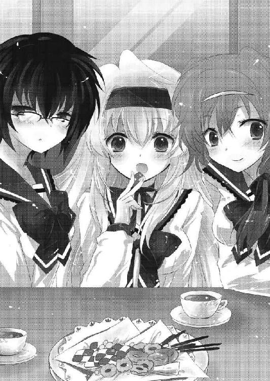

| Re:バカは世界を救えるか？2 (富士見ファンタジア文庫) | |
| 柳実 冬貴 & 一葉 モカ | |
| 富士見書房 (2011) | |

本作品の全部または一部を無断で複製、転載、配信、送信したり、ホームページ上に転載することを禁止します。また、本作品の内容を無断で改変、改ざん等を行うことも禁止します。
本作品購入時にご承諾いただいた規約により、有償・無償にかかわらず本作品を第三者に譲渡することはできません。
本作品を示すサムネイルなどのイメージ画像は、再ダウンロード時に予告なく変更される場合があります。
本作品は縦書きでレイアウトされています。
また、ご覧になるリーディングシステムにより、表示の差が認められることがあります。
口絵・本文イラスト 一葉モカ
ＣＯＮＴＥＮＴＳ
プロローグ
警報鳴り響く夜の雨鶴来市。上空ではサーチライトが縦横無尽に走り、物々しい雰囲気が街全体を包み込んでいた。
時刻は二一時五〇分。雨鶴来市は大都会だ。夜ともなれば繁華街では如何わしい店からそうでない店まで、朝方になるまで賑わいでいるのが日常である。
だが、その日はいつもの雨鶴来市とは違っていた。
出歩いている人間が、一人しかいなかったのだ。
「ハァ！......くっ、ハァ！」
野球帽の鍔を後ろ向きにして被り、安物のジャケットを着込んだ青年が、誰もいない繁華街を疾走している。
身体中から汗が噴き出ているのに、男の顔は真っ青だった。
「しくじった......しくじった......！ まだ事を起こしてすらいないのにどうして奴らが......！」
うわごとのようにそう呟きながら、男は足を動かし続ける。
辺りを見回してみても、ひとっ子一人いない。居酒屋の看板も、ホテルのネオンも、パチンコ屋のライトも、全ていつも通り光り輝いているのに、肝心の人間が見当たらない。街全体が、いきなりゴーストタウンと化したかのように......。
男は確信する。
もはや、自分は鳥かごの中にいるのだ、と。
「くあっ！」
乳酸の溜まりきった足が限界に達したのか、回転が上手くいかずにアスファルトに転倒する。
顔面と腕を酷く擦りむいて痛みに呻きながら顔を上げると、道の先に人影が見えた。
小さな、子供のようなシルエット。
「う、うわあああああああ！」
完全に腰が抜けた状態で後ずさり、男は右手を空中に掲げる。
「ち、ちっくしょう！」
瞬間、男の右手から電撃が放たれた。電撃は雷のように鋭角に曲がりつつ、人影へ接近。
そのまま直撃するかに思われたが、しかし。
「《矛盾騎士》──防ぎなさい」
小さい人影がそう命令した瞬間、男の放った電撃は薄く発光する盾に阻まれた。
人影を守ったのは、まるで中世の騎士のような格好をした、美しい女性だった。
「無駄な抵抗はやめなさい。今すぐ投降すれば命だけは取らないでおいてあげるわ」
騎士の後ろから、黒髪の少女が現れ、男に告げる。
「お、お前らシェードの言うことが信用できるかっ！」
男はすくみ上がったまま右手を真横に向けて電撃を発射。
歩道沿いに設置された消火栓に電撃がぶち当たり、水しぶきが道を覆うほどに噴出した。
同時に男は体中から放電し、飛沫に電気を帯びさせる。
電流を含んだ雨が、少女に向かって降り注いだ。
「チッ！」
水滴を被る瞬間、命令をしたわけでもないのに女騎士が少女を守る。バチバチという耳を劈くような音の後、電流が霧散して静寂が戻ってくる。
すでに、男はその場から逃げ出していた。
少女は小型の無線機をポケットから取り出して、口元に当てる。
「ごめんなさい班長、逃がしました。たぶん路地裏へ逃げたと思います」
『気にするな、俺は奴が逃げ込む場所を予測していた。なに、シナリオ通りだ。──桐咲、トラップの準備は？』
『お、おっけーです！』
『よし。俺もすぐに向かう。お前はそれまで足止めをしろ』
少女は無線を切ると、走り去る青年の背中を見送った。
「あの男......死んだかもしれないわね」
同情にも似た感情を露わにして、少女は薄く笑う。
「だって、うちの班長が相手だもの」
少女から逃げ出した男は、狭い路地裏に逃げ込んだ。
こうなったら雨鶴来市外へ逃げるしかない。できるだけ速く、できるだけ遠くへ。もうそれ以外に自分が生き残る方法は無い。
ゴミ箱やパイプが入り組み、腐臭立ち込める暗い路地を走る。
少女は追ってきてはいないようだ。このまま路地裏を選択して走り続ければ......あるいは。
そう思った瞬間──何かが脛に食い込んだ。
「うわっ！」
思わず体重を崩してしまい、そのまま前のめりに倒れこむ。
が、転倒はせずに、青年の身体は斜めになったまま空中で停止した。
腕や胴体、顔面にまで、何かが鋭く食い込むような感覚が襲っていた。
身動きが、取れない。何かが身体に絡み付いて、動けば動くほどに何かが肉に食い込んでいく。
見た目には何も無いのに......確かに、路地裏に何かある。
細い、ワイヤーのようなものが。
「──あ、安心してください、ゆ、ゆるくしてあるので殺傷能力はありません。多少皮膚が切れたりするかもしれませんけど、そ、その程度で済むはずです」
路地裏の奥から声がしたかと思えば、闇の中から桃色の髪をした女が現れた。
「でも、あんまり動かないでくださいね。絡みついたら、私でも解く自信がありません」
女は、少しだけ罪悪感に苛まれたような顔をして立っていた。両前腕部にはボウガンのような物を取り付けている。
あれは、ワイヤーガンだ。間違いない、この路地裏に張り巡らされているワイヤーは、全てこの女が仕掛けたものだ。
「《裏腹海月》......！ 透明化のネメシスか！」
男は見えないワイヤーに絡め取られたまま、肉に食い込む痛みに呻く。
「う、動かないでください！ 捕縛用のワイヤーと言っても！ 首にでも絡まったら窒息──」
「黙れ！ お前達に捕まるくらいなら死んだほうがましだ！」
「い、命を粗末にしないでください......そんなこと言うと班長が本当に」
「てめーらには何もできやしねぇ！ このワイヤーも金属なんだろう？ 電撃に金属で挑んでくるなんて考えが足りなかったな！ こいつに電流を流せば、俺も動けないがお前達も近寄れない......違うか!?」
女は、う、と押し黙った。
「偽善者ぶりやがって......そうやってお前らシェードは、罪もない能力者達を──」
女に付け入る隙を見たのか、余裕の笑みを浮かべて男が罵声を飛ばす。
と、その時。
「──人を殺しておいて罪もない、か。お笑い種だな」
路地裏から窺える狭い空から、声。
雲に隠れていた月が天空に現れ、都会特有の濁った月光が路地裏を照らす。
流れるような銀髪。群青色のコート。右手に装着された革手袋。
そして、闇夜に輝く青と赤の瞳。
異様な存在感を醸し出す少年が、ビルの屋上に立っていた。
「桐咲、敵を前に躊躇するなと、日頃からあれほど言っていただろう」
「す、すみません......班長」
「だが、よく足止めをした。戻って防諜班を呼べ。後は......俺に任せろ」
言って、オッドアイの少年は屋上からワイヤーで身動きの取れない男を見下すような目つきで睨んだ。
一瞬怯んでから、男が少年にくってかかる。
「ど、どうせお前も俺には手を出せないはずだ！ なんたって今俺の周りのワイヤーは電流が」
「──黙れなまくら。誰が貴様に口を利いていいと言った」
静かな威圧感が、男の言葉を遮った。
直後、少年がゆっくりと屋上の縁に足をかけ、そのまま落下。大きく腕を広げて男を直視したまま自由落下に身を任せる。
「バカが！ 敵の能力も知らずに突っ込んでくるなんて、さてはお前ド素人だな！」
男がワイヤーに取り付かれたまま電撃を放つ。
「電撃なんてのは身動きが取れなくたって発生させられるんだよ！」
雷が高速で蛇のように、落下する少年へと接近する。
が、次の瞬間。
バチン！ という音と共に、男の電撃が相殺された。
「なっ──！ 俺のネメシス......だと!?」
「能力を知らずに手の内を見せるとは......こっちの台詞だド素人」
不敵に笑う少年が、右手に男と同じ電撃を発生させる。
「馬鹿なッ！ まさかお前、もしかして──ッ！」
男の悲鳴と同時に、少年が真下へ右手を向ける。
そして、男がしゃべり終わるよりも早く、
「──シェードの能力泥棒、佐藤光一だ」
少年は、下へ向けた右手の指を、パチンと弾いた。
少年の名は佐藤光一。特務機関シェード、特務護衛班班長にして、最強のネメシス遣い。
人は彼を、畏怖と尊敬を込めて、
能力泥棒と呼ぶ。
......
............
............チュン
チュンチュン......
「......むにゃむにゃ......ふ、ふふ、捕縛かんりょ～、これより帰還しゅる～」
という夢を見た、佐藤光一であった。
Battle １ ラブコメは得意分野なのか？
「ふ......朝日が、眩しいぜ」
健やかな朝の日差しを全身に浴びながら、光一は窓の前で目を細めた。その後ろ姿と表情は、哀愁、とでもいうのだろうか。芝居がかってはいるが、演技とは到底思えない切実なものが身体全体から滲み出ていた。
「..............................................................................くそ、夢かよ......っっ」
辞世の句みたいな深刻さでそう吐き出すと、光一は部屋の床に膝をついて項垂れた。
夢の中で、光一はシェードで特務護衛班の班長を任されており、部下の間宮薫や桐咲兎乃から絶大な信頼を得て、司令の能登原明日菜の右腕として活躍していた。
しかし当然夢は夢。夢だと自覚した時の絶望感といったら、計り知れぬものなのである。
「どーりでビルから落ちる時の滞空時間がやたらと長かったわけだ......！」
つい一週間前、実際に光一は非現実的な出来事に巻き込まれ、晴れてファンタジーな世界への仲間入りを果たした。
七年前、光一の住むこの雨鶴来市に『木漏れ日現象』と呼ばれる謎の光が空から降り注ぎ、数千人の人々がこん睡状態に陥った。そして、光を浴びた人々の中に、ごく稀にネメシスと呼ばれる異能を持つ者が現れたのだ。
世間一般では現象発生や能力者達については隠蔽されており、光一も一週間前まではその事実を知らなかった。しかし、ひょんなことから彼もネメシスの能力者として覚醒し、能力者達の犯罪を取り締まる特務機関シェードに所属することと相成った。
日頃からライトノベルの異能物や、少年少女達が強大な敵と戦うティーンエイジャー向けの漫画に毒されていた光一にとって、正に夢のような状況に出会えたわけである。
──が、現実は光一がさきほど見ていた夢のように都合良くはいかない。
実際は、能力泥棒と呼ばれる能力者は光一とは別人で、光一は通り名を拝借しているだけの偽者だ。能力泥棒のネメシスは《贋作工房》というコピー能力なのだが、光一の力は
《付け焼刃》という出来損ないのコピーを生み出す力である。
理想と現実の違いを体現するが如く、光一の手に入れた非現実は現実寄りに辛口だった。
「いやでも、もしかすると正夢ってことはないか？ そうだ、そうに違いない！ あれは正夢だ！」
さっきまでのカビ臭いオーラが、ものの三〇秒で吹っ飛んでいた。光一はむくりと立ち上がると、眩しすぎて目に痛かった朝日を光合成するヒマワリのように自信満々に浴びる。
「フッ、やはり俺は、将来護衛班の班長になる器なのだ。神が俺にそれを教えようとしていたに違いない」
キリッ、とか、凜々しくニヒルに決めているが、パジャマハットを被りながら言っても全然様になっていなかった。
夜はシェードの業務をこなし、昼は普通の学生として学校に通う。
本日も光一の、エキサイティングでクールでハイクオリティな一日が始まろうとしていた。
鏡の前に立ち、いつも通りベストなヘアセットを施し、ベストなお手製学ランを羽織り、ベストな決めポーズを考案し、モーニングコーヒー（ミルクと砂糖たっぷり）を味わう。
コーヒーを飲み終えて時計を見ると、時刻は朝の七時になっていた。
まだ登校時間にはかなり早いのだが、毎日の日課をこなすために光一は部屋を出る。
光一は学生寮に住んでおり、高校生の身にして一人暮らしである。一人暮らしといっても、学校の寮なのだからそれほど自由な生活は無理だろうと思われるかもしれないが、ここの寮の規則は、表向きはとにかく緩いことで有名だった。門限はあるにはあるのだが、寮長がかなりの放任主義なため、適当なカモフラージュをすれば深夜に抜け出すことは容易だ。
ただし、全て自己責任である。深夜に抜け出して、もし学校関係者にバレればそれ相応の処分が待っており、朝の起床も自己責任なため、当然のことながら遅刻も罰は生徒に科せられる。朝食夕食も生徒達がお金を出し合って自分達で用意し、寮全体の清掃も全て生徒が行う。
「別に自由にやらかしていいぞ。その代わり寮は一切の責任を負わんからな」
寮長曰く、それが大人になるということだ、とかなんとか。この寮にやってくる生徒は、最初こそ自由に酔って好き放題にやらかすのだが、次第に汚染されていくトイレに耐えられなくなったり、食事が用意できず空腹に喘ぐ日々が続いたりで、自ずと役割分担を決めてシフト交代制で行うようになるのだった。
光一の住む『毬藻寮』は男子寮と女子寮が隣接して渡り廊下で繫がれており、食堂は渡り廊下の途中にあるプレハブ小屋みたいな建物になっている。
ちなみに毬藻寮というのは俗称で、正しい名前は『万里の寮』という実に語呂の悪い名前だった。一〇年前、この寮が出来たばかりの頃、学生達が清掃を怠ったため、寮全体が謎の植物のツルに覆われてしまい、見た感じ完全に毬藻のようだったことから、毬藻寮と呼ばれるようになったとか。
現在はツルが建物を覆うなどということはなく、きちんと清掃されている。男子寮、女子寮共にリーダーが存在し、役割分担を全て取り仕切っているからだ。
食事のいるいらないは、朝食の場合前日の夜九時までに、夕食の場合は始業時間までに申告するという制度によって決められ、清掃担当は料理の出来ない生徒達から選抜され、朝と夕食後の二回に分けて掃除が行われる。その他システムなどは卒業生が残したデータを参考にしており、この寮は生徒達によって半組織化されていると言ってよい。
規則は緩いが、全て自己責任とは、こういうことなのだ。全部自分達でやらなければならない。「俺は別に汚くても構わない」では通用しないのが毬藻寮なのである。
「お、光一じゃん。おはようさん、相変わらず朝早いなお前」
光一がキリキリとした動きで廊下を歩いていると、丁度部屋から出てきた幼馴染の東野一樹と鉢合わせた。見るからにチャラい感じの金髪に、耳につけたピアスが特徴的な、見た目通りチャラい男である。
一樹は洗顔を終えたまま外に出てきたのか、顔をタオルで拭きながら光一に声をかけてきた。
「お前こそ早いじゃないか。ああ、そうか。今日はお前が清掃当番なのか」
「そぉなんだよぉ。朝っぱらからかったるいったらないぜ、ったく」
「ふ。確か今日は便所掃除か。貴様にお似合いだな」
前髪を優雅に払って、あからさまに見下すような視線を一樹に向ける光一。
「いや、今日は窓拭きだぜ？ 便所掃除は光一の回だ」
「ほぁ!? なんだと!?」
「お前先週掃除サボったろ？ チダイが言ってたぞ。光一は三週連続で便所掃除だって」
「バカな！ 何故俺が!? 明らかな不当ではないかっ！ 断固拒否する！」
「いや正当だろうどう考えても。三日連続飯抜きになるよりマシと思えよ」
ニッヒッヒ、と蔑むように笑ってくる一樹に、光一はぐぅの音も出ないご様子。一樹の言うチダイというのは、渡部知大という幼馴染第二号のあだ名である。剣道部に所属する背の高い男で、武士という言葉がしっくりくる寡黙な雰囲気を纏っている。ちなみにチダイは男子寮のリーダーで、毬藻男子寮のバカ共を見事に纏め上げている自分にも他人にも厳しい男だ。今朝は朝練があるため、食事当番のチダイは昨晩朝食の下ごしらえを終えて早朝に寮を出て行ったらしい。
「ぐ、ぅぅぅっ、好き勝手言いやがって......貴様らは知らんのだろうがな、俺は......俺はなぁっ！」
「俺は？」
「......俺......は......ぐぅ、な、なんでもないッ！」
シェードの勤務に忙しいんだ、と言いそうになって、なんとか言葉を呑み込んだ。
シェードの存在自体が極秘なのだ。口に出したところで光一の妄想と決め付けられて終わりなのだろうが、一応光一も組織の人間としての自覚があるため、律儀に規則を守っていた。
「んで、光一は今朝もアレに行くわけか？」
「ああ......まあな」
「......俺、お前には見習おうと思うところはひとっっっつも無いけどよ、アレだけはマジで尊敬するぜ」
「さり気に腸が煮えくり返りそうなことを言っているのは、早朝なので勘弁してやるが......お前達がアレを何故そこまで恐れるのか、俺にはよくわからんのだが」
光一が首を傾げると、一樹はポンと肩を叩いて、光の消え失せた虚ろな目を向けてきた。
「お前は知らないからそういうことが言えるのさ......お前が雨鶴来に戻ってくるまで......俺達がどんだけ......ど、どんだけ......どど、ど......うっ、悪い、吐きそうッ」
一樹は何か嫌なことでも思い出したのか、言いながら見る見る顔を青くしていった。仕舞いにはブルブル震えだし、口元に手を当てて、トイレへ駆け込んでいく。
光一はその後ろ姿を、「さっぱりわからん」とやはり怪訝そうにしながら、一樹の言うアレをするために女子寮へと向かった。
渡り廊下を歩き、朝食で賑わう食堂を通り過ぎると、女子寮の扉にたどり着いた。男子寮と女子寮の行き来は夜間のみ禁じられているため、昼間は扉に鍵はかかっていない。
「ほや？ 佐藤君だ。おっはよ」
扉を開けると同時に、一人の女子と鉢合わせた。
すかさず光一はドアの縁に背を預け、腕を組んで流し目を女子に向ける。
「──良い朝だな、石崎」
──キリッ。
出会い頭なのにこの姿勢は、すごく不自然だった。
「あ～............七点、かなっ」
「!? 何の点数だ!?」
「ちなみに一〇〇点満点中だよ」
「バカなッ！」
盛大な苦笑を向けてくる石崎という少女に、抗議の視線を向ける光一。だが、汗ばむ彼女の肌を見て、すぐに視線を和らげた。
「......ふむ、ランニングか。朝っぱらから汗をかいてご苦労なことだ」
自然にクールを装い、キリッと決めてみせる。石崎は光一を見て景気良く笑った。
「アッハハ、君は相変わらず変な格好だねっ」
「......変じゃないッ。全然変じゃないぞ。......変じゃないんだ」
何故か自分に聞かせるように言う光一を見て、また少女が笑う。
彼女の名前は石崎朝顔。光一と同じ毬藻寮に住む同級生で、光一の幼馴染である浅野広美とは特に仲がいい。
朝のランニングでもしていたのだろう。うっすらと汗をかいた肌が上気している。上着はジャージ、下はスポーツパンツ。そして首にタオルを巻くという、見るからにスポーツ少女な姿だ。始終笑顔の、明るい女の子である。
「今日もヒロちゃんのアレかい？ 毎朝大変だね」
「いや、そうでもない。お前は毎朝走っているようだが、それは朝練なのか？」
「んにゃ、陸上部は朝練ないよ。家が遠い生徒が多いから、朝練は効率悪いのさ。私のこれは自主トレ」
ニコニコしながら今も足を動かしてストレッチする朝顔に、ふーんと返す。朝顔は学年でも人気が高く、チャームポイントの笑顔が可愛いと評判だ。基本的にサバサバした性格で、気を遣わなくていいからか、男女問わず好かれている。
「でも、佐藤君が転校してきてくれて私達も助かってるよ。ヒロちゃんはほんと、君が来るまで困ったちゃんだったからさ」
「よく周りからそう言われるのだが......そんなに酷かったのか？」
「そりゃあもう、毎朝血の海」
快活に笑いながら血の海とか言われて、光一は少し背筋がゾッとした。
そんなバカな、いくらドＳな広美と言っても彼女は精神的なドＳであってバイオレンスに富んだタイプではないはずなのだが......。
「アハハ、冗談さ。さすがにそこまでは......あいやぁ、うん......物質的な血の海じゃないんだけど、アレをしに行った生徒は精神そのものが血反吐となって下水道に流されてしまう......って感じかなっ。オブラートに包んで言えば」
「......それでオブラートに包んでいるのか？」
「うんうんっ。だから佐藤君が来てくれて助かってるんだよ？ さて、私もシャワーを浴びて朝ごはん食べないと。佐藤君も早くヒロちゃんとこいかないとご飯食べそびれるよっ」
内転筋のストレッチをしつつ笑顔を向けてくる朝顔に、そのまま別れを告げて、光一は広美の部屋へ向かった。
一応二度ほどノックをして、扉の前で広美の反応を待つ。
「......やはり今日もダメか」
目を細めて溜息を吐く。
「広美、入るぞ」
そして特に気負った風もなく、光一はドアノブに手をかけて扉を開いた。
部屋の中は薄暗かった。明かりはカーテンの隙間から漏れる日差しだけだ。
広美の部屋は、お世辞にも綺麗に整頓されているとは言いがたかった。脱ぎっぱなしで投げ捨てられた制服に、床に積み上げられた文庫本の数々。食い物や飲み物の類はさすがに散乱してはいないし、匂いも女の子らしい甘酸っぱい香りが部屋に漂っているのだが、とにかく本の量が尋常じゃなかった。おまけに女の子の部屋とは思えないほどの飾りッ気の無さだ。小物なんか最小限で、人形もなければポスターも無い。あるものといえば毎年寮に送られてくる大手デパートのカレンダーと、机に立て掛けられた幼少の頃の写真くらいのものである。
「だらしがねぇ。たった一日でこれだ」
光一は慣れた手つきで洗濯物を籠に放り込んでドアの外の回収箱に置き、散乱した文庫本をきちんと巻数順に整理して本棚に戻した。本棚に入りきらなかった分は横に置かれた段ボールの中に収納。
「掃除機は土日にかけてやるとして......問題は埃だな。一度物を全部外に出して掃う必要がある」
カーテンの隙間から差し込む光を反射し、キラキラと輝きながら浮遊する埃を見て、光一は月末に大掃除をする決意を固める。
「ま、とりあえずはこんなものか」
うん、と頷いて、手際の良さに我ながら感心。
そしてしばし無言。
数秒後──バタッ。
膝と手をついてその場で蹲った。
「何故俺がこんなことを......！ そして何故俺はこうも順応してしまっているのだ!? 本来逆ではないのかッ。世話焼きの幼馴染が朝起こしにくるというシチュエーションは主人公にのみ許されるものではないのかッ！ どうなんだ広美ィッ!?」
クワッと、開け放たれたクローゼットの中にある毛玉を見やる。毛玉、もとい毛布にくるまってぴっちりとクローゼットに収納されてしまっている広美に視線を投げかける。
広美はどういうわけかクローゼットの中で熟睡していた。背を壁に預けて、本を片手に持ったまま、すぅすぅと寝息を立てている。
「お前は猫型ロボットかっ......」
そんな広美を見て、光一はしくしくと涙を流した。何故クローゼットの中で本を読む必要があったんですかとか、寝辛くないんですかとか、いろいろツッコミどころ満載だった。
広美は普段人前では何事もきっちりこなし、クールビューティーの名をほしいままにするエリートＯＬみたいな雰囲気を纏っているのだが、私生活に関してはズボラというか、自分のやりたいことを優先するタイプだった。
昔はこうではなかった。光一は、机の上においてある写真立てに目をやり、懐かしい広美の姿にまた涙する。
写真の被写体は幼馴染四人組。中央の光一は、黒いマントを羽織って、片手に木製の剣だかなんだかよくわからない棒切れを持ち、頭はフルフェイスヘルメットを被ってポーズを決めている。その左右隣には着物姿で笹の葉を口にくわえ、竹刀を帯刀したチダイと、茶髪をモヒカンにして段ボールアーマーを着込んだ世紀末風味の一樹が立っている。そして、真ん中の光一に隠れるようにして、小さな広美が泣きべそをかきながらオドオドとしていた。
この頃の広美は光一にいじめられ、くだらない遊びにつき合わされていた、か弱い女の子だった。チダイと一樹は光一のアホっぷりとなりきりっぷりを面白がってついてきていただけだったが、広美は本当に奴隷のように光一に振り回されていたのだ。
それでも、いつも泣きべそをかきながらコーちゃんコーちゃんと後ろをちょこちょことついてくるのが、浅野広美という女の子だったはずなのだ。
それが......どしてこうなってしまったのか。
光一は盛大に嘆息して、クローゼットの中でミノ虫みたいになっている広美の前でしゃがみ込んだ。
「おい、起きろ。広美、おいってば！」
肩を摑んで身体を揺らす。勢いがありすぎたのか、広美の後頭部を後ろの壁にガンガンぶつけてしまったが関係ない。この程度で起きるタマではないのだ。
かくなる上は......。
光一は眠っている人間に一番効果的な方法を取ることにした。
おもむろに手を伸ばして、広美の鼻を摘んで顎を押さえる。
しばらくすると、眉をひそめて手足をバタバタさせた後、ぱちりと目を開けた。
半開きの瞳が、宙を見つめていた。
「よし、起きたか。学校へ行く支度をしろ。四〇秒だけ待ってやる」
ぶっきらぼうに言いながら、ぼーっとした広美のデコをペシペシ叩いてやる。
そうすることでやっと広美の焦点が合い、いつも以上に眠たそうな瞳が光一を捉えた。
そして見つめ合うこと数秒後、小さな唇を動かして、広美はこう言った。
「......あー、コーちゃんだー」
............。
懐かしい響きに、幼馴染の光一ですら驚いた。コーちゃんとは七年前に広美が使っていた光一の愛称だ。
昔の夢でも見ていたのだろうか......今日はいつにも増して寝ぼけているようだ。
広美はどこかホッとした顔で、なおも光一の顔をまじまじと見る。彼女の身体を包んでいた毛布がずれて、ワイシャツ一枚だけの広美の姿が露わになってしまった。元々人並み外れたプロポーションを持っていたが、この扇情的な姿は目の毒以外のなにものでもない。
普段からキツい態度を取ってきた広美が、こんな無防備な姿を晒しているのだ。
いくら幼馴染の光一といえど、生唾を飲まずにはいられないはずだ。
「............」
光一は無言で、ゆっくりと広美の頰へと手を伸ばす。耳にかかった髪を払い、もう片方の手で、彼女の顔を包むように触れる。
そして次の瞬間。
──むにゅっ。
むにゅにゅ。むにゅむにゅむにゅむにゅ。
思いっきり、寝起きの広美の頰をこねくり回した。
「ふははそぉだコーちゃんだ。起きろヒロミゴン。さもないと日頃の恨みを今ここで晴らしてしまうぞ」
光一は寝ぼけていることをいいことに、広美の頰をこれでもかというほど弄んだ。ちなみにヒロミゴンというのは幼い頃、嫌がる広美に無理矢理光一が名付けたあだ名である。
日頃散々突き刺さるような言葉を投げかけられてきたのだ。これくらいは許される......光一もそう思って容赦なくこねくり回す。
「ふ、ふふ。意外と柔らかいではないか。冷徹女のことだから鉄面のように硬くて冷たいと思っていたがなかなかの揉み心地」
「............」
「むふふこれは良い発見をした。これから一言暴言を吐かれる度に毎朝ひと揉みお前の頰を陵辱してやるとしよう。ぬふふ覚悟しろヒロ──」
「──今すぐその汚い手をどけろウジ虫野郎」
「ミ......ゴ......」
気づくと、地獄をそのまま宿したような瞳が、光一を捕捉していた。
毬藻寮から雨鶴来高校まではバスで五分、徒歩で二〇分ほどである。雨鶴来高校は街外れの丘の上にあるため、距離的にはたいしたことないのだが、学校付近までくると昇天坂と呼ばれる気が遠くなるような長い坂があるため、生徒達は毎朝重労働を強いられていたりする。
「なぁ......おいこら......ちょっと、さすがにこれは酷すぎじゃないか」
夏も過ぎたというのに汗だくになりながら、光一は昇天坂をのそりのそりと上っていく。右手には自分の学生鞄を持ち、左手には広美の鞄。そして背中には手提げ式のスポーツバッグを無理矢理背負い、さらに首にはやたらと重い紙袋を引っさげている。
「............」
全力疾走マラソンランナーのようにグロッキーな光一の前を、広美が無言で歩いている。表情はいつもの冷め切った鉄のようなのだが、歩くスピードは半ば競歩だった。
表情に出ていなくとも、怒っているのは誰の目にも明らかである。
「お前......何でこんな大荷物なんだよ。このスポーツバッグは何だ？」
「陸上用の靴とか着替えとか水筒とかテーピングとかいろいろ」
「く、くそ、幽霊部員のくせに何故今日に限って。というかそういうの部室に置いてこいよ。......あとなんだよこの紙袋、何が入っているのだ」
「本」
「なんだ、本かよ」
「と、石」
「石ィ!? 何故に石!?」
「嫌がらせ」
「チクショー！」
干し柿みたいにしおれた顔で叫ぶ。
坂道はまだ三分の一程度。紅葉が鮮やかな坂の先に見える校門は、光化学スモッグでも発生しているのではないかというほど霞んで見えた。
「この俺が何をしたというのだ......ほっぺた揉みしだいたのを怒っているのなら謝ってやらないこともないが」
ふてぶてしくそんなことを呟くと、視線の先を歩いていた広美が、くるりと身体を反転させてきた。
眠たそうな目を鋭くして、眉をひそめている。心なしか、屈辱と恥辱が混じり合った複雑な色が表情から見て取れた。
訂正。珍しく表情にアリアリだ。いつになく怒っているような気がする。
「............ヒロミゴン」
「は？......何？」
「ヒロミゴンって言った。昔のあだ名で呼んだ」
どうやらほっぺたの件で怒っていたのではないらしい。言われてみて、光一は過去に広美がヒロミゴンというあだ名を嫌がっていたことを思い出した。そういえば、ヒロミゴンと呼ぶと、いつも「やめれ～」と泣きながらポカポカ殴ってきたっけ。
しかし、そういう理由ならばお互い様だと、光一は抗議の姿勢に入った。
「いや、そんなこと言ってもな。先に呼んだのはお前だろう。寝ぼけながら昔みたいにコーちゃんコーちゃ──」
──バキッ！
「──ビキャクッ！」
無言のハイキックが首元に直撃。手に持っていた荷物を全て落として、光一は地面に転倒した。
広美は白く美しい脚をそのままの勢いで回転させて、何事もなかったように元の姿勢に戻っていた。そして、ふわりと舞ったスカートを手で押さえ、ぷいっと前を向いて先に行ってしまう。
「な、なんだというんだあいつは......」
普段突き刺すような言葉で責めてくることはあっても、物理攻撃をしかけてくることはなかったのだが......今回は何か違うらしい。さっきよりも早足で、広美の後ろ姿が遠ざかっていく。
光一は首をさすりながら煮え切らない思いで荷物を拾い上げ、再び地獄のような坂道を上ろうとした。
直後、
「コーイチ─────────ッッッ！」
──ゴキャッ。
またしても嫌な音がした。黄色くけたたましい呼び声と共に、首の後ろに衝撃。
今度は声もなく、光一はそのまま地面にうつ伏せにぶっ倒れた。今日は何故こうも首を執拗に攻められるのか......飛びそうな意識の中、首元に回っている奇襲者の腕をポンポンと叩く。
「ア......アルル......死ぬ......死んでしまう......っ！」
「ん～ふふふぅ～会いたかったぞコーイチィ～～♪」
ジャンピングハグを繰り出した後、頰ずりをしてくる金髪碧眼の少女。端正な目鼻立ちから、静謐なイメージを他者に与える絶世の美少女だが、実際は外見と行動のギャップが凄まじいことになっている。
「頼む......朝からラブコメは......俺の命......が」
「そう言ってくれるなコーイチ。土日は外に出してもらえぬのだ、このくらいのスキンシップよいではないかよいではないか～」
「どこで覚えたそんな言葉......！」
「昨日テレビというものを買ってもらってな～？ 時代劇というものでやっていたのだ」
この、見るからに犬っぽい少女の名前は、アルル。《一握りの希望》と呼ばれる特殊なネメシスを持つ、悲劇の少女である。
彼女の存在を巡って、現在世界は揺れ動いていた。七年前の『木漏れ日現象』によって、ネメシスを得た者達は『神』の声を聞き、世界が一〇年後に滅びるという事実を突きつけられた。そして、世界を救う方法として用意されたのが、《一握りの希望》......つまりアルルだったのだ。
《一握りの希望》とは、世界そのものの時間を現在から七年前、つまり『木漏れ日現象』が起こる直前まで巻き戻すことができるという、非常に特殊なネメシスである。
しかし発動条件があるため、決して容易ではない。毎月一三日に必ず起こる『木漏れ日現象』の特異点発生と同時に、能力者本人であるアルルを殺す必要があるのだ。
滅びへと向かう世界を救う手がかりは《一握りの希望》しか無い。
一人の犠牲によって、世界を救う。
それが世界に残された唯一の選択。
しかし......それを良しとせず、アルルを命を賭して守ることこそがシェード特務班の使命であり、それは光一自身の目的でもあった。
もにゃもにゃと頰を擦りあわせてくるアルルをなんとか躱し、乱れた身なりを整えてから、再びアルルに目をやる。
「おはよう......すっかり制服も板についてきたな、アルル」
「おはよう！ そうか？ なかなか動きやすくて好きだぞ、この服は」
言って、くるりと回って笑顔を見せる。
アルルは現在、光一と同じ雨鶴来高校に通っている。金髪碧眼のまるで西洋の人形のような少女が、日本の学校の制服を着ているというのは、不自然ではあるのだが、なんとも目のやり場に困る。ただでさえ短いスカートからのぞく脚が、朝日を反射してまぶしかった。
毎朝のことなのだが、赤面せずにはいられない。
光一は、すぐに視線を逸らして、話の流れを変えた。
「か、かれこれ一週間になるが、学校は楽しいか？」
「うん！ 言葉では言い尽くせぬほどに楽しいぞ！ いっぱい人がいて、ものがいっぱいあって、知らないことがいっぱいだ！」
子犬みたいにキャッキャしてはしゃぐアルルを見ていると、こっちまで嬉しくなってくる。彼女はシェード本部に七年もの間隔離されていたため、つい数週間前まで外に出たことがなかった。
ネメシスにはアンチテーゼという対価のようなものがあり、アルルのネメシスも例外ではない。彼女は《一握りの希望》の対価として、七年よりも前の記憶の一切を失っている。保護された当初は言葉すら話せない状態だったらしく、精神と知能は赤ん坊同然だったという。
なので、アルルにとって外の世界の物は、何でも興味の対象になっていた。
「昨日は家庭科の授業で調理実習なるものをやったのだ。聞いてくれコーイチ！ ボクもついにお料理を作れるようになったのだぞ！」
「ほぉ。何を作ったんだ？」
「卵焼き！」
「ふむ。まあ、基本だな」
「の卵を割る作業ができるようになった！」
「............ク、クールだな」
「うむ！ 今度コーイチにも見せてやるぞ、楽しみにしていろ！」
それは料理とは呼べない、と言おうとしたが、あんまりにもアルルが嬉しそうなので押し止めた。野暮なことは言いっこなしだ。
ふふ～ん、と誇らしそうにするアルルを微笑ましく見守りながら、光一は坂を上る。
丘の上にある雨鶴来高校の校舎が、遠くに見えた。校舎は一週間前と少し雰囲気が違う。正門のところには大きな立て看板が置かれ、そこはかとなく装飾品が飾られている。看板に書かれている文字は、『雨鶴来高校学園祭』。真に何の捻りも無いネーミングである。
「そうか、そろそろ学園祭の時期なんだな」
ここ最近忙しいというか、非日常にロープ無しでバンジージャンプしていたようなものなので、学園祭にはあまり気がまわらなかった。
雨鶴来高校の学園祭は大規模なことで有名だ。この市には学校が二つしか存在しないため、雨鶴来高校の生徒数はかなり多い。そのため、必然的に学園祭の規模も大きくなる。
その上、昔からの伝統で、クラス同士で出し物が被ってはいけない、という取り決めがあるおかげで、オーソドックスなものからマニアックなものまでよりどり見どりな出店や娯楽が展開されるのだ。そんな節操なしな祭りを楽しみにして、今では市街からも一般来場者が訪れるほど、雨鶴来高校の学園祭は有名だ。
光一は、アルルに学園祭のことを伝えてやろうと横を向いた。
のだが、横にいるアルルは正門の方を見つめて、目をキラッキラさせていた。
「......アルルさん？」
あまりのキラキラっぷりに思わず敬語になる。
「コーイチ！ もう少しでガクエンサイというものがあるのだろう!?」
「あ、ああ......知っていたのか」
ワクワク顔で迫ってくるアルルに、光一はたじろいだ。
「カズキやチダイやヒロミの話では、生徒達がいろいろな出し物を考え、競い合い、考え得る限りの方法で客から金をぶんどるための行事だが......その実、生徒達の血と汗と涙の結晶である儲けを、最終的には全て学校が強奪していくという、情熱とやるせなさを併せ持つ不毛かつダーティーな祭りだと聞いている！ 胸が熱くなるなっ！」
「間違ってないが表現が卑屈すぎる！ あいつらなんてことを吹き込んでくれたのだ！」
そして、そんな祭りだと聞かされて、アルルはどうしてこうも楽しそうにしているのだろう......普通だったらダーティーな学園祭とか参加したくない。
光一は、正しい知識をアルルに教えてやった。
「──というわけだ。俺達のクラスも今日から作業が始まるはずだ。確かうちのクラスは......」
出し物を思い浮かべて、光一は口を閉じた。
そして下を向き、額に手を当てて......。
「......闇鍋だったな」
「闇鍋？ 鍋がコーイチの好きな闇属性なのか？」
「そうではない。闇鍋とは、暗闇の中で具の計り知れない鍋を突き合う......まあゲームのようなものだな」
「ゲームか！ それはすごく楽しみだぞ！」
「ああ......命がけのゲームだ」
遠い目をして、光一がぶるりと身体を震わせる。闇鍋の経験は光一にもあるらしく、幼少の頃の悪夢を思い出して薄ら寒さを覚えた。闇鍋でいい経験をした人間はほとんどいないだろう。特に鍋を突き合った相手が性格の破綻した幼馴染連中だった光一にとって、その闇鍋はもはやトラウマとして心に深く傷をつけたらしい。幼少の頃、闇の中で箸で摑んだ具の感触、口に運び咀嚼した時のあの戦慄......思い出すだけでも吐き気を催すあの具材の名前を、光一は思考内ですら文字を紡ぐのに拒絶反応を示した。
まして光一の組の出し物を提案し、先頭に立って主導するのは、幼馴染の東野一樹。クラスが違うのに何故かＢ組のＨＲに乱入して提案したのだあの男は。しかもそれが通ってしまったのだからこの学校、いやＢ組は間違っている。
（何故俺の提案したシルバーアクセサリー展示会が却下されて別のクラスの一樹の提案が通るのだ......）
人死にまでとはいかないが、血を見るのはもはや明らかである。
命がけのゲームと聞かされてもなおアルルは、「燃えるではないかっ」と楽しそうにはしゃいでいる。たぶん、恐らくきっと、光一の伝えたい闇鍋の恐怖について少しも理解していないのだろう。
しかし......。
「へへぇ～、へへへぇ～♪」
こんなにも楽しそうなのだから、野暮なことを言うのは止した。スキップしながら歩くアルルを見て、光一は薄く微笑む。彼女を外へ出す許可をもらって、本当に良かったと思う。あのまま穴蔵に閉じこもったままでいるよりは、こうして日の光を浴びている方が幸せなのは当たり前だ。
（......まあもっとも、少なからず問題はあるのだが......）
と、心の中で苦笑を漏らした時、だらだらと坂道を歩く生徒達の足音の中に小走りな感じの足音が聞こえてきた。この昇天坂を走って上ろうなどというのはどこの勇者だ、と振り返ってみると、そこには、
「ぜぇ......ぜぇ......」
赤い顔でこちらに向かって走ってくる、小さい女の子がいた。
長くしなやかな黒髪と、赤く火照った柔らかそうな頰。ぶかぶかの制服に、短い手足。
他の誰かと見間違えようがない。クラスメイトであり、特務機関シェードの同僚でもある間宮薫だ。
「あ！ カオル──！ 遅いぞ──！」
二〇メートルほど離れた場所を走る薫に、アルルがぴょんぴょん跳ねながら手を振る。それに応えるようにキッと目を鋭くして、薫はアルルを睨んだ。
「あんた......ねぇ......ッ！」
腕と足を大きく振りながら、薫が再び走り出す。が、すぐにまたバテてしまい、五メートル刻みに休憩しながら、実に三〇秒近くかけてようやくアルルのもとまでやってきた。
膝に手をつき、息を整える。
そんな薫に、アルルが、
「大丈夫か？ カオル」
「大丈夫じゃ──なあああああああああああああい！」
心配そうにアルルが顔を覗き込んだ瞬間、薫はいきなり往来で怒号を響かせた。
通学中の生徒達の視線が集まったのも束の間、薫は叫んだそのままの勢いでズズズイと光一のもとまで近づき、首根っこを引っ摑んで街路樹の後ろへと引き連れて行った。薫は街路樹に光一を押しつけ、長ランの裾をぐいぐいと引っ張って、切羽詰まった顔を向けてくる。
「もう無理無理もう限界、一発、一発殴らせなさい......！」
「何故!? 俺がお前に何をした!?」
「あんたじゃない......！ あの子よあの子......！」
声を潜めて、薫はキョトンとするアルルを指差した。今にも殴りそうに右手を上げて、さらに薫が迫ってくる。
「お、おぉ落ち着け、なんとなく言いたいことはわかるがとりあえず殴るのはやめろ！」
「あたしもう耐えられない！ 毎日毎日あの子の予測不能な行動に振り回されながら護衛なんてそもそも無茶な話なのよ！ さっきだってあたしが司令に電話してる間に気がついたらいなくなってて、リボンにつけた発信機の電波辿ってやっと見つけたと思ったら、猫がリボンつけて歩いてたのよ!? 意味わかる!? 可愛いからって猫にリボンつけてどっか行ったのよあの子は！」
「まて！ さっきから黙って聞いてりゃなぁんでそれで俺が殴られるんだ!?」
「八つ当たりに決まってるでしょうが！」
「貴様──ッ！」
相も変わらず理不尽なキレ方をしてくる薫に、抗議の悲鳴を上げる光一。
薫は毎朝シェード本部まで赴き、アルルの登校を護衛していた。
毎朝毎朝てんやわんやしているらしい。光一が同行しないのは、単純にシェード本部と光一の住む毬藻寮が離れているからだ。そこで比較的本部に近い場所に住む薫がこの任を背負わされたわけだが......。
「あんたはいいわよねっ。毎朝いつも通りのんべんだらりと歩いて登校すればいいんだからっ」
「んなっ！ 俺が最初に朝の護衛を買って出たというのに、お前が勝手に『あんたじゃ安心できないからあたしがやる』って言い出したんだろうが！ 自分の不甲斐なさの結果を人に八つ当たりするんじゃない！」
「うぐ......ぬぬッ」
「俺だってなぁ！ できることならお前と代わってほしいのだ。お前は知らないだろうが、俺だって毎朝毎朝広美の部屋を掃除して広美を起こさなきゃいけないのだぞ！ お前にこの逆パターンの気持ちがわかるというのか!?」
「後半は関係ないでしょそれ！ ていうか浅野さんとはやっぱりそういう関係だったわけね！ いいんじゃないドＳとドＭカップルなんてお似合いすぎてドン引きだわ！」
絵に描いたような痴話喧嘩を繰り広げた挙げ句、殴り合いの喧嘩になりそうになったところで、
「コーイチ！ カオル！」
アルルが間に割って入った。
痴話喧嘩をしていた二人の視線が、怒りのままに勢いよく声の方へ向く。
そこには......。
「この乗り物はなんという乗り物なのだ!? 生徒達がたっくさん乗っていたぞ！」
目をキラッキラさせたアルルが、帰りのバスの窓から顔を出して手を振っていた。
「おお！ 動き出した！ どこへ行こうというのかねー!?」
閉まるドア。校門の逆方向へ発進するバス。その中でキャッキャするアルル。
光一と薫は一度顔を見合わせた後、猛ダッシュでバスの後を追うのだった。
四限終わって昼休み。
早朝、Ｕターンしたバスを追いかけて通学路を逆走し、なんとか次の停車場でアルルを引きずり下ろした光一と薫は、もちろん遅刻した。朝っぱらから全力疾走したおかげで二人は朝のＨＲから、ほぼ返事がないただの屍状態だった。
今はアルルと薫と光一の三人で、屋上で昼食を摂っている最中なのだが、朝の猛ダッシュのせいで胃のシェイクが治まらず、食欲が無かった。
特に薫は顔色が悪く、目に隈もできていた。ここ一週間アルルの護衛を徹底してきた彼女は、今も神経質に辺りを警戒している。
「......なあ、何もそこまで警戒しなくてもいいと思うのだが」
「あんたには危機感ってもんがないのかしら。どこに敵が潜んでるかなんてわかったもんじゃないのよ。アルルを外に出す提案に賛同した手前もあるし......あたしにも責任がある。何かあってからじゃ取り返しがつかないのよ」
「それはわかるが、そんなに神経質になっているとそのうち身体を壊すぞ」
キョロキョロと病的なほどに辺りを見回す薫を見て、光一は盛大に溜息をつく。
「逆に怪しいぞ、薫」
「名前で呼ぶなっつーの気色悪い......あんたこそよく落ち着いてられるわね」
信じられないという顔の薫に、光一はフッと笑ってみせた。
「むしろアクシデントは望むところだ。いついかなる時も動揺せず、冷静に対処する......それが俺のポリシーでありスタイルだ」
キリッ。
「藤堂との最初の戦いで泣きべそかいていた男が、何言ってんのかしら......」
「か、かいてねぇよ！ 泣きべそかいてねぇよ！ な、なにを証拠にそんな！」
顔を真っ赤にして否定するが、完全に墓穴を掘っていた。
薫は弁当を箸でつんつん突きながら、浅く嘆息した。
げっそりとしている薫を見て、アルルは、
「ろーしたかほる、しょくよくがにゃいのか......」
冬眠準備中のリスが如く弁当を頰張りながら、やたらとピュアな目で心配そうに尋ねてきた。食べ物でぱんぱんに頰は膨れ、口元には食べかすがたくさんついている。
もっちゅもっちゅと音を立てて咀嚼するアルルの顔を間近で見ていると、薫の切羽詰まった表情が少し緩んだ。
「......食べながらしゃべるんじゃないの。それからもぐもぐする時は音を立てない」
ポケットからハンカチを取り出し、アルルの口元を拭ってやる。アルルはくすぐったそうに目を瞑った。
「ん～～～」
「まったく、兎乃はどういう教育をしていたのかしら......箸の持ち方くらいきちんと教えておきなさいよ」
二人のやりとりを眺めていて、光一は「おお」と思った。薫には透という妹がいるのだが、外見が幼いだけに全然姉には見えず、むしろ普通に成長した中学生である透の方が、明らかにお姉さんに見えた。
が、こうして見ると、やはり薫は面倒見が良い姉気質なのだろう。変にドジではあるが、両親のいない薫は、たった一人で透の面倒を見てきた。家事炊事の全てをこなし、学校に通いつつ放課後はバイト三昧。その上緊急時はシェードの活動に身を投じているのだから、外見からは想像もできないほどの苦労人だ。
最初はアルルに冷たく当たっていた彼女だったが、藤堂の一件からアルルに対する態度が和らいでいた。見た目が子供の薫と、中身が子供のアルル。もしかしたら上手いことバランスが取れているのかもしれない。なんとも微笑ましい光景だ。こういう薫を見ているのは、光一としても心安らいだ。
「......？ なにニヤニヤこっち見てんのよ、不気味な奴。また変な妄想でもしてたんでしょ。アルルも気をつけなさいよ？ こういう変なのに声をかけられても相手にしないこと。いいわね？」
............口が悪くなければの話だが。
引きつった笑いを浮かべつつ、光一は視線を外して空を仰いだ。
裏切り者、藤堂との戦いからかれこれ二週間。あれ以来、特にこれといった事件は起こっていない。アルルを守るために組織された特務護衛班は通常任務、即ちネメシス遣いの犯罪を阻止する活動にも参加させられるはずなのだが、光一には一向にお呼びがかからなかった。......無理もない。護衛班の面々や、司令の能登原明日菜に、自分の能力が《付け焼刃》という出来損ないのコピーしか生み出せない力だということが発覚してしまったのだ。使えないとわかった以上、戦闘に参加させてもたいした成果は得られないと上は判断するはず。
昨夜の夢のように、そうそう上手くいくわけがないのだ。
「ふん......上の人間はまだ俺の本当の力を知らないのだ。本気を出せば俺だって......」
藤堂戦での華麗なる勝利を思い出し、ほくそ笑む。
捕らえられたアルルを助けるために一人で戦場へ駆けつけ、圧倒的な劣勢に追い込まれようとも諦めずに立ち向かい、真の力に覚醒して敵を撃退。『木漏れ日現象』が降り注ぐ前に颯爽とアルルを救出し、熱い口づけを......という、盛大に美化された回想を頭の中で繰り広げた。
流れは間違ってはいないのだが、結論から言って「辛うじて勝てた」という結末だったと言わざるを得ない。《付け焼刃》の特性、というよりも唯一武器として使用できる部分は、コピーした能力の特性の一部だけを驚異的に伸ばすことができる、というものだった。それに気づいた光一は藤堂の過去を調べ、本人を前にして探りを入れつつ、トラウマを刺激することで辛勝することができたわけである。
辛勝だ。作戦は大成功だったが結果は惨憺たるもので、光一は危うく左腕を失いかけ、挙げ句の果てには一時的に心肺停止にまで追い込まれた。結局藤堂にトドメの一撃をくらわせたのは薫だし、アルルを救出したのも薫。カッコよかったのは見事にはったりが決まった時だけ。
決め手がはったりとは、主人公とは思えない卑怯っぷりである。
（勝てばいいのだ。戦いは結果が全て。過程など些細なことにすぎない）
フッ、と笑って屋上の縁のでっぱりに腰掛けながら華麗に足を組む。
と、自分に酔っ払いながら屋上の入り口にふと目をやると、何か得体の知れないものが動いているのに気づいた。
あれは......段ボール？ みかんマークと愛媛の文字が書かれたどこにでもある段ボールが、なんとひとりでに動いていた。
ギョッとしてしばらく見つめていると、段ボールはずるずると音を立てて、少しずつ少しずつ移動している。
不審に思い近づいてみると、中からは謎の声が......。
「う、兎乃......し、ＣＱＣ......し、ＣＱＣの基本を思い出すのよ......」
ぼそぼそと、おどおどとした聞き覚えのある声が聞こえた。
「............お前はどこのバンダナ不精髭だ、桐咲」
「！」
トゥルン！ というどこかで聞いたことがあるような効果音を響かせて、段ボールが勢いよく屋上を出て行こうとする。
が、すぐに後ろへ回り込んだ光一はそのまま段ボールを持ち上げた。
中には、桃色の髪をしたやたらと目立つ少女が入っていた。
「あ、あぅあうあ」
マナーモードの携帯みたいにブルブル震えているこの少女の名前は、桐咲兎乃。薫と同じくシェードの一員で、アルルを守る特務護衛班のメンバーだ。といっても、彼女は対人恐怖症なため、戦闘や諜報活動には参加できず、箱庭に監禁されていたアルルの世話役を担っていた。
「何してんだ桐咲......というか、よく学校に来れたな」
「あ、あの、兎乃は、その、実は、えと！」
「？ お前なんでうちの制服を......」
兎乃が着ているのは雨鶴来高校の制服だった。
不思議に思っていると、背後から薫が、
「ああ、言ってなかった？ 兎乃も一応、うちの学校の生徒よ」
「............ぇぇぇえええええ!?」
今世紀最大の驚きだった。
「まあもっとも、試験だけ受けて合格して、その後一度も学校に来てないけどね。ほら、うちの学校、通信教育もできるから」
「......なるほど。でもどうしてまた、今日になって登校を？」
薫に視線で問うが、肩を竦ませて「本人に聞けば？」とでも言いたげにそっぽを向いた。アルルは屋上のフェンスにとまったスズメに夢中で、兎乃が来たことにも気づいていない。
光一はなんとも言えない顔で、縮こまる兎乃を前にして黙り込む。無理に問い詰めればまた過呼吸でぶっ倒れる可能性がある......不用意に口を開くのは危険だった。
兎乃は目尻に涙を溜め、挙動不審に辺りを見回して、光一に視線を戻してから、わなわなと口を開いた。
「う、う、う、うぅ、う、うの、うのは」
「......落ち着けぇ～、ゆっくりでいいぞー」
「兎乃は......このままじゃ......い、いつまで経っても、ひき、ひきこもりだから」
ひっ、ひっ、と声を引きつらせながら、兎乃は自分の想いを伝えようとする。恐らく、ここに来るまでよっぽど恐ろしい思いをしてきたのだろう。いつも以上に怯えていた。
「う、兎乃も、と、と特務護衛班の一員だし、ア、アルルちゃんをきちんと、ま、守りたい。そそそ、そ、それと！ み、みんなとちゃんと、な、仲間に、な、なりたいから！」
まるで一世一代の大舞台で台詞をしゃべっているような鬼気迫る勢いでしゃべり終えた。心臓の音が、光一の耳にまで届くほどだった。......健気でたいへんよろしいのだが、右手に小さなカンニングペーパーが握られているのが見える。たぶん徹夜で台詞を考えてきたのだろう。兎乃は少しだけホッとした表情で、「ちゃんと言えた」と呟いた。
前向きになったのはいいことだが、学校なんかに来て本当に大丈夫なのだろうか。生徒と鉢合わせる度に卒倒でもされそうで、こっちまで落ち着かなそうだった。光一にはだいぶ慣れてくれたようだが、まだ目の前にいると若干怯えているように見えた。
と、兎乃がほっと一息吐いた時、再び屋上の扉が開かれた。
「お、全員揃ってんな。連絡を取る手間が省けた。結構結構」
ボサボサの髪に不精髭の男が、扉からひょっこり顔を出した。
斑坂介。シェード特務護衛班班長と兼任して、現在は雨鶴来高等学校の二年Ｂ組の担任もやっている。担任という仕事は護衛班としてアルルを守るためのカモフラージュにすぎない。
彼が護衛班の班長だと光一が聞かされたのは、つい先日のことだった。
いきなり現れた坂介を前に、光一は少し警戒する。どうにも、この常に半笑いの男が、光一は気にくわない。初対面でいきなり名前で呼んできたというのもあるが、明日菜とはまた違う探るような目つき、全てを疑ってかかるようなその態度に、嫌悪感を抱かずにはいられなかった。
ひぃという悲鳴を上げて薫の傍まで走る兎乃を見送り、坂介は光一に目をやった。
「......よう、新入り」
また、ニヤけ顔で探るような目を向けてくる。光一はあからさまにムスッとした。
震える兎乃を胸で嫌々宥めつつ、薫が坂介の存在に気づく。
「......なんですか班長、煙草でも吸いに来たんですか？」
こちらもあからさまに嫌そうな目。さすがの坂介も苦笑をもらした。
「おいおいお前ら、そうわかりやすく嫌わんでくれ。これでも俺はお前らの班長なんだぞ？ わかる？ 上司よ上司」
「別に嫌ってなんかいません。班長は用がなければ話しかけてはこないでしょう。......新しい任務ですか？」
坂介はやれやれと両手を挙げてから、屋上の入り口の鍵を閉めた。
「ま、だいたい間宮の言う通りなんだがな」
薄気味悪い笑みを絶やさずに、坂介は光一の前を通り過ぎて皆の中心に立った。そして上着のポケットから煙草を取り出し、火をつける。
煙草の半分が灰になるまで一息で煙を吸い込み、一気に吐き出すと、坂介は重く口を開いた。
「さて、お待ちかねの通常任務だ。特務にもお呼びがかかったんで、これからミーティングを開始するぞ」
Battle ２ 新興宗教『オーロラ』
ミーティングが終わり、五限目が始まると同時に、光一は薫を校舎裏へ呼び出した。
「で、なによ、大事な用って。できれば一時もアルルから離れたくないんだけど」
眉根を寄せる薫。どうやらアルルを一人にさせておくのが不安らしい。今は広美達がアルルの相手をしてやっているから大丈夫だろうが......根が真面目な薫は安心できないのだろう。アルルにはネメシスやリプレイ関連のことについて誰にも話すなと口がすっぱくなるほど言ってあるのだが、性格上うっかり口走ってしまうことも無きにしもあらず。
といっても、たとえ広美や一樹にアルルが話してしまったとしても、「光一の悪影響」ということで片付けてくれそうだが......。
光一とアルルの関係は、父親の仕事関連の知り合い、ということになっている。光一の父親は転勤族なため、広美や他のクラスメイト達は信じてくれた。転校初日のキスは母国の挨拶のようなものだと説明して、なんとか混乱は避けることに成功したのだが......わだかまりが残らなかったとは言い切れない。特に広美とアルルは上手くやっていけるか、光一には自信が無かった。
一樹とチダイのフォローを信じ、光一は当初の目的に集中することにした。
「桐咲には連絡を取ってくれたのか？ あいつも呼んでくれと言ったはずだが」
周りを見回してみるも、姿が見当たらない。兎乃いわく陰の力で同じクラスにしてもらったと言っていたのだが......。
すると、
「......ああ、それなら大丈夫。ちゃんと来てるわよ」
薫はそう言って、突然校舎裏にある倉庫の前まで歩み出し、引き戸に手をかけた。
そして、ガラッ！ と思い切り扉を開くと、
「ひぃ！」
薄暗い倉庫の中、段ボールを被った兎乃が膝を抱えて震えていた。ビクビクした様子でこちらに視線を送ってくる。
「......そこで、なにしてんだ？」
「と、とと、とととと」
「登校したはいいけど教室に入る自信が無くて倉庫にひきこもった、って言ってるわ」
薫の通訳にうんうんと頷く兎乃。
はたしてそれは......登校する意味あるんだろうか、と光一は心底思った。涙目になって挙動不審にキョロキョロとしている彼女を見ていると、将来が不安でたまらない。
人のことを言えた義理ではない、と考えるような謙虚さは光一には無かった。
とりあえず光一は、誰もいないことを確認してから薫を連れて倉庫の中に入り、扉を閉めた。さらに誰も入ってこないように、サッカーボールの入った籠を扉にあてがう。
これでよし......と自分の注意深さに敬服しながら、女子二人に振り返る。
何故か二人は思いっきり身構えていた。
「こ、こんなところに呼び出してどうし──まさか変なこと考えてないわよね？」
ガクッとずっこけそうになって、光一はなんとか立て直した。
「前にも言ったが俺はロリコンじゃないから余計な心配はするな！」
心外だ！ と抗議の声をあげると、薫がさらにくってかかろうとする。
が、それよりも早く、お次は、
「も、ももももしかして兎乃がターゲットですか!?」
兎乃が全力で後ずさって、勢いのあまり倉庫の壁に後頭部をぶつけていた。恐怖が顔から滲み出ているというか、迸っていた。
「そういえば前に俺は断然巨乳派だって言ってたわ......！ 兎乃！ 早く逃げなさい！ いろいろ揉みしだかれるわよ！」
「ひッ──ち、ちち違います兎乃は巨乳じゃないですこれはシリコンです偽乳です！」
「おい桐咲まで何を──って何だとッ!? 偽なのかそれ！ シ、ショックだ......！」
「あぅあー違う偽じゃないですけど本物ですけど別にこうなりたくてなったわけじゃなくてそのだからえーと──近寄らないでぇぇぇ！」
すごく微妙な噓までついて兎乃が怯えに怯えまくる。
兎乃の髪と胸の大きさは、ネメシス《裏腹海月》のアンチテーゼの影響であるため、偽乳ではないことは知っていたが、一瞬信じてしまった。
「ていうかお前ら俺をなんだと思ってる！」
「変態」
「お、おっぱい星人」
「............」
本気でへこんで、光一は静かに涙した。
変態は前から言われていたが、いつから俺はおっぱい星人にさせられたのだ......。
「で、本当は何の用なの？」
「......冗談にしては酷すぎやしないか今までのくだり」
「や、あんたにあたし達を襲う度胸なんか無いって知ってるし」
さっさと言いなさいよと薫が催促する。
性格最悪だなこの幼女......。
光一は気を取り直し、顔をキリッと引き締めて二人の前に立った。
そしてゴホンと咳払いを一つ。
「さっきのミーティングの内容、覚えているな？」
光一の問いに、二人は顔を見合わせると、「当たり前だ」と言いたげな視線を向けてくる。
「オーロラの信者による隊員への強襲、でしょ？」
薫が言うと、兎乃も続いてうんうんと頷いた。
屋上に訪れた特務護衛班班長、斑坂介によると、詳細は以下の通りだった。
『最近、雨鶴来市中央区で、同一犯と思われるネメシスによる事件が連発している。被害にあった隊員はすでに七人......さすがに黙ってるのも限界だ。シェードの隊員ばかりを狙う点からして、俺や司令はこの犯行を、「オーロラ」の信者によるものだと推測している』
坂介は特に声に緊迫感は含めず、耳をほじくりながらそう話した。
オーロラ......聞き慣れない単語に、光一の中二センサーが超反応を見せた。
『オーロラってのは、まあ......表向きはカルトの一種だな。実態はネメシスの能力者を搔き集めた犯罪者集団さ』
『オーロラ』は五年ほど前から突然活動を開始した新興宗教で、表向きはどこにでもあるありふれたカルト集団を装い、裏ではシェードの敵対組織として過激な活動をしているらしい。シェードに敵対するものの中で一番巨大な組織、とのことだった。
『あれに入信している能力者は、ネメシスを与えた「神」の存在を心の底から信じ、世界を救済することだけを考えている。個人の利益のために《一握りの希望》を狙うのではなく、全人類の存続のために世界を巻き戻そうとする連中だ。奴らいわく、俺達シェードは救世主を妨害し、世界を滅ぼさんとする悪魔の手先......だそうだよ。悪魔だぞ？ 傑作だろ？』
言って、坂介はケタケタと笑った。どうやら坂介は、ネメシスを与えた自称『神』という存在をまったくもって信じていないらしい。光一は『木漏れ日現象』の真実を知っているので信じていないが、悪魔の手先云々に関しては意外と的を射ていてドキリとした。
光一は他の能力者とは違い、自称天使（悪魔）アルカナからネメシスを授かったのだ。そして、『木漏れ日現象』が、『導きし者』という天使の教本を使うことによって、人間の手により発生させられたという事実を聞かされた。
最初はシェード司令である能登原明日菜にこの真実を伝えようとしたが、薫に「その情報はまだ信憑性が低い。それに、司令はまだ信用できないわ。絶対に私達に隠していることがあるはずよ」と言われ、思いとどまった。
『《一握りの希望》の所有者を殺してでも世界を救う......それを目的にする組織ってのはつまり、俺達特務の敵ってこった』
事件の詳細を話すと、坂介は早速ミーティングに入った。
特務護衛班もこの事件の捜査を行うらしく、任務への参加が命令されたわけだが、
『任務は簡単に言えば、夜間の街の巡回だ』
『......それだけですか？ 他に何か手がかりがあるのでは......』
『手がかりがあれば他の方法を取ってるさ。生き残った隊員は全員、犯人の顔を見てねぇんだと。マヌケな話だが、街中でいきなり身体中を殴られたとかなんとか。一瞬の出来事で覚えていないらしい』
『殴られたって......なんですかそれ。敵はネメシスを使用していなかったんですか？』
『いや、ネメシスの反応はこちらで感知していたから、間違いなく能力者による犯行だろうな。筋力増加とか、遠距離打撃とか......たぶんそういうんだ』
『......本当になんにもわかってないんですね』
薫の問いに、そゆこと、と坂介は答えた。
『巡回は了解しましたけど......それだと、事件が発生しないと犯人を見つけ出すことができないってことですよね......』
『しょうがねぇだろ？ 顔や特徴がわからん以上、待ち伏せの人海戦術でいくしかない。各地区に隊員を配置して、敵が動くのを待つ。こっちがネメシスの反応を感知したら目標地点に急行し、たたみかける。能力者かどうかを一目で判断することは不可能だから、必然的に事後に動かざるを得ないってわけよ。敵の行動はいつも通りちょっかいの域だが......まあこっちにも黙ってる謂われはねぇからな。シェードが掲げる犯罪者撲滅の建前は通す』
坂介はシェードの最大の目的はアルルの守護だと考えているらしい。それ以外の防諜活動や犯罪者の逮捕を建前だと宣った。
今回のオーロラの目的はシェードへの攻撃。奴らや他の小規模な組織、及び能力者達は、いまだ《一握りの希望》所持者の詳細が全く摑めていない状態にあるのは、恐らく間違いない。藤堂のような情報漏洩の例は完全に否定できないが、もしオーロラがアルルの情報を摑んでいたとすれば、隊員を狙ったりなどせずに、直接アルルを狙うだろう。
よって、今回の事件は単なるオーロラの破壊活動であると見て間違いない。
オーロラは、アルルが《一握りの希望》を所持していることを、まだ知らないのだ。
『以上だ。んじゃ引き続き学生生活を謳歌してくれや』
話している最中、坂介は始終半笑いのままだった。光一と薫に任務開始時刻と担当地区を伝え、坂介は早々に背を向けた。
『......班長は今回の任務に参加しないんですか？』
薫が訝しげな視線を背中に浴びせると、坂介は右手をぷらぷらと振って、
『俺の仕事じゃあないねぇ。ま、適当にがんばれやこわっぱども～』
屋上の扉を閉め、去って行った。
気に入らない男だ、と光一は思った。薫の話によると、特務の長であるにもかかわらず、あの斑坂介という男が仕事をしているところを見たことが無いと言う。一応彼もネメシスを持っているらしいのだが、使用しているところを見たことが無いどころか、詳細からなにまで一切合切不明ときたもんだ。
そんな男が何故特務護衛班の班長なんぞやっているのか......まったくもって疑問だった。
ともあれ、任務は任務。
何より、明確な敵組織が存在するとわかった以上、この佐藤光一がやる気を出さないはずがない。
（そう──これは昨夜の夢を現実にするチャンスなのだ！）
光一は俄然やる気だった。
（あの腐れ班長に特務護衛班は任せられない......では誰がやる。誰が適任か。......ふふ、決まっている、そんなこと）
イメージする。昨夜の夢を頭の中で思い返し、華麗に敵を屠らんとしていた自分自身の理想の姿を脳裏に焼き付ける。
（班長の座に収まるのは──この俺以外には存在しないのだッ！）
薫と兎乃が薄気味悪がっているのにも気づかず、ふふふふふ、と光一は会話の途中でいきなり笑いはじめていた。
「で......それがなんなのよ......」
ニヤニヤしながら、思考に耽っていつまで経っても話そうとしない光一にしびれを切らして、薫が催促する。
我に返った光一は、スッと薫を指差して、
「今回の任務、ノープランすぎるとお前達も思わないか？」
「そりゃ思うけど、情報が少なすぎるんだから仕方がないじゃない」
薫の妥協っぷりを前に、光一は盛大に溜息を吐く。「あぁん？」とでも言いそうなくらい不服そうな顔の薫に、光一はニヒルな笑みを作ってみせた。
「情報が無ければ──集めればいい、それだけだ」
カッコつけてはいるが、わりとごもっともな意見である。というか当たり前な意見である。
「集めるって......アテもないのにどうすんの？」
「フッ。安心しろ、もうすでに犯人の見当はついている」
光一の自信満々の表情に、薫と兎乃がお互い顔を見合わせる。
まさか、ほぼなんの手がかりもないというのに、既に犯人の目星がついているなんてこと、あるはずがない。二人とも疑わしい気持ちを胸に、光一から詳細を聞き出す。
しかして、光一の推理とは......
「ずばり言おう。犯人は学生──そして転校生だ！」
光一は、はっきりとそう言い放った。
「......根拠は？ あの少ない情報で、なんでそこまでわかるの？ しかもなんで転校生」
どうせ噓っぱちに決まっている。薫が内心そう思っているのに、光一の顔は自信に満ち溢れていた。
やれやれ、これだから素人は......とでも言いたそうな顔である。
そんな顔を見ていると薫も......もしかすると、本当に。そんな気持ちが......。
「バカだなぁ薫......学生かつ転校生が怪しいのは──」
生まれて......。
「──こういうパターンのセオリーだろう！」
......こなかった。
「怪しい転校生？」
光一が声をかけると、広美は眉根を寄せて顔を見上げた。
すでに学業は五限目に入っているが、五、六限は学園祭の準備に時間が割かれるため、教室はいつにも増して騒がしい。
とは言うものの、出し物が闇鍋という奇抜を通り越して誰が得するのかわからない代物である。そんなものに準備期間が必要なのかどうか甚だしく疑問ではあるが、教室内の装飾や具材についての意見交換、そして何より救急時に備えての薬品、及び救命措置の訓練などにはかなり力を入れなければならなかった。教室には、「胃薬の調達を急げ、この程度の数では足りなくなるのは明白だ」だの、「市販の薬品では不安だ、病院から許可をもらって医療用医薬品を調達してこい！」だの、「当日は精神カウンセラーの予約を入れておけ、客にトラウマを植え付けては問題になる！ ＰＴＡが黙っちゃいないぞ！」だの、なかなかに物騒な声が飛び交っていた。
そんな中、広美、一樹、チダイ、アルルの四人は、折り紙で装飾品を作りながら、一つの机の周りに集まって雑談をしているようだった。
中心にいるアルルは椅子に座らされ、左にチダイ、右に一樹、そして背後に広美。
教室に入ってきた光一が見たのは、和気藹々と会話に花を咲かせる四人の姿だった。
自分のクラスの準備を擲って一樹とチダイはサボっているらしいが......こいつらはいつのまに仲良くなったのだろう。
特に広美だ。彼女は今、アルルの髪の毛を櫛で梳いている最中だった。意外な光景である。
体育倉庫で作戦会議（？）を終えた光一は、薫と兎乃を連れて教室に戻ってきた。屋上で宣言した通り、光一は情報収集に打って出たのだ。
まずは身近な人間から聞き込みを開始する。幼馴染連中はこと噂や学内ニュースに関しては広く知っており、特に一樹に至っては噂を聞きつけることを生き甲斐にしているほどだ。怪しい人物の一人くらいは知っているに違いない。
「そう、ここ最近でうちの学校に転校してきた生徒、もしくは全校内でよく噂に上る謎の転校生的な存在はいないか？ こう......見るからに怪しいというか、裏がありそうな感じの」
抽象的なイメージをジェスチャーつきで伝えようとする光一を前に、三人が顔を見合わせた。そして再び光一に向き直ると、
「いるわね、一人」
「ああ、いるな」
「うむ。いるぞ」
三人同時に頷いた。
「本当か！ ふっ......やはり俺の推理に狂いは無かったというわけだな。どうだ薫、俺についてきてよかっただろう？」
ふふん、と笑いながら横でやる気のない顔をしていた薫を見やる。
「......で、誰なの？ その転校生っていうのは」
薫が目を線にしながら、前に出て三人に問う。
すると、一斉に三人が──光一を、指さした。
「............なんだ？」
疑問符を浮かべる光一を、なおも三人は指さし続ける。
「なんだよ!?」
「え、自覚ない？」
「前からわかっていたことだけど重症だなこりゃ......」
「......うむ」
あきれ顔の三人組。依然としてわからないと首をひねる光一。
すると広美が、三本指を立てて、光一の目の前に手をもっていった。
「よく噂に上る、転校生、怪 し い」
「............？」
「............」
「............」
「............」
しーんとした瞬間、再び三人は光一を、
ズビシッ！
と指さした。
「なッ!? 噂に上る謎の転校生はよしとしても、俺のどこが怪しいというのだ！」
「謎は余計だけどね。怪しい転校生って言ったら......ねぇ？」
「ねぇ？ 光一しかいねぇよねぇ？ お前は去年転校してきたんだし、まあ最近の範疇じゃん？」
「うむ。怪しいの一言に関しては、お前は自信を持っていいと思うぞ」
「解せぬッ！」
怒りを爆発させてわめく光一をよそに、話を全くわかっていないアルルの手を一樹が取った。
「というわけで怪しい転校生のへたれウンコなんてやめておいて、俺と付き合わない？ アルルちゃん」
「誰がへたれウンコだ！」
「うむ。一樹もオススメせんが、苦労するぞ篠塚......このようなへたれウンコと連れ添うのは。ということで俺はどうだ？ 一生大切にします」
「さりげにチダイも口説いてんじゃねぇ！ あとへたれウンコやめろ！」
排泄物呼ばわりされた光一が激怒していると、今度はアルルが興味津々な顔で、
「おぉ！ そうなのか！ コーイチはウン──」
「頼むからお前は言うな！ お前は言っちゃいけないヒロインとして！」
思わずアルルの口を押さえつける光一。
「......はぁ」
相も変わらず騒がしい連中の横で、薫はあきれ顔で溜息を吐いた。そもそも光一の推理に期待などしていなかったが、どうして自分はわざわざこんな茶番に付き合おうなどと思ったのだろう。後悔の念を胸に抱きつつ、薫はそそくさと自分の席へ戻ろうとする。
「............？」
そこで、真横から強烈な視線を送られていたことに気づく。
視線の主は、光一の幼馴染である浅野広美だった。
うぐ......と唸ってしまった。同じ女である薫は直感で理解した。これは、嫉妬の視線であると。女同士特有のねちっこい敵意であると。
何か誤解を招いている気がする......それも当然か。ここ数日で佐藤と一緒にいることがいきなり増えたのだ。事情があるとはいえ、あらぬ疑いをかけられても仕方がない。
普段広美とは関わり合いのない薫だったが、光一と一緒にいる彼女の姿をクラスで傍観していたからよくわかる。広美の光一への感情は、間違いなく友人以上恋人未満だ。光一風に言うならば、典型的幼馴染。幼い頃から淡い恋心を抱いているけど言い出せずにいる類の幼馴染だ。光一風に言うならば。
これは女の勘......誤解を解かねば......と薫が思った時、
「ねぇ」
凝視してくる広美が、突然声をかけてきた。
「な、なに？」
珍しく気弱に返事をして、心の中で薫は身構えた。平静を装っても、不思議と表情が苦笑になってしまう。
広美はしばらく黙って見つめ続けた後、再び口を開いた。
「前からずっと気になってたんだけど......」
「......うん」
「──なんでそんなに小さいの？」
「............」
真顔だった。
女の勘とは意外とアテにならないものである。広美は別に薫に嫉妬していたわけではなく、純粋に薫の背丈に疑問を抱いていただけらしい。
苦笑に罅が入るが如く、薫の表情が引きつった。
「あ、あたしもねぇ......好きでこんなナリになったわけじゃないのよ？」
「それはそうでしょう。身長を好き勝手にいじれる人間なんてこの世にいないもの。当たり前でしょ？ 何か理由があるんじゃないかと思って聞いてみただけ」
広美のドＳぶりが薫に炸裂していた。この女、わかってて言ってるんじゃないかとすら思えてくる。
「............くっ」
身体の成長に関しては、ちゃんと理由はある。理由はあるが話せるわけがない。
薫の身体は、ネメシス《矛盾騎士》のアンチテーゼにより、七年前の『木漏れ日現象』から全く成長していないのだ。しかしネメシスに関する事柄の一切が部外秘なため、一般人に話すことができないのである。
まあ、言ったところで、信じるような人間がいるとは思えないが......。
「気に障ったのならごめんね。気にしないで。私はただ、君が年齢を偽って高校に通っているのかと思っていたから......そう、違うのね。天然で小さいのね」
しみじみ言われて、薫の堪忍袋の緒がいくつか一気にぶち切れた。
身に染みて思った。
（この女......とことんあたしと合わないわ......！）
生理的にダメというか、存在が気に入らない人間というのは誰にでもいるものだ。
もちろん薫は光一に対するように、いきなり殴ったりはしない。薫は自立して生きる大人の女を目指しているのだ。こんなところでみっともなくキレてしまえば、中身まで小学生だと思われかねない。
ここは──さりげなく、クールに反撃すべき場面。
「そ、そーいえば、浅野さんは......こ、こ、光一の幼馴染なんだって？」
「............」
広美の眉が、一瞬ピクッと動いた。そして、よく見ていないと見逃してしまいそうだが、さっきよりも視線が鋭くなっている。
彼女が自分に嫉妬の念を抱いているという可能性を捨てず、ためしに呼んでみただけなのだが......これは、
（この女、ドＳを気取ってはいるけれど──意外と容易いわ！ やはりあたしの勘は正しかった！ あの付け焼刃のどこがいいのか微塵もわからないしわかりたくもないけれど、ここは反撃のために一役演じてやる！ 喧嘩を売ってきたのは向こうだもの！）
広美もどす黒いが、薫も相当なものだった。光一達がわいわい騒いでいる横で、黒い戦いが繰り広げられる。
「なんでも同じ寮に住んでるとか？ 朝も毎日起こしてもらってるんでしょ？」
「......そうだけど」
無表情だがなんとも言えない威圧感を与えてくる広美に、薫はにっこりと微笑んだ。
「じゃあ仲良くしましょ。これから頻繁にお邪魔して顔を合わすこともあるだろうから、よろしく」
これはつまり、よく光一の部屋にお邪魔すると思うので出くわしたらよろしくねオホホホという意味だった。
この時、いきなり周りの気温が急激に下がったのは言うまでもない。周りのクラスメイトが凍え死にしそうに身体を震わせている。横でさんざからかわれて泣きそうになっている光一は、その異様な空気に気づいていなかった。
が、空気の移り変わりに異様なほどに目ざとい一樹が、彼の首をぐいっと自分の方へ引っ張った。
「おいおいおいおいおいおいおいおいおい......なんかなんか変な空気じゃね？ じゃね？ お前ら何よどうしたの？ ねぇ？」
「顔が近いッ！ ハァハァするなッ！ そしてへたれウンコを訂正しろッ！」
「あのロリ宮が今光一っつったぞ？ 光一っつったべ今？ そういやお前もロリ宮のこと薫っつってたよな？ おいおいおいおいおいおいおい......！ あれか？ この前の夕食ご招待事件が発端か？ あれから大人の階段一足飛びで駆け上がったのか!? うわマジかよお前真性でアレだな！ ロで始まってンで終わる今世紀最大の謎生物だな！」
「誰がロリコンか！」
続いて、チダイまで真剣な顔で詰め寄ってくる。
「二股なのか？ アルルはどうするのだ。接吻までさせておいて捨てるのか」
「接吻てお前......」
「お前が間男になるとはな......俺は失望した。お前のいつまでも夢を追い続ける馬鹿さ加減が、俺は気に入っていたんだ」
「馬鹿ってゆーな！」
二人から詰め寄られていると、真ん中でほげっとしていたアルルまで顔を寄せてくる。眼前に綺麗に整った顔が迫ってくるだけで、光一は顔を赤くした。
アルルは純真無垢な目で、光一の瞳を真っ向から見つめてくる。
「コーイチっ、二股とはなんだ？」
「よ、余計なことは覚えなくていいんだアルル......！」
「コーイチは股が二つあるのか？」
「ないから！ 見ればわかるだろそんなのッ！」
「おぉ、それもそうだ！」
なるほど！ と言って、アルルはしゃがみ込んで光一の下半身にしがみついた。
「コーイチ！ 確認するためにズボンを脱いでほしい！」
「おまっ、ちょっ、アルル!? ベルトを外そうとするんじゃないッ！」
「何故だ？ 見ればわかると言ったのはコーイチだぞ。ええい布が邪魔だ」
「ま、待て、それ以上は！」
──ずるっ。
いきなり光一の下半身にしがみついてズボンをずり下ろすアルルを見て、幼馴染以外の周りの生徒が悲鳴のような声をあげた。
「佐藤君篠塚さんに何やらせてんのよ！」
「変態だー！ 変態だー！ わかってたけど変態だー！」
「漫画やアニメの次はエロゲーの影響か!?」
「日本に来て日が浅い少女になんてことを......！ お前のような奴がいるから世の中の罪の無いオタクが迫害されていくんだ！」
「キモい！ キモいキモい！ キモい！」
半分トランクスが見えてしまって半ケツ状態の光一に、非難の雨が降り注ぐ。
誰かに助けを求めようにも、一樹とチダイは爆笑中、薫と広美はなんだか知らないが険悪そう、アルルはといえば「おお？ 股は一つのようだけど真ん中にナニカあるぞ？」と光一のお股に興味津々だ。
ああ、壊れていく。ただでさえイメージのよろしくなかった光一の立場が、さらに壊れていく。
「俺が──何をしたああああああああああああああ！」
恥辱と屈辱に塗れた涙で頰を濡らしながら、光一が教室を猛ダッシュで飛び出して行った。
教室は爆笑に包まれ、学園祭準備中の喧騒に拍車がかかるのだった。
「や、やや、やっぱり......こ、ここ、高校って......ここ、怖い......！」
ついでに一部始終をドアのそばで隠れて見ていた兎乃も、教室に入る勇気が持てず、そのまま倉庫へ引き返すのだった。
教室を飛び出した光一は、一人で屋上へ向かうための階段を上っていた。
教師に見つかれば事だが、今の光一にそんなことを考える精神的余裕はなかった。
「何故俺が......あそこまで虐げられねばならんのだ......」
めそめそめそめそ。思春期特有のナイーブハートが崩壊寸前にまで追い込まれていた。
こうなってはいつもの妄想で心を慰めることも叶わない。光一はいつも、恥ずかしいことや周りから笑われるようなことがあった時、突然窓から敵が飛び込んできてそれを打ち倒す妄想や、校内に謎のウィルスが蔓延して生徒達がゾンビ化してしまい学校が大混乱になる妄想などをして、自分の自尊心を守るのだ。先生に前に出て問題を解けと言われ、「わかりません」と答えた時。背後で女子が自分を見てクスクスと笑っていた時。光一はいつもこういった現実逃避をする。
だが、今回ばかりは逃避もできない。大衆の面前で半ケツを晒してしまったのだ。どんな超展開を用意したって教室内での地位の回復は不可能。妄想しようにも現実が酷すぎだ。
結局、情報収集にも失敗。やはりあんな腐れ幼馴染共に頼ろうとした自分がバカだったのだ。
「はぁ」
正夢計画が出だしから頓挫してしまった。これから出世街道が開けると思っていたのに、一樹やアルルのせいで台無しだ。いや、アルルは何も知らない子供のようなものだし、彼女のせいにするのは間違っているか。
（......でも正直、もう少し常識を教えてやるべきだよな）
この一週間でもいろいろあったのは事実だ。光一よりも薫の方が、そう思っているに違いない。
アルルの行動は予測不可能。好奇心旺盛な彼女を引き留めるのは一苦労なのだ。今朝のように気がつけばいなくなっていたり、体育の時間にまだ教室に男子が残っているのに着替えを始めたり、男子トイレに何の抵抗もなく侵入したり......外見が一七歳なだけに、世間体にもいろいろと問題がある。
（今度から、怒る時はきちんと怒るようにするとしよう）
まるで小さい子供を持った母親のような顔をして、光一は自分の心に誓った。
そしてまた半ケツ披露を思い出して、その場でへこんだ。
「屋上の風でも浴びながら......技の名前でも考えるか」
とぼとぼと階段を上り、重たい扉を開ける。もう猛暑も終わったため、屋上に行けばだいぶ涼しいはずだ。いつもお手製長ランなんか着ているため、ポリシーに準じているといっても暑いものは暑い。
光一は扉を開け放つと同時に両手を大きく広げて、風を身体いっぱいに浴びた。
「大いなる風の神ボレアースよ──契約の名の下に我に力を！」
毎度毎度一人で屋上に来た時に言うお決まりの台詞だった。特に意味はないしボレアースとも契約はしていない。現実逃避できるかなと思ってやってみただけである。
ほぼ習慣化しているだけあって、それなりに効果があったらしい。
光一はうんと頷いて、一人なりきりごっこをして六限目まで時間を潰すことにした。
ところが、誰もいないと思っていた屋上には先客がいた。
「............」
屋上の中心に、ぽつんと一人の女性が床に座っている。
でかくて小っ恥ずかしい独り言を聞かれたわけだから、恥ずかしいと思う場面なのだが、普段から銀髪とかオッドアイとかで身を固めている光一はその程度で顔を赤くしたりはしない。半ケツはだめでもなりきりはいいのである。
女生徒は光一の存在に気づいていないようで、膝を抱えてしゃがみこみながらチョークで床に何かを描いていた。こんな場所で一人で何をやっているのだろう。屋上は基本的に立ち入り禁止なので、普段あまり生徒はやってこない。見つかれば先生に大目玉を食らうからだ。光一や薫がここを利用していたのは、単純に人目が無いという理由だけだ。
もしかしたらあの子は、何か嫌なことでもあって、光一と同じように屋上に逃げてきたのかもしれない。
（ここは一つ、ピンチにかけつけた救世主ばりに救いの手を伸ばすべきだ。そうだ、鼻歌でも歌いながら登場しよう。曲は有名なクラシックがいい。そして優しく「歌はいいね」とか言いながら声をかけよう）
シチュエーションを自分で勝手に設定して、光一は不思議な少年を演じるために貯水タンクの上へ登ろうとした。まるで最初からそこにいたような登場の仕方をするためらしい。まどろっこしい男である。
女生徒に気づかれぬようにハシゴに手と足をかけ、のそりのそりと登っていく。間抜けな光景だ。
と、そこで光一は下を見て、驚くべきことに気づいた。
「な......なんだこれ？」
思わず疑問を口に出す。
女生徒の周り......屋上の床に、円形の謎の模様が描かれていたのだ。最初に屋上を訪れた時は巨大すぎて気づかなかったのだろう。あまりに異様な光景に、光一も開いた口がふさがらない。
円の中には巨大な五芒星と、数多くの幾何学模様が乱雑に描かれ、そしてよく見ると模様のあちこちにルーン文字が刻まれている。
たとえるならばファンタジー漫画や小説などによく登場する......。
「こ、これは──魔法陣か!!」
三割驚き、七割興奮で光一は声を上げた。何故屋上に魔法陣が？ 全部あの子が描いたのか？ 一人で？ 何のために？
（黒魔術に決まってるだろう！）
即決だった。テンションが上がるとまともな思考が働かないとはよく言うが、もとよりまともな思考力を持っていない光一はいつも通りだった。普通ならただの電波さんで済ませるところだが、光一は床でうずくまる女生徒を『魔女』と決めつけた。
（きっとあの少女は悪魔か天使か神を呼び出すためにあの魔法陣を描いたのだ！ そうに違いない！ そして科学側である我々能力者と相対するために──そうか、髭野郎の言っていた『オーロラ』とは魔術結社のことだったのだ！ 魔術対科学！ どっかで聞いたことあるけど燃える展開だ！）
妄想フルスロットルで推測に推測を重ねる。そもそもネメシスが科学であるはずがないのだ。というか実際に悪魔と契約した男の考えることではない。
「となれば......あの少女は、俺の敵」
光一はハシゴを登るのを止め、手を離して屋上の床に着地した。
わずかに警戒しながら、じりじりと間合いを詰める。
勝てばいいんだもん、が光一の心情だが、不意打ちはカッコ悪いから性に合わない。しかも相手は女の子だ。できるだけ穏便に済ませたい。
万が一、ただの電波さんなのに攻撃を仕掛けてしまったら洒落にならないから、最初はかまをかけてみよう、と光一は考える。
風が吹き、光一の銀髪が揺れた。
（タイミング的に──名乗りをあげるなら今だ！）
ザッと両足を踏みしめ、光一は女生徒を指さして宣戦布告しようとした。
ところが、五メートルほどの距離に近づいてみると、少女がぶつぶつと何かを呟いているのが聞こえてきた。何を言っているのかは聞き取れないが......手に何か持っている？ あれは......。
（人形......？）
小さな女の子が遊ぶような、着せ替え人形だ。女生徒は人形を大事そうに抱きながら、優しく優しく髪を撫でている。
高校生にもなってお人形とは、少しばかり引いてしまう。まして耳元で囁きかけるように、ぶつぶつと得体の知れない言葉を呟いているのだから、不気味に思わないわけがない。光一ですら、少し引いてしまった。
しかし、次の瞬間、女生徒はさらに予想を超える行動に出た。
──ベギッ！
「......な......っ」
あまりの衝撃に、光一は息を詰まらせた。
少女は、何を思ったのか、いきなり人形の首をへし折ったのだ。さっきまであんなに大事そうに髪を撫でていたのに、突然髪を振り乱して人形を破壊し始めたのである。
光一は、引くどころか顔面蒼白になった。
「あは、あははは、なはははははは♪」
笑いながら、少女が人形をめちゃくちゃにしていく。髪をむしり取り、床に投げつけ、両足を使ってぐちゃぐちゃに踏みつぶす。その光景は、異様以外のなにものでもなかった。
「............」
結論として、オーロラ云々とかはひとまず置いておいて、女生徒は間違いなく電波さんだった。誰がどう見ても電波さんだった。
カッコよく名乗ろうと思っていた光一が、彫刻みたいに固まってしまった。
（..............................ふんっ、今日のところは、見逃してやるか）
チキンである。
人のことを言えた義理でもないが、光一ですら、電波さんの発する近寄っちゃいけない感じのオーラに危険を感じていた。
ヤバい。ヤバすぎる。森の中で熊に遭遇したというより、夜の住宅街で宇宙人とコンタクトしてしまった類のヤバさだった。
光一は直立し、そのまま身体を反転させて屋上を出て行こうとした。
「......むぅ？」
半身を引いた瞬間、電波さんが光一の存在に気づいてしまった。
ひっ、と声を上げて光一の動きが止まる。
ぼろぼろになった人形の服を指でブチブチと引き裂きながら、電波さんが目を向けてくる。
それはまるで、猫のような瞳だった。日本人にしては色素が薄い、琥珀色の瞳。大きく見開かれたその二つの眼は、光一から行動する意志を奪う。
近くで見ると彼女の異様さがよくわかった。髪はマロンブラウンのツインテールで、前髪の一部だけに金色のメッシュがかかっている。半開きになった口から覗く二つの八重歯は、どことなく吸血鬼のようだが、唇の端からうっすらと涎が垂れているのが見えるため、雰囲気も相まって腹を空かせた病気持ちの犬に見えなくもない。
スタイルは、同じクラスにいれば間違いなく一樹のターゲットにされるくらいにバランスよく無駄がない。顔も可愛らしい。少し目が大きすぎる気もするが、小悪魔的というか、ミステリアスな魅力がないと言えなくもない。
のだが......それらの要素をもってしても余りある不気味さ。正直ミステリアスを通り越して完全にミステリーホラーである。
一番光一がゾッとしたのは、彼女の着ている雨鶴来高校の制服だった。
ボロボロなのだ。一瞬いじめにでもあってハサミで切られたのかと思ったが、違う。あれは明らかに自分でやったものだ。切り口が全て計算されており、下着などが上手い具合に見えないようになっている。きっと本人は、自分がイケてるセクシーなファッションセンスの持ち主だと思っているに違いなかった。
とどのつまり──どちらかといえば光一に近い人種だ。
（無理だ！ この女は無理だ！）
これまさに同族嫌悪。
されど彼女と光一では少々痛々しいのベクトルが違うらしい。あの光一が初めて、生理的に受け付けない人間に出会ったようである。
（逃げろ、逃げろ逃げろ！）
「ん～？......あーた、もしかすて」
（話しかけてキター！ 動け俺の足全力でこの場所から逃げろー！）
小首を傾げる電波さんを前に、光一がじりじりと後ずさっていく。
その時──ずおっ！ と、一瞬で電波さんが接近。眼前まで顔を近づけてきた。
光一は、「うひゃぁ!?」とすっとんきょうな悲鳴を上げた。
電波さんは、ほげーっとした顔で涎を拭い、すんすんと鼻を鳴らして光一の匂いを嗅いでくる。
光一が、石のように固まったまま動けずにいると、いきなり......。
............ぺろっ。
「ひぃぃぃいぃ!?」
いきなり頰を舌で舐めてきた。
（何がしたいんだこの女～～～ッ！）
光一はなんとか電波さんから逃げようとするも、がっちりと胸ぐらを摑まれているので不可能だった。
電波さんは光一を品定め＆味見し終えると、危険に満ちた無垢な笑顔を放ってきた。
にぱーっと。
「あーたやっぱし......そうなんら」
「な、ななな何者なんだ貴様はッ！ 何が目的でこんなことをッ！ いきなり初対面の相手の顔を舐め──」
「ぬふふ、おひさ」
「──いやいやいやいや会ったことないからぁぁぁぁ！ 会話が通じてなぁぁぁぁい！」
やたらと舌っ足らずな口調で意味不明な挨拶。もちろん光一は彼女のことは初見である。見たことすらない。だのに「おひさ」とはどういうことだ。
光一は、誰かに助けを請いたい気持ちでいっぱいになった。
「キミ、いい匂い」
「は！？！？」
「ほどよい、塩味」
「食べられねぇよ！」
「わらし気に入っちゃった。前の時とは、ちっと違う」
（マジで食われてしまうのか！ つか前ってなんだよ!?）
全身鳥肌総立ちでカサカサとゴキブリのように逃げようとするが、ホイホイに引っかかってしまったかのように動けなかった。
間近で見るとかなり可愛い子なのにどうしてこうも電波なのか。胸元に感じるやわらかい圧力も、彼女の奇行の前には感触を楽しむ余裕もなかった。
にまにまと笑いながら、電波さんは熱っぽい顔で光一を見上げてきた。
「わらしの名前」
「へ、へ？」
「名前。月陽奏麻。奏麻は名字じゃない、奏麻が名前」
名前なんざ聞いてねぇし知りたくもねぇっ。
そう言い返そうとしたが、名乗られたからには名乗り返すのが礼儀であり、光一のポリシーだ。こんな時まで理想の自分を忘れないのだからある意味根性がある男である。
恐怖に強ばった顔を無理矢理凜々しくして、光一は自分の名前を名乗ろうとした。
「ふ、フッ、お、お、俺、俺の名前は──」
「佐藤光一」
「──うわぁぁぁん怖いよぉぉぉぉ！」
何故か奏麻は光一の名前を知っていた。会ったこともない電波さんが自分の名前を知っていることほど怖いことはない。
「ぬふふ......味見さしちくれたお礼に、キミの未来を予言してあげるよ」
「結構ですマジで勘弁してくださいお礼してくれるくらいならこのまま見逃してくださいごめんなさいああなんで謝ってるんだろうでもごめんなさい許してください！」
「うなー、そんな嫌がらないでよぅ。わらしの予言、結構あたるんらぜ」
「予言とかいいからもうやめれ！」
マジで限界らしい。大の男が、見た目可愛らしい女子に迫られて半べそである。
ひぃひぃ情けなく悲鳴をあげる光一の唇に、奏麻は人差し指を押しつけた。
黙れ、という意味だ。
「予言、その１」
その一言で、周りの空気の温度が一気に下がった。さっきまでの舌っ足らずな声も、今でははっきりと聞こえる重い響きを秘めている。
猫のような瞳を細くして、奏麻は唇から八重歯を覗かせた。
「──キミには世界を救えない」
光一の息が、一瞬止まった。
「なっ──」
「予言、その２」
「お前......何を言って」
「キミは彼女も守れない」
「っ!?」
相手が意味をわかって言っているのかもわからないのに、光一の胸はざわついた。
この女......まさかアルルやネメシスについて知っているのでは？ もし奏麻がオーロラの信者だったとしたら、アルルの存在を知っているのは非常にまずい。
「ぬふふ、んじゃ、ばいばい──コーイチ君」
狼狽する光一を前に、奏麻はニヤリと笑って、摑んでいた制服の胸ぐらを離した。
やっと解放された光一は、屋上を去ろうとする奏麻の背中に叫んだ。
「待て！ 貴様、何を知っている!? 返答によっては──！」
切羽詰まった様子で、戦闘の構えを取る。いざとなればここで戦うのも辞さない。右手の指先をいつでも弾けるようにスタンバイして、光一は奏麻を警戒した。
奏麻は、さっきまでの威圧感を消して、猫みたいに首を傾げて光一に振り返った。
「にゃんにも知らないお。だってキミの予言だすぃ。予言者は神の啓示を代弁するだけなのれ、本人にはちんぷんかんぷんなのれす」
あまりにも舌っ足らずであまりにもコミカルな口調に、光一の戦闘の構えがずるっと崩れる。
「バイバイきーんなのらー♪」
奏麻はぬふふ～と笑いながら、屋上の扉を閉めて駆け足で階段を下りていった。
「......なんだったんだ、あの女」
閉じられた鉄の扉を前に、呆然とする。
怪しい。あからさまに怪しい女だった。でも、それだけな気がしなくもない。
あの予言はシェードや特務班の事情を知っていて言っている可能性は否定できないが......本当にただの電波さんにも思える。
ふと足下の魔法陣に目をやると、幾何学模様の中に猫やら犬やらオバケやら、なんだかよくわからない絵まで描かれていた。遠目から見れば確かに魔法陣だが、近くで見るとただの落書きに見えなくもない。
意味深だった巨大な魔法陣の重要性が、一気に薄れた気がした。
「......わからん」
再び視線を扉に戻して、光一は引き続き呆然とするのだった。
「ね──ぇ......さい。──......ねぇ！ さっさと起きなさいってば！」
背中をつま先で蹴られた痛みに、光一は閉じていた瞼を開いた。
「......んぁ？」
寝ぼけ眼で身体を起こすと、不機嫌そうな顔の薫が横に立っていた。
どうやら、屋上であのまま眠ってしまっていたらしい。腕時計を見ると時刻は午後の四時半。五限目どころか六限目も通り越して、ＨＲまでサボってしまったようだった。
「何回も携帯に連絡入れてたのに、なんで気づかないのよ」
ぷくっと頰を膨らませて怒る薫。寝ぼけているせいか、一瞬やたらとその仕草が可愛く見えた。
目をこすり、屋上の床にあぐらをかいて座る。
「ふむ......どうやら携帯の電池が切れていたようだ」
「は？ 今時の高校生にあるまじきことよそれって」
あんまり電話やメールがこないので忘れていたなんて言えない。
薫は風になびく髪を押さえて、光一の隣に腰を下ろす。
「アルルの護衛だってあるのに、こんなところでサボるなんて神経を疑うわ」
「アルルは？」
「今は兎乃と班長が見てる。どこにいるんだか知らないけど、防諜班も見張ってるんでしょ」
「防諜班か......そういえばメンバーに会ったことがないな」
「あたしも一人しか会ったことないわ。防諜班と護衛班の接触は基本的に禁じられてるの。どういう理由があってかは知らないけどね」
初耳だった。特務班は護衛班と防諜班に分かれており、防諜班は情報漏洩を防いだり、護衛班のバックアップを行うチームだ。もしかしたら、今もどこかから見られているのかもしれない。
「護衛班のメンツも三人欠けているし。今の護衛班は慢性的なアタッカー不足。正直猫の手もかりたい状況なのよ......今、敵にアルルを襲われたらなんて考えたらゾッとするわ。頼みの矜持はアンチテーゼのせいで昼間は外に出られないし」
矜持とは、同じ護衛班に所属する朱里矜持のことである。アルルを七年間《無能箱庭》というネメシスで守り続けてきた、寡黙な男だ。彼の力はネメシスを無効化する空間を構築するというものだが、アンチテーゼは太陽の光を浴びることができない......つまり外に出ることができないというものであるため、アルルの護衛に付き添うことができない。
「護衛班の残り三人の怪我はまだ治っていないのか。医療用ネメシスなら俺の時みたいにすぐに治せるのでは？」
「あんたのはただの治療だったでしょ。三人は治療で済むレベルじゃないのよ。......言うなれば、『復元』かしらね。吹っ飛ばされたり消失したりした身体の部位は、治療では治せないから」
「消失って......マ、マジかよ」
医療用ネメシスは即死以外のダメージを全て治療できるらしいが、復元にはそれなりに時間がかかるらしい。失われた手や足を復元するには、最低一月以上の時間を有するとのことだった。光一も左腕に大火傷を負ったが、幸い腕自体は無事だったので事なきを得た。
「今思うと、藤堂を相手にあれだけ軽傷だったあんたは本当に運がよかったのよ。奇跡と言ってもいいわ」
「フッ......奇跡とは自分の力で起こすものだ。つまりあの勝利は俺の力によって導かれたという事実に変わりはない」
キリッとかカッコつけてみるが、その言動は薫の溜息を誘った。
「調子に乗るのもいいけどね......あんたそのうち痛い目見るわよ。ネメシスにはいろんなタイプがあるの。藤堂みたいな直線的な力だけじゃないのよ」
現在藤堂は本部の地下施設に投獄されている。もちろんその事実は特務班にしか知らされていない。アルルが《一握りの希望》の持ち主だということを藤堂が認知しているからだ。本来ならば犯罪者は遠方の監獄に隔離されることになるのだが、《一握りの希望》に関する事柄を暴露されないために、事情を知る者だけで藤堂を押さえつけておくしかないのだ。
「もしかしたら一度目の造反の時、すでに外へ情報を漏らしているかもしれない......藤堂は口を割らないけど、今が危険な状況だっていうのは確かよ」
確かに、薫の言う通りだった。
光一が戦っていた時、奴は言った。
『確か......手に本を持っていたっけな』
藤堂に力の使い方を教え、アルルの真実を伝えた人物。
全ての元凶である『導きし者』を手にした人間。
藤堂は間違いなく、『導きし者』の持ち主と接触していたのだ。そして藤堂に全てを話した。まして、他の能力者に真実を暴露していないという保証はどこにも無い。持ち主の目的が何であるかは光一にはわからないが、世界を巻き戻そうとする人間に荷担しているのだから、早々に捕まえて『導きし者』を奪還しなければならない。
光一に能力を与えた自称天使アルカナの言う通り、『導きし者』の持ち主は雨鶴来市内にいる。そいつを見つけ出して『導きし者』を奪還することができれば、世界の滅亡を阻止することも、アルルを救うこともできるはず。
（『木漏れ日現象』によって汚された世界は......必ず俺が浄化する）
光一は、改めてそう心に誓った。
「ねぇ！ ちゃんと聞いてんの!? ニヤニヤしてんじゃないわよ！」
「ああ、すまん。思索にふけっていた」
あれだけ真面目な思考をしておきながら、顔はニヤついていたらしい。自分の心の誓いがカッコよすぎて自分に酔っていたようだ。
「ったく......それだけ危険な状況だっていうのに、アルルを外に出す、なんて提案したんだから、あんたもうちょっと危機感持ちなさいよ」
不満そうに横で見上げてくる薫に、光一は少し意地悪そうな顔で、
「お前だって俺の提案に賛成していたじゃないか。なんだかんだアルルのこと、心配なんだろ？」
言った瞬間、ボッと音をたてて薫の顔が真っ赤になった。
「あたしはただ......また脱走されるくらいなら、外で守ったほうが安心できるし。それに、心配っていえば心配よ。だってあの子が殺されたら、あたしの今の生活が無かったことになるわけなんだから。ってさっきからなんなのよその顔！ 気持ち悪い！」
光一は照れまくる薫をなんともいえないうれしそうな顔で眺めた。
（ふふふ......やはりこいつは典型的なツンデレだ）
俺の推測に間違いなかった、と愉悦に浸る。
と、すごくイイ顔で薫を眺めていると、彼女の手に紙束のようなものが握られていることに気がついた。
「それはなんだ？」
「あ、ああこれ？ はい」
おもむろに紙束を手渡されて、光一は中を拝見。
「これは......生徒名簿か？」
「そ。ここ最近の転校生のね。名簿だけじゃないわ。個人情報まで全部載ってる」
「ど、どうやってそんなものを!?」
「班長、一応教師だし。頼んだらちゃっちゃとやってくれたわ」
それは犯罪なんじゃないか......とツッコミたい気持ちを抑え、紙束のページをパラパラとめくる。
薫の気遣いに、じーんとくる光一。
「やっぱりなんだかんだ言って、最後は俺のこと手伝ってくれるんだな」
幼馴染にはからかわれ、クラスメイトに半ケツを晒したというのに、薫だけは自分の力になってくれた。光一は涙目になりながらうんうんと頷いた。
薫は、やっぱり顔を赤くしてそっぽを向いた。
「まあ調査自体には賛成だったし......全校生徒を調べ上げるなんて無理だから、仕方なく転校生に絞っただけよ。そもそも学生だなんて根拠どこにもないし」
ぶつぶつと文句をたれながらも、ファイルはしっかりと整理されていた。
と、そこで数時間前のやりとりを思い出す。
「──そうだ！ 聞いてくれ薫！ さっきあからさまに怪しい奴に出会ったんだ！」
鬼気迫る勢いで薫の肩を摑んで、さっき遭遇した電波さん、月陽奏麻とのやりとりを話した。彼女はオーロラの信者に間違いない、と光一は力説する。
ところが、薫の反応は目に見えて悪かった。
「あからさまに怪しい......ねぇ」
「魔法陣だぞ魔法陣！ きっと宗教的な意味を持ったものに違いない......あの女は、魔術側の刺客だ！」
「魔術側って何よ......あんたたぶん、オーロラのことを誤解してるわ」
光一は首を傾げた。誤解とはどういう意味だろう。薫はオーロラを擁護しようとでもいうのだろうか。
「オーロラの信者は日常生活に完全に埋没しているのよ。普段はただのサラリーマンだったり、主婦だったり、学生だったり。見た目も仕草も言動も、一般人と何ら変わらない。あんたの言うような奇行は絶対に取らないはずよ」
オーロラの組織構成がどうなっているかはシェードもはっきりと把握してはいないらしいが、全体をまとめあげる主導者と、巫女と呼ばれる数人の強力なネメシス遣いがいるところまでは情報を摑んでいた。
また、よくある怪しげな宗教とは違い、集会や会合などは一切行われることはないという。彼らが集う場所は、一言で言えばネット上だ。
「ネット上のどこかすら判明していないけど、一度シェードの隊員が独断で集会の開かれる掲示板のアドレスにアクセスしたことがあるらしいのよ」
「らしい、って。なんだかさっきから仮説の域を出てないな」
「しょうがないじゃない。そのアドレスにアクセスした隊員、ＰＣがリンクした瞬間に死んでしまったんだから」
「し、死んだ!?」
「たぶんなんかのネメシスでしょう。どういうわけかＰＣも自動的にフォーマットされて、中には何の情報も残されていなかったって話よ」
なんとも信じられない話だった。謎のサイトにアクセスしたら死んでしまうなんて、都市伝説やホラー映画のようだ。考えただけでも背筋が寒くなる。
しかし、そんなとんでもないことを可能にしてしまうのが、ネメシスと呼ばれる異能なのだ。
「一つだけ確かなことは、奴らが行動を起こすのは、主導者からメールで命令が下った時だけってこと。メールが来ない限りは、一般人と見分けがつかないはずなのよ」
薫は、「それに......」と付け足して、転校生の生徒名簿をめくる。
「月陽奏麻なんて子......うちの学校にいたかしら」
眉根を寄せて生徒名簿をめくってみるも、転校生の中にそんな名前は無かった。光一が言うように飛び抜けた変人なら、噂の一つくらいあってもいいものだが、屋上に魔法陣を描いたり人の顔を舐めたりする人間の話は聞いたことがない。
一応薫は光一の代わりに、一樹に怪しい転校生について聞き出してみたけれど、電波女の話など出てこなかった。
「......夢でも見たんじゃないの？ あんた寝てたし」
「バカなッ！ 俺は夢と現実の区別くらいつく！」
「......悪いけど、それすごい説得力無いわ」
乾いた笑みを浮かべつつ、薫は床から立ち上がった。
「とにかく、調査、するんでしょ？ ファイルの情報と東野から得た情報の中で、一人だけだけど興味がある生徒がいるの。適当に理由をでっちあげてその生徒に接触しましょう」
立ち上がった薫からは、そこはかとなくやる気が感じられた。やはりなんだかんだ言って手伝ってくれるらしい。藤堂との戦いで助けてくれたことといい、もはやなんとも......。
「......ツンデレ」
「あぁ!?」
「気のせいだ。空耳だ。お前の心の中のもう一人の自分だ」
そう言いつつもイイ顔で見てくる光一に、薫はやはり顔を赤くしてプンスカ怒るのだった。
現在の時刻は五時丁度だが、学園祭準備中なため校内に残っている生徒はたくさんいた。
「ターゲットの名前は澄波優。私達と同学年の二年で、クラスはＧ組。あんたがくるちょっと前にこの雨鶴来高校に転入。成績は優秀で、毎期テストの点数は学年総合で一位の実力者。部活動には入っていないけど、生徒会の副会長を務めている......プロフィールだけ見ると絵に描いたような優等生ね。顔もスタイルもよくて、男子よりも主に女子に人気だそうよ」
気にくわないわ、と、廊下を歩く薫が正直すぎる感想を述べる。
廊下を横に並んで歩く光一は、怪しいという澄波優のプロフィールに、顎に手を当てながら首を傾げた。
「この女なら俺も知っている。お前の言う通り絵に描いたような優等生だが......正直、どこが怪しいのだ？ 確かに彼女は少し変わっているが、怪しいとはまた別な気がするが」
「このプロフィールだけ見ると、確かに怪しくないわ。むしろ非の打ち所がなさすぎて疑う余地が見えない。でも、彼女が前に通っていた学校が、真明路女学院だって言ったら......どう思う？」
薫の言葉に、光一は「む」と声を上げた。
真明路女学院とは、名前の厳かさから想像できる通り、レベルの高い超有名女学院である。初等部、中等部、高等部から大学までが全て一緒くたにされた巨大な学院で、全て合わせれば生徒数は万を超えるらしい。
澄波優のプロフィールにおよそぴったりな、テンプレートな感じのお嬢様学校である。
光一と薫が問題にしているのはこの女学院自体ではなく、女学院がある場所だった。
真明路女学院は、雨鶴来高校と同じ雨鶴来市内にあるのだ。
「何もかもレベルが上の真明路女学院を辞めて、雨鶴来高校に転校してくる理由がわからないでしょ？ 真明路にいた頃の澄波の成績は、雨鶴来高校にいる今の彼女と同じく一位だったし、在学中に何か問題を起こしたという記録もない。彼女の家の住所も調べてみたけど、明らかに雨鶴来高校より、真明路女学院の方が近い場所にあるし、引っ越しをしたわけでもない」
「確かに妙だ......転校したのは、共学への憧れとかそういうものが理由だろうか」
「わからない。でも一つ、変な噂があるの。これが一番重要ね」
おかしな噂。
人差し指を立てて、薫は真剣にこう言った。
「彼女──常に無表情らしいの」
どんな噂なのかと身構えていた光一が、肩をガクッと落とす。
「............それは、単純に無表情キャラなんじゃないか？ たまにいるんだよなぁ、本性は根暗なくせにクールキャラぶってる奴」
お前が言うな！ というツッコミが飛んでくるかと思えば、薫は真剣な顔で首を横に振った。
「あんたがクールキャラを装うとか、イケメンに見える角度でニヒルを演じるとか、そういうレベルじゃないのよ」
「!? お、お、俺は装ってなんかない！ クールなのは俺の素だ！」
「ああもうあんたの話はどーでもいいの！ 黙って聞きなさい！」
「うぅ......心外だ、実に心外だ」
狼狽しつつ不満そうにする光一を放置して、薫は話を続けた。
「確かにポーカーフェイスが得意な奴はいるわ。でも限度ってもんがあるでしょ？ 澄波優が笑ったり泣いたり、怒ったりしたところを見た生徒が一人もいないらしいのよ」
「......ほう」
「決定的だったのは、今年の体育祭。彼女、リレーのアンカーだったらしいんだけど、バトンを受け取る時に隣の生徒の転倒に巻き込まれて転んだの。で、手を骨折したんだけど、その時も表情一つ変えなかったらしいわ」
それは確かにおかしい......と光一は思った。骨折の痛みというものはよほど痛みに慣れている者でなければ、耐えられたものではないのだ。光一もひょんなことからビルから落下して足を骨折したことがあるのだが、折れた瞬間の痛みは吐き気を催すほどキツかった。
薫が言うには、骨を折った時、澄波は眉一つ動かさなかったという。
無痛症などの特殊な病気でもない限り......痛みに苦しむはずだ。
「オーロラの信者かどうかは別として......その徹底した無表情から、澄波優がネメシスを使えるのではないかという可能性が出てくると思わない？」
「ネメシス......？ 何故だ......ってそうか──アンチテーゼ！」
「そう。あたしは身体が成長しない、兎乃は目立つ容姿と存在感、矜持は太陽の光を浴びることができない。あんたはオリジナル能力者のアンチテーゼを三日間引き継ぐ、だっけ？ これらの代価と同じように、彼女はアンチテーゼによって表情を奪われてしまった、っていう考え方もできる」
光一は薫の着眼点のすごさに驚いていた。さすがシェード特務班のエースというべきか、光一のどうしようもない推測とはひと味違う。
二人は廊下を進み、四階の一番奥にある生徒会室へとたどり着いた。
「生徒会室......か」
光一は、ドアにつけられたプレートを睨みつけた。
生徒会室。それは光一にとって、忌むべき場所であり忘れ去りたい過去でもあった。
「何？ 問題児だから生徒会室に入るのが嫌なの？」
「いや、そういうわけではない。そういうわけではないが......」
そう言う光一の顔色はあまりよくなかった。
生徒会室に入りたくない理由は、半年前の生徒会選挙にあった。
「あ、そういえばあんた、生徒会選挙で立候補してたっけ」
「──ぬがっ！」
図星を突かれてオーバーリアクション。そうなのだ。光一は半年前の選挙に、生徒会長として立候補していたのだ。当時は、奇抜な外見も相まってとんでもないチャレンジャーが現れたと話題になったものである。立候補者演説の時も、他の生徒が模範的で誠実なアピールを行っていたにもかかわらず、光一はただ一言、
『──俺についてこい！（キリッ）』
そう叫んだだけだった。良い悪いは別にして、すさまじいまでのインパクトがあったのは言うまでもない。
そして、そのインパクトが功を奏したのか、結果は──
「確か投票数はたったの三票だったわよねぇ？」
無事落選。かくして雨鶴来高校の未来は救われたのである。
ちなみに三票の内一票は光一自身の票で、残り二票は一樹とチダイのものだ。
「あ、あれはまだ俺が転校してきて日が経っていなかったせいだ！ 今の俺のミステリアスパワーなら──」
「間違いなく一票しか入らないわね。ぶふっ、ていうか何？ 自分がミステリアスだと本気で思ってるわけ？ あんたの魂胆なんかみんなに丸見えなのよ。あんたはミステリアスキャラなんじゃなくて、ミステリアスキャラになりたいだけのなんとか病でしょ？ そういうのってなりたいと思っただけでもうダメなのよねぇ」
図星を突かれて涙目になりながら唸る光一を見て、薫は意地悪そうに笑う。
が、ここまで言われて黙っている光一ではない。
「くぅぅぅぅッ！ お前だって大人ぶろうと粋がってるのを俺は知っているんだぞ！ からかわれると俺にはいつも殴りかかってくるくせに、クラスメイトの前じゃやせ我慢して殴りたい衝動を抑え込んでいるのだ！ 俺と同じで涙腺弱いからいっつも泣きそうな顔で下向いてな！ 顔に出すぎなんだよチビ助！」
「ぬぁ──!? あ、あああ、あたしはあんたと違って大人だし！ 演じてもいないし......がが、我慢なんかしてないもん！」
「ほうほうほう図星を突かれて焦ると語尾に『もん』がつくのかぁ？ ますますガキっぽいっつーかなんつーか！ 可愛いっつーかなんつーかダーッハッハ！」
「なんですってぇぇぇぇ!?」
二人とも顔を真っ赤にしながら生徒会室の前で口論を開始。なんだかんだ似た者同士な二人である。
チビ助、妄想癖野郎、貧乳、オタク、ミニマム、人工白髪頭、ずんどう......などなど、実に幼稚な罵声が廊下を飛び交う。幸い四階は委員会の教室が並んでいるだけなので、廊下を歩いている生徒は光一達以外いなかったが、うるさいのには変わりはない。
これだけ大声で罵りあっていれば、いずれ誰かに注意──
ガラッ。
「あ......」
「へ......？」
「............」
ほっぺたのつねり合いをしながら光一と薫が生徒会室のドアを見ると、そこに女の子が立っていた。
「......騒々しい。何事ですか？ ここは生徒会室ですよ」
静謐な声が、廊下に響く。
二人はその女生徒を見て、彼女が調査対象の澄波優であると一目でわかった。
スラッとしていて女の子にしては背が高い。端正な顔立ち。気品のある佇まい。色素が薄く、美しく長い髪のポニーテール。
そして──引いてしまうくらいに色がない、完璧な無表情。
美しい姿だ。でも、それはまるで、人形のようで。
光一には酷く、不気味に見えた。
「生徒会に何か用なのですか？ 今は学園祭実行委員会が行われています。生徒会に用でしたら、別の教室でわたくしがお相手いたしますが？」
手を胸の前に置いて、澄波優が紳士な態度で申し出てくる。
「あ、ああ、ごめんなさい。学園祭のうちのクラスの出し物について、ちょっと提案があって」
「？ お二人は、間宮薫さんと、佐藤光一さんですね。確か二年Ｂ組です。あなた方のクラスの生徒会実行委員は会議に参加していますよ。提案があるのでしたら、事前に彼らを通して委員会で発表させるのが道理でしょう」
「それが、わりと緊急の話で......会議中で申し訳ないんだけど、できればうちのクラスの実行委員に話させてほしいんだけど......」
薫が慌てて適当に用意した用事を述べて、なるべく自然に話しかける。光一も横で、不自然にうんうんと頷いた。
優は、無表情のまま一度二人の顔を見ると、
「......仕方がありません。では、お入りください。会議中ですので、くれぐれもお静かに願います」
優は、機械的な動作で生徒会室へ招き入れてくれた。
生徒会室と言っても他の教室とたいして変わらない。違うのは生徒用の机と椅子ではなく、長机とパイプ椅子が並んでいることだけ。他は生徒会選挙のポスターや文化祭のチラシなどが壁に貼ってあるだけで、それ以外には何もない簡素な部屋だ。
しかし部屋は平凡なれど、今は実行委員会の最中。
各学年各クラスの代表達が激しい議論を交わしていた。
「故に──ロリコン（注・ロリータコンテスト）は断固として開催すべき行事なのだ！」
「異議あり！ 去年もそう言って開催したはいいがＰＴＡからの苦情は殺到していました！ 何よりこの催しは男子生徒以外に需要は皆無ッ！ それも極一部に限られます！」
「その通りです！ 人の身体的特徴を面白おかしく祭り上げて衆目に晒すなんて、差別に当たるとは思わないのですか！」
「これだから女子はわかっていないというのだ......いいかね諸君、かの偉人は言ったのだ......貧乳はステータスであると！ つまりいいことなのだ！ 差別？ 晒し者？ 馬鹿を言うな貧乳は名誉である！ 巨乳の時代は終わったのだ！」
「ロリータコンテストにはおおいに賛成だが今の意見には賛同しかねる。ロリ＝貧乳という考えは安易すぎると言わざるを得ない。前言の撤回を要求する！ 小さいことはいいことだが局部的に大きいことで実現し得るロリ巨乳の可能性を考慮してもらいたい！」
「ええい乳から離れなさいよ！ 問題は出場者でしょう!? 誰が出たがるのよこんなコンテスト！」
「そんなものは去年と同じように賞品で釣ればいい！ 前回は盛況だったではないか！」
「確か去年の優勝は現在二年生の間宮薫君だったな。今回は一年の参戦もあるはずだ。僕はロリ宮君が出れば満足だけど」
「ていうか、ショタコンも開催すれば女子も文句なくなくねー？」
「............」
「「「異議なし！」」」
大多数の女子の叫びと共に、拍手喝采でロリコン（ロリータコンテスト）の提案が可決する。
............。
......大丈夫かこの学校。議題の低俗さに、あの光一ですらそんな感想を抱いた。
扉を開けたまま硬直する光一。
その横で、
「......ジャ、アトヨロシク」
と完全な棒読みで告げて、薫が猛ダッシュで生徒会室を出て行こうとする。光一は咄嗟に彼女の襟首を摑んだ。
「何故逃げる!?」
「今回もアレが開催されるとわかった以上ここにはいられないわ！ 忘れてた......！ 前回は賞品に釣られたけど今度は逃げ切ってみせる！ あんな恥辱は二度とごめんよ！」
「何の話だ？ ま、まさかお前、去年のロリコンに参加していたのか!?」
「いやぁぁぁ思い出させないでぇぇぇぇ！」
よほど恥ずかしかったのだろう、その場で頭を抱えてさらに逃げようとする。
実行委員達は激論に夢中で光一達に気づいていなかったが、入り口でギャーギャー騒いでいる二人に、室内にいた一人が感づいた。
「──おぉ、コーイチ。どうした、アルルに何か用なのか？」
............。
一番奥の長机に、何故か広美と石崎朝顔に挟まれる形で、アルルが座っていた。
茶菓子のビスケットを口いっぱいに頰張りながら、アルルがこちらにぶんぶんと手を振ってくる。
「「なんでここにいる!?」」
一瞬目を疑ったが、薫と光一がアルルに同時にツッコミを入れると、アルルは「おぉ？」という顔をしながら、首を傾げるのだった。

会議が終了し、実行委員達が教室を出た後、光一達は澄波優と話をするために生徒会室に残った。
......若干三名のおまけつきで。
「で？ あんたなんでここにいるの？」
薫がゲッソリとした顔で、ビスケットを食べるアルルに問う。ゲッソリの理由は日頃の疲労だけではない。さきほど実行委員達にロリコンへの参加を頼まれ、ひたすらに断り続けていたのだ。もっとも、結局薫は優勝賞品の全自動洗濯機に釣られて参加が決定してしまったせいで、こうも虚ろなのだが。
薫に問われたアルルは、首を傾げていた。
「？ コーイチ達も紅茶を飲みにきたのではないのか？」
「紅茶？ 何よそれ......兎乃はどうしたの？ あの子はあんたのそばから離れないと言ってたはずだけど」
「ウノは体育倉庫にこもりきりで出てきてくれんのだ。カズキが声をかけたらいちもくさんに逃げてしまった」
あまりに兎乃らしい対人恐怖症っぷりに、薫も光一も怒る気になれなかった。
あのひきこもり......と呟いて、薫が額に手を当てる。
「なはは～、私らも最初はびっくりしたよー。会議始まったらアルルンが椅子にちょこんと座ってるんだもん」
同じく椅子に座りながら紅茶を飲む朝顔が、ニコニコしながら楽しそうに笑った。
彼女の横には広美もいて、やはり静かに紅茶を飲んでいる。
「お前らもどうしてまだ残っているのだ」
「ん～？ 楽しそうだから、かなっ」
「私は副会長の紅茶が好きだから」
「そうそう、美味しいんだよ副会長の入れる紅茶ー」
広美と朝顔が、ねー、と言いながら仲良く頷きあう。
「うむ、ユウの入れる紅茶は別格なのだ」
アルルも、ふふんと自慢げに胸を張っていた。
薫と光一は顔を見合わせる。ユウ、とは澄波優のことだろう。名前で呼ぶほど親しい仲なのだろうか。
と、そこでお盆にカップを載せた優が、こちらに向かって歩いてきた。
「......篠塚さん、この方達とお知り合いなのですか？」
優がそばにやってきてアルルに問う。
「うん、コーイチとカオルだ。いつもアルルのそばにいてくれる大事な友達なんだっ」
へへへ～と嬉しそうにするアルルだったが、光一と薫は全然状況が呑み込めなかった。
「えと......副会長とアルルは、知り合いなの？」
「ええ。ちょうど三日前、うちの猫を篠塚さんに助けていただいて。その頃から、毎朝うちの猫に構ってくださっているんです。そのお礼もかねて、僭越ながら紅茶とお菓子をごちそうしようと思っていたのですが......委員会会議があると伝えるのを失念していまして」
淡々とした事情の説明を聞いて、薫は溜息をついた。
「それで会議にアルルが参加しちゃってたのね......今朝の猫も副会長の飼い猫か......どうりで毎朝同じ場所でいなくなる」
あきれ顔で薫がパイプ椅子にだらんと全体重を預ける。
光一も、女性ばかりで若干所在なさそうにしながら、椅子に座った。
「お二人は篠塚さんのご友人だったのですね。さきほどは失礼いたしました。よろしければ、ご一緒にどうですか？」
「え......いいのか？」
「良い葉が手に入りましたので。お茶会は人が多い方が、楽しいですから」
ニコリともせずに、優は髪を揺らしてそう言った。表情は無に等しいが、声の柔らかさからは怪しい部分など一つも想像できない。むしろ感じのいいお嬢様という感じで、光一には非常に好印象だった。
他愛の無い会話を繰り広げていてわかったことは、アルルとは非常に仲がいいということ。拙い言葉で嬉しそうにしゃべるアルルの話を、真剣に目を見ながら聞いている優の姿は、とても悪人には見えない。優の心境は光一にはわからないが、彼女の発する優しげな雰囲気に危険は感じられなかった。
アルルと会話に花を咲かせている優を、光一がじっと見つめていると、
「ふふふ、旦那ぁ。副会長に興味がおありなのですかい？」
朝顔が椅子をずるずると引きずって光一のそばまでやってきた。
まるで悪代官に賄賂を渡す越後屋みたいな悪い笑顔で、顔を寄せてくる。
「ふん。興味というわけではない。俺はただ、仕事で彼女を調べているだけだ」
「あは、仕事ってあれかいっ？ いつもの禁断症状かい？」
「病気みたいに言うんじゃねぇ！ 貴様は知らんだろうが、俺は極秘の組織の極秘の任務を」
「あー......二点」
「だからなんの点数だ!?」
「極秘って言葉が君の琴線に触れるってことは伝わってきたよっ」
噓を吐いてないのに妄想扱いされてしまった。これまさに日頃の行いである。
「でも副会長はハードル高いよぉ？ ロリ宮ちゃんはストーキングして仲良くなれたみたいだけど......副会長はファンが多いからね、主に女子の」
「なるほど......お姉様キャラというわけだな。さすが、俺と生徒会選挙で張り合っただけのことはある」
全然張り合えていない。それはもう格差であった。
「......ロリコンかと思えば今度はお姉様。節操ないね、光一」
少し離れたところで、広美が眠そうな目を向けてくる。二人は小声で話していたというのに、なんという地獄耳だろう。
「俺は彼女に異性として興味があるわけではないとさっきも言っただろうが──っていうか俺はロリコンじゃねぇと何度言えばわかるのだ！」
「ああ......そういえば、五限の時にそんなこと言ってたね。怪しい転校生を探してるって」
「そう！ 俺は調査のためにここに来たのだ。故に邪まな目的のためではない」
存在自体が邪まです、という視線が朝顔と広美から注がれる。
光一は優に気づかれぬよう、若干距離を取って朝顔と広美にこそこそと話を聞くことにした。
「副会長がどういう人間かって？ うーん......一言でいうとクールビューティー、かなっ。でも冷たいっていうのとはちょっと違うんだよねー。いつも無表情だからそう見えるだけで、面倒見がいいし、気が利くし、優しい人だと思うよ。そうそう、河川敷に捨てられていた猫を前にして三時間くらいオロオロした挙げ句、結局家に連れて帰って飼い猫にしちゃったって話もあるくらいだから、絶対に悪人じゃないね。猫好きに悪人はいないと思うの」
「......ふむ。広美はどうだ？」
「いい人よ、とても。少し不器用だけれど、光一みたいに全然怪しくないし」
「何故いちいち俺を引き合いに出す......!?」
「女子に人気というのもよくわかる。私も副会長のことは尊敬に値すると思っているわ......同じ女として、憧れの対象よ」
「......むぅ」
彼女らの話を聞く限り、生徒達の評判は悪くない、というよりむしろ良いようだ。光一だって澄波優の評判くらいは聞いたことはあったが、オーロラ信者が日常に埋没していることを考えるとどうにも疑いの念を払い切れなかった。が、あの広美が慕うほどの人格者となれば、杞憂ではないかという考えも浮上する。
顎に手を当てつつ、耳を澄ましてアルルと優の会話を聞いてみる。
「でなー？ そしたらなー？ コーイチが泣きながら出て行ってしまったのだー」
「まあ......それは、大変でございましたね」
「きっとボクが悪いのだ。でも何が悪かったのかわからんのだ......ボクはただコーイチの股を確認しようとしただけなのだが」
「殿方はある意味女性よりも繊細ですから......気をつけてあげなければなりません。人前でいきなりズボンを引き摺り下ろしてはいけませんね」
「うん！ わかった！ 次確認する時は二人きりの時にズボンをずり下ろすことにする！」
「そうしてあげてください」
............。
ずり下ろさないであげてください。
会話の内容がいささか妙だったが、アルルと話す優は、本当に人畜無害というか、表情は変わらずとも優しさに満ちていた。
彼女は白だ。
光一はそう断定することにした。
「薫、副会長の調査はこれ以上は必要ないだろう。彼女は世界のために一人を犠牲にする人間には思えん」
「............」
「......薫？」
しかし、横にいた薫は、光一とは違い、疑いのまなざしをいつまでもやめようとはしなかった。
Battle ３ 能力泥棒
個人的な調査を終えた後、薫はバイトがあると言って早々にアルルを連れて帰宅した。
『警戒任務は今日の夜八時からだから、忘れずに来なさいよ』
そう言ってアルルを引きずりながら去っていく薫を見送って、光一は残りの調査を開始。
雨鶴来高校は生徒数が多いため、ここ最近転校してきた生徒は一一人もいた。五人はすでに帰宅していたため調査は行えなかったが、残り六人のうち五人はなんとか居場所をつきとめて話をしてみた。学園祭準備中ということもあって、残っている生徒の数は多い。
「ふむ......」
光一が、難しい顔をして生徒名簿とにらめっこをする。
噂に上るほどに怪しい人物はいなかった。それはそうだ。怪しい人物がこの学校にいたとしても、それが転校生だなんて都合のいい展開はない。そもそも、噂になるくらいの人間なら、常日頃から非現実を追い求めていた光一が知らないはずはないのだ。
「残りは一人か。まだ学校に残っているといいが」
夕日に照らされた渡り廊下を歩きながら、光一はここ最近のアルルのことを思い返す。
まだ外に出て一週間だというのに、アルルは学校の連中に好かれていた。一樹やチダイはもちろんのこと、あの広美までもがアルルにはわりと気を許している。
クラスメイトのくだらない話を真剣に聞く顔。
一樹のくどきを天然スルーで受け流す時の悪気の無い顔。
無垢な彼女に話しかけられて狼狽する広美を、不思議そうに見つめる顔。
そのどれもが、アルルの初めて見せる顔だった。
多少面倒なことはあるが、アルルの日常生活は万事上手くいっている。
その、どこにでもある、些細なアルルの幸せを守るのが、光一達特務護衛班の仕事。学校に通うようになって数日しか経っていないのに、ちょっと変わってはいるが澄波優という友達もできたのだ。今それを、失わせるわけにはいかない。
光一は、嬉しそうなアルルの笑顔を頭に浮かべると同時に、薫が別れ際に言っていたことを思い返した。
『もしオーロラの信者がこのままいつまでも捕まらなかったら、またアルルを箱庭に戻さなきゃいけなくなるかもしれない。そうなる前に、私達で信者を捕まえましょう』
薫も、ただの気まぐれで光一の調査の手伝いをしていたわけではない。薫も薫なりに精一杯アルルを守ろうとしているのだ。光一と同じように。
光一は決意を胸に、渡り廊下を力強い足取りで進む。
と、そのとき。
遠くから、怒声のようなものと打撃音が響いてきた。
「......なんだ？」
不審に思い、耳を澄ませる。微かに聞こえるのは、「オラァ」だとか、「さっさと出せ」だとか、あまり品のよろしくない声。
聞こえてくる方向は、第一校舎の裏だ。
校舎裏、怒声、なんか出せ。
なんというか、テンプレートなワードすぎて悪い予感しかしない。
光一は一瞬戦慄した後、口元に不敵な笑みを作った。
「ふ......事件が向こうから俺を呼んでいるというわけだな」
こういう場合、普通なら見て見ぬ振りをするか、教師か警察を呼びに行くのが筋だが、このバカ野郎はそういう結論に思考が行き着かない。校舎裏で起こっている出来事が、いじめにしろ婦女暴行にしろ、自分の近くでそういった厄介事が勃発すると──
「待っていろ──今俺が助けに行く！」
自分から首を突っ込むのである。
厄介事に馳せ参じるべく校舎裏に駆けつけた光一は、ちょうど校舎の壁の角で急停止して身を隠した。
こちらの存在がバレぬように顔を半分だけ出して、現場にいる人数を確認する。
校舎を仕切っているフェンスのそばに、五人の男が輪になって一人を囲んでいる。服装の乱れ、脱色した髪、耳にピアス。五人組は見るからに不良といった感じで、それはもう関わりたくないオーラをひしひしと放っている。
そして、その五人組の中央に、背の低い、黒い髪の特徴の無い男子生徒。
どうやら厄介事の種類はいじめの方だったらしい。
（ふ......テンプレートなモブキャラが五人か。俺様のお膳立てに丁度いい）
光一は身を隠しつつ、登場するタイミングを計った。
不良連中と男子生徒の声がはっきりと聞こえてくる。
「秋雨くぅ～ん、何を僕達に黙って一週間も学校休んでくれちゃったわけぇ？」
「あ......ははは、ご、ごめん。お姉ちゃんの病気が、ちょっと悪くて」
「おねーちゃんだぁ？ なに？ 秋雨くんおねーちゃんいるの？ なにそれ初耳」
「うん......そうなんだ。僕、両親いないから、お姉ちゃん、たった一人の家族で」
「てめーの家族構成はどうでもいいんだよ。で、おねーちゃん美人？ かわいい？ こんど紹介してよ。つーかしろよ」
「......や、さっきも言ったけどお姉ちゃん、今病院に入院して、──ッ！」
男子生徒が苦笑いをたたえつつ事情を言おうとした時、間髪入れずに不良のリーダーらしき男の拳が腹をえぐった。
声もなくうずくまって、男子生徒が咳き込む。
それを見て、五人組はケタケタと笑った。
「だぁかぁらぁ、てめーの事情はどーでもいいんだって。つかんなことよりさ、用意するもん用意したかって聞いてんだよ俺らは」
「ぐ......ゲホッ！ ご......ごめん、今月は、全部お姉ちゃんの医療費に使っちゃって、持ち合わせもなくて」
「言い訳なんざ聞いてねぇっつってんだろーが！」
再び、今度は顔面めがけて拳が振るわれる。衝撃で男子生徒の身体が頭から吹っ飛びそうになったが、リーダーが胸ぐらを摑んでそれを止めた。
そしてまた殴る、蹴るの繰り返し。
被害者の男子生徒は、泣きもわめきもせず、ただされるがままで。
「ご、ごめん......来月はちゃんと、用意するから」
困ったように、苦笑していた。
あまりの痛々しさに、光一は不快感を覚えた。
（胸くその悪い光景だ。反吐が出る）
少年の事情を聞いて、俄然やる気がわいてきた光一は、想定していた登場の仕方通りに──いきなり口笛を吹いた。
ピンチに現れたヒーローと言えば、口笛なのだ。光一にとっては。
身なりを整えた光一は、口を尖らせて息を吐き出す。
想定通り、曲名は、ニュルンベルクのマイスタージンガー。
ピー......ピー......ヒョロロ......プヒュー。
ピ～......ピヒュー。
......のつもり。
「......おい、なんか変な音しねぇか？」
「なんだこれ？ すかしっぺか？」
「死にかけのスズメでも鳴いてんじゃねーの」
光一は口笛がド下手だった。
本人はちゃんと吹けていると思っている。
自分では最高にカッコいいという確かな自信を持ち、光一は校舎の壁に寄りかかりながら五人組の前に参上した。
「──そこまでだ、クズ共」
キリッ。
背を壁に預けながらポーズを決める。内心やべ俺超カッコいいとか自画自賛しているのは言うまでもない。
が、そこにいる不良共は誰一人光一の登場に気づいていなかった。当然だ。すかしっぺマイスタージンガーじゃ誰も気づきゃしない。
不良共が少年を殴るのを再開したのを見て、出鼻を自分でくじいちゃった光一は、仕方なく両手をぱんぱん叩いて無理矢理自分の存在をアピール。カッコ悪い。
「あぁ？」
不良五人組が一斉に振り返り、光一を捕捉。光一は、彼らのいかつい威圧感に気圧されることなく、ニヒルに笑った。
「大の男が五人も束になって一人をリンチか。底が知れるなぁ、モブキャラ達よ」
「んだてめぇは、なんか用か？」
「いやなに、この俺様が貴様らにお灸を据えてやろうと思ってな」
ザッ、と足を前に出して、不良共の正面へ出る。
不良達もターゲットを少年から光一へ替えて、ゆっくりと歩き始めた。
迫る五人に光一は、ビシッと指さして一度足を止めさせた。
「最初に忠告しておく」
光一の台詞に、五人は眉間にしわを寄せる。
「この俺に挑む以上......腕の一本は覚悟しておくがいい」
お得意の挑発が炸裂し、五人の顔が一気にゆがむ。
「何故ならば......」
怒りを露わにする五人を見て、さも計画通りだと言いたげに、光一は決めの台詞を放つ。
「俺は──最初から最後までクライマ」
──バキッ！
だが、台詞を言い終える前に、光一の顔にリーダーの拳がめり込んだ。
確かに最初からクライマックスである。
一〇分後。
ボロぞうきん以下のナニカが校舎裏の地面に転がっていた。
見事なまでにボッコボコにやられた光一は、立つこともできずに仰向けで空を眺める。
「ふ......青春は、鉄の味がするんだな」
あの後五人組にフクロにされたのは言うまでもない。多少は場慣れしているが光一の喧嘩スキルは高くない。五人組をちぎっては投げちぎっては投げできるのは架空のヒーロー、もしくは妄想の中の自分だけだ。
（あんな奴ら、俺の《付け焼刃》があれば木っ端微塵なのだ......）
たぶん、ネメシスを使っても同じ結果だっただろう。
夕日に照らされながら、傷だらけの戦士という設定で脳内で悦に浸っていると、長い影が近づいてくるのに気づいた。
「あの......大丈夫ですか？」
さっきの殴られていた少年だ。心配そうに顔をのぞき込んでくる少年は、「立てますか？」と一言断って手を差し伸べてきた。
光一は、遠慮無く彼の手を握って、痛む身体のまま立ち上がる。
「どうということはない」
「でも......ボロボロですよ」
「案ずるな──慣れている」
キリッ。
そんな自信満々の顔で言えたことではないのだが、慣れているのは事実だった。こんな奇抜な格好や行動をしていると、そりゃあもちろん不良連中に絡まれるのは日常茶飯事なのだ。しかも光一は一歩も引かないため、いつもボッコボコである。一樹やチダイが助けにこない限りは毎度毎度ボロぞうきんにされているのだ。
それでも自分のポリシーを曲げないのが、光一のすごい（悪い意味で）ところではある。いつも見ているのは理想の自分。常に目指すは高みの自分。
それが佐藤光一のスタイルなのだ。その心意気に結果が伴うかどうかは、本人にとって問題ではないらしい。
「あはは......僕と、一緒ですね」
少年は、光一の慣れているという言葉に、自分もだ、と返す。照れくさそうにする彼の笑顔は、とても儚げだ。それこそ、いまにも崩れてしまいそうなほどに。
背は光一よりも低く、最初に見た時は一瞬女の子かと思ったほどの童顔の持ち主だった。特徴の無い黒髪で、前髪は少し長いが、校則に引っかかるほど乱れた髪型ではない。光一とは違って普通の学ランを着て、シャツもズボンの中にきちんとしまっている。
少年の何もかもが、光一と真逆だった。
「助けてくれたんですよね......ありがとうございます」
すみませんでした、巻き込んでしまって。と苦笑して、少年は頭を下げた。
光一はお手製長ランについた砂を払いながら、ふんと鼻を鳴らす。
「気にするな。貴様を助けようと思ってここに来たわけではない。これはギブアンドテイクだ」
「ギブアンドテイク？ ギブはわかりますけど......僕から君には何も......」
「俺に男を助ける趣味はないんでな。ここに現れたのは善意からではない」
光一の言いに、どういうこと？ と少年が首を傾げる。
光一は、それに答えるべく拳を握った。
「俺はな、理想の自分になるためならばどんなことでもやるのだ！」
「理想の自分......ですか？」
「そうだ。困っている人間がいれば助ける。泣いている女の子がいれば涙を拭う。そして、異能バトルがあれば参戦する。悪魔が現れれば迷わず契約する。街の人間がゾンビ化すれば生き残りを先導してワクチンを手に入れる。空から女の子が降ってくればお姫様だっこでキャッチする。それが俺、佐藤光一の生き方だ」
「はあ」
意味がわからない......という顔をする少年。
「つまりそういうことだ」
「ど、どういうことですか？」
「俺はお前を助けたのではなく、理想の俺に近づくための糧となる事件が発生したから、それに首を突っ込んだだけだ。いじめの現場に現れるクールなヒーロー......この場合は、そんな理想の俺だな。まあ助ける対象は美少女が理想だったが、この際贅沢は言えん。妥協して貴様で良しとしたというわけだ。つまりこれギブアンドテイク」
ふふ、と顎に手を当てて、決め顔。女の前では自分の真意を語ることなど絶対にない光一だったが、野郎に善意で助けられたなんて思われても気持ちが悪いだけなので、頼んでもいないのにカミングアウト。
クソ野郎である。ナルシストここに極まれりである。いじめの被害者がこんな話を聞かされれば、少なからず不愉快な思いをするはず。
なのだが、少年は苦笑して、うらやましそうに光一を見た。
「すごいなぁ君は。蹴られても殴られても自分を曲げないなんて、うらやましいです」
言って、また苦笑。
「僕は君みたいに強くないし......それに、理想の自分なんてものはよくわからないから」
「............」
「はは、こんなんだからああいう人達に目をつけられちゃうんですよね。まあ、それも仕方がないことだって、あきらめてますけど」
苦笑。
本当に卑屈な笑顔だった。
光一の中で、形容しがたい嫌悪感のようなものが浮上した。どういうわけか、少年の困った笑顔を前にして、苛立ちを覚えたのだ。ああ、こいつはいじめられても無理はないな、と光一は思う。
少年の苦笑はまるで、過去の自分を見ているようで......光一には不快だった。
光一は、少しだけ目を細めた。
「おい貴様、なんで笑う」
「......え」
「そうやって笑っていれば敵が手加減してくれるという魂胆だろうが......やめろ、少なくとも俺の前ではな。反吐が出る」
光一は、容赦なく少年の苦笑を切って捨てるようなことを言った。
元々いじめられっ子を助けてやろうなんていう思いは光一にはほとんど無かった。彼を助けたのは、さきほど自分で暴露したように、利己的な理由からだ。だからこの少年を庇い立てする理由なんて、光一には最初から無い。ダメなところはダメと言ってやる。
そして何より、その方がためになる。
「貴様のその笑顔、気に入らない。笑うならもっと楽しそうに笑え。俺の知っている少女の最高級の笑顔に比べたら、貴様の笑顔など屁にも劣る」
「......す、すみません」
「謝るな。貴様の価値が下がる。あいつらも言っていたが、貴様の家の事情など知らん。野郎の弱音なんざ吐いて捨ててやる。いいか？ 己が敵を前にしたら、絶対に何も譲るな。殴られて涙が出ても、身体が震えても、理想の自分を演じてみせろ。ボロぞうきんにされようが笑って許してもらおう、なんて思うな。どんな状況でも理想の自分を追いかけてみせろ」
少年は光一の流れるような説教に面食らってしまい、きょとんとした顔で「はい」と答えた。
光一は、フッと笑うと、「よし」と言って少年に背を向けた。
（やべ、俺カッコいい。今の俺、完璧なアニキの背中を演じている）
こんな時まで自己陶酔は忘れない。ナルシストは自分を棚に上げて語り尽くす。もちろん光一も例外ではなかった。
自分もボッコボコにされておいて何を言っているのだろう、この男は。
「──おい」
「は、はいっ」
「俺の名前は佐藤光一だ。貴様、名前は？」
背を向けたまま、光一は少年に問いかけた。
「秋雨......秋雨心路と言います。あの......」
「今度また殴られるようなことがあれば俺を呼べ。そのときお前が笑っていなければ、また助けてやるよ」
──キリッ！
自分的に最高な捨て台詞を残して、光一はちらりと後ろに振り返ってニヒルに笑った。
「は、はい！ ありがとうございます！」
少年は、光一の方を見て、薄く笑顔を浮かばせた。それはもう、「佐藤さんマジパネェッす！」というような尊敬の笑顔に、光一には見えた。
さっきよりはマシになったな、と満足そうに頷いて、光一は校舎裏を後にした。
自分もボッコボコにされておいて何を偉そうにしているのだろう、この男は。
時刻は夜九時。街が寝静まるにはまだだいぶ早い時間だ。仕事帰りの飲んだくれサラリーマンや、満面の愛想笑いを浮かべた客引き、寄り添い歩く若い男女のカップル。ネオンや電光掲示板が光り輝き、祭りでもないのに賑わう雨鶴来市の夜。
そんな大人の空間に、高校生の男女が二名。片方は銀髪オッドアイ、もう片方はどう見ても小学生。
行き交う人々は二人の横を通り過ぎると、必ずと言っていいほど振り返る。
明らかに、浮いているのだ。
「......なんでお前制服のまんまなんだよ」
周りの視線を気にしながら横を歩く薫を見て、光一が小さい声で言う。薫も視線が痛いのか、下を向いてボソリと反撃。
「しょうがないでしょバイト帰りなんだから......あんたこそなんでその服なのよ......ていうか、あんたはいるだけで不審なんだけどマジで」
「前にも言ったがこれは俺の正装だ！ そっちこそ、こんな時くらいバイト休めばいいだろうに」
「あたしは透をいい高校といい大学に行かせたいの......お金が必要なの......うちの事情に口出ししないでよ」
「お前は過保護なかーちゃんか......」
いつも通り悪態の吐きあいを繰り返すも、二人の声には覇気がなかった。
彼らが何しに夜の歓楽街へ来たのかというと、別にいかがわしい目的ではなく、シェードの通常任務に参加するためだった。
結局、一日目の調査は無駄に終わり、敵に関する情報は全く仕入れることができなかった。
坂介に新しい詳細は摑めたのかと問うてみたのだが、「お前はアルルを守ってりゃそれでいい」とだけ言われてしまったのである。
（おのれあのヒゲ......！ 俺の力は敵の詳細を知って初めて有効活用できるというのに......これでは俺の力を第二段階に進化させられないではないかッ）
第二段階とか、そんなものは初めから存在しない。ただ相手の弱みにつけ込んだ嫌らしい攻撃ができるようになるだけである。
今回の任務内容は、ありていに言って夜の巡回だ。担当地区をただひたすらに練り歩く。あとは怪しい人物を発見するか、事件が発生するのを待つだけ。
ネメシスの反応を探るネメシスも存在するのだが、現場に急行している間に逃げられるという可能性もある。そのため、いつ事が起こっても対応できるように、各地区に隊員を置いているのである。
といっても、能力者かどうかを一目で判断することなど不可能なので、本当に見回りしかできない。つまるところ、暇である。
光一は、横を歩く薫に視線を移した。
「なぁ......聞きたいのだが、オーロラってのは──」
時間を有効活用するために、オーロラについての詳細を薫に尋ねようとしたその時、突然薫がジャンプして光一の口を手で塞いできた。
いきなり何だと抗議の視線を送ると、薫は光一の耳を引っ張って屈ませ、口を耳元まで持っていく。
「こういう場所ででっかい声でオーロラの話をしないで......！ ただでさえ目立ってるのにっ」
「......な、何故だ？」
耳を摑んだまま、薫は舌打ちをして路地裏へ光一を引きずり込んだ。
「いてぇ！ いてぇっつの！」
「オーロラの信者はどこにでもいるのよ！ 不注意にもほどがあるわ！」
言われてみて光一は、それもそうだと少なからず反省。
薫は悪態をついて、すぐに周りに誰かいないかキョロキョロと見回した。
「ネメシスを持たない信者も少なからずいるっていう噂もある。学校でもそうだったけど、あんたもうちょっとネメシス関連の話をするときは気をつけなさい」
「そりゃそうだが......最近お前、少し気を張りすぎじゃないか？ アルルのこともあるし、そのうち過労でぶっ倒れるぞ」
「......そういうあんたは、今日は妙に機嫌がよさそうじゃない」
薫が尋ねると、光一は自慢げに顎に手を当てて、
「まあな。迷える少年をアニキの背中で激励してやったのだ」
明らかに調子に乗っているように見えるが、薫には何のことやらさっぱりなので、どうでもいいわと鼻で笑った。
「特別にお前に俺の華麗なる活躍を聞かせてやろう。放課後にいじめられている男子生徒がいてな、そこで偶然通りかかったこの俺が颯爽と助けに入り、不良どもをバッタバッタと」
聞いてもいないのに語り始めた光一に、薫はうんざりという顔で適当に受け流した。
光一が自己陶酔をほとばしらせている間、薫は路地裏の暗闇に目を走らせた。
オーロラもネメシスについては一般人には極秘という制度を作っているらしい。正義の名のもとに活動する彼らは、目的を「世界を救う」というその一点のみに定めているため、信仰がぶれるような行いは極力避けている。私利私欲で《一握りの希望》を発動させる輩を身内に入れないためだろう。
狂信者と言っても、一言で悪と決めつけることはできない。彼らは世界を救うために行動しているのだ。彼らが悪ならば、シェードも悪と言われても文句はいえない。
シェードはネメシスの犯罪者を引っ捕らえることを目的とした組織としてその立場を確立してはいるが、犯罪者でなくともネメシスを所持しているだけで捕縛対象として能力者を追っているのは事実。それも多少なりとも手荒な行為を行いつつ、だ。
【世界を救うために活動しているのに、何故逮捕されなくてはならないのか。何故ネメシスを有するだけで拘束されなければならないのか。世界を救わんとする我々の邪魔をするのは悪魔だ】
オーロラの主張は、こんなところである。
対するシェードの主張は、
【世界を救うためなら何をしても構わないという道理はない】
というもの。オーロラは世界を救うためならば一般人に被害を出すこともやぶさかではないという考えなため、シェードは政府公認の機関としてオーロラの活動は容認できないのだ。事実、オーロラ信者による活動で出た死傷者の数は決して少なくはない。
この二つの組織が衝突するのは、至極当然の話。
無論、これはシェードとオーロラの表向きの対立理由でしかないことを忘れてはならない。
隠された真実のもとに浮上する対立理由は、また別だった。
シェード......いや、特務班は、世界を救うことが目的ではあるが、《一握りの希望》の発動を良しとしていない。てっとり早く世界を救うならば《一握りの希望》を発動させて時間を巻き戻せばいい。
それを良しとしないのは、倫理的に問題だから、という理由だけではない。世界の時間を七年前に巻き戻すということは、この七年で培った経験が全て無くなるということ。今を生きる人にとって、それは世界が滅びるのとなんら変わりはない。それがシェード特務班の方針だ。
オーロラ側は特務班が《一握りの希望》を守っているという事実を知らないため、正確には特務班が一方的にオーロラを危険視しているだけだ。
しかし、世界を救うことをオーロラが方針としている以上、二つの組織はどの道敵対する運命にある。
否。
シェードと特務班を別個として考えるならば、オーロラの真の敵はシェードそのものではなく、特務班。
何よりも......真実が公になってしまった場合、特務班にとっては、オーロラだけでなく、シェードすらも敵に回す可能性がある。
最も危惧すべきは、情報の漏洩。真実の暴露。
もし全世界にアルルの存在が知れれば、少数精鋭のシェードは完全に孤立し、壊滅する運命を辿ることになる。
もちろん、それはアルルも同様に......。
「............」
薫は加速し始めた思考に一瞬目眩を覚え、首を振った。
今は任務に集中しないと......そう心に言い聞かせ、前に向き直る。
そこで──気づく。
「その時！ 俺は奴のスクリューをかわし、懐に──」
「!? シッ、静かに！」
大いに脚色した武勇伝を光一が語っていると、突然薫が身構えた。
せっかくいい気分で話してたのに、と不服そうな顔をして、光一も路地裏の闇を見つめた。
「......誰かいる」
薫の声に釣られて目を細めてみると、闇の中に五人分の足が見えた。
ビルの非常階段にある蛍光灯が、点滅して彼らの姿を照らす。
全員男のようだが、服装から察するに、路地裏でたむろしている不良連中だろう。
任務中だし、厄介事は避けるべきだと思い、光一は薫の肩に手を置いた。
だが、
「待って、何か変よ」
薫は光一の制止を受け入れず、構えを解かなかった。
五人は輪を組むようにして立っており、下を向いたまま動かない。点滅する蛍光灯のせいか、その光景は酷く不気味に見えた。
光一も、薫にならって半身を引いて右手を持ち上げる。
すると同時に、五人組の顔が──ギュルッ、という音を立てて薫と光一の方を向いた。
「──ッ！」
明らかに普通ではなかった。五人の瞳には光が無く、表情は、笑顔。
しかしその笑顔は、まるで薄く微笑んだ能面のようで、普通じゃないことぐらいはすぐにわかる。
こいつらは何かがおかしい、そう思った瞬間。
直立の状態で、五人が同時にポケットからバタフライナイフを取り出した。
「くるわよッ！」
「おうッ！」
かけ声と共に、薫が腕を払う。
「ぶっ飛ばしなさい──《矛盾騎士》！」
同時に現れる美しき女騎士。
光一も続いて、構えた指を弾いた。
「力を示せ──《付け焼刃》！」
そして出現する──。
──いや、何も出なかった。
「......しまった！ よく考えたら能力のストックが無い！」
横で薫が足を滑らせてずっこけそうになる。
「そういえばあんたの能力コピーだったわね......忘れてた」
「どうしよう!?」
「......《矛盾騎士》のコピーは......？ ああ、そうだった──ぶふっ！」
「笑うなぁぁぁぁ！」
薫が《付け焼刃》でコピーした《矛盾騎士》を思い出して吹き出す。
光一の能力はコピーはできるが激しく劣化するため、オリジナルの《矛盾騎士》である背の高い女騎士とは違い、激しく二頭身のお子様騎士が出現してしまうのである。
「な、何も無いよりはマシだ！ 出でよ──俺の《矛盾騎士》！」
もう一度指を弾いた瞬間、ボヒンというコミカルな爆発音と共に、ちんまい生物が現れた。
『ぷおー』
オリジナルとは違い、質感が激しくプラスチックな鎧と、剣と盾......？
（って、あれ......前回はオタマと鍋の蓋だったはずじゃ......？）
なんだかちょっと見た目が変わっていた。恐らく、藤堂との戦いの最後に、ピンチに駆けつけた薫の美しい姿が頭に焼き付いて、多少......多少能力に影響を与えたのだろうと、光一は推測する。光一の《付け焼刃》は特性の一部を成長させることができるのだが、そのためにはまず第一として強固なイメージが必要なのだ。主に外見に関してはそれが顕著に現れるわけだが、やはりイメージといっても脳裏に焼き付くほどのレベルでなければならない。藤堂凪の《蒼き煉獄》を使った時は、外見以外の特性をほとんど捨てて見た目を伸ばした。コピー自体は発動の瞬間を目視することができれば完了するが、成長させるにはそれ相応の努力が必要な能力なのだ。より強固なイメージを形成することができれば、威力や射程距離も伸ばすことは可能だろう。特に外見以外は相手を理解し、分析し、痛みを感じ、アンチテーゼを把握した上でやっと伸ばすことができる。
ようは、完全に成りきる必要があるのだ。
どうあれ、今回も光一製の《矛盾騎士》は剣と盾以外は、謎生物のままだった。
「......くっ」
『ぷおー？』
なんでこいつは変な声で鳴くのだろう。これも《付け焼刃》のアレンジ特性が影響しているのだろうか。剣と盾を持ったまま、「どうすればいいの？」という視線をお子様騎士が投げかけてくる。その姿は酷く愛らしく、光一は自分の能力への怒りの矛先をどこに向けていいかわからなくなってしまった。
「......ほんとに使えないわねあんたの能力」
「うぐ......」
「もういいから、後ろで見てなさい」
冷たく言い放って、薫が女騎士と共に前に出た。
瞬間、五人組が一斉に薫目がけて襲いかかる。
手にはナイフ。殺傷能力の低い武器だがこれだけの人数を相手に、たった一人の少女がさばききれるはずがない。
されど相手をするのはシェード最強と謳われる《矛盾騎士》の遣い手、間宮薫だ。
「──バッシュ」
打ちのめせ、という命令と同時に、女騎士が薫の前へ躍り出て、思い切り盾を横薙ぎに払った。
すると迫っていた五人全員が、路地裏の狭い通路の中を一瞬にして吹き飛んでいった。女騎士は、ただシールドを払っただけだ。直撃したわけでもないのに、敵はただの風圧で吹き飛んだのである。
「う、うそん」
一瞬で戦闘が終わった。開いた口が塞がらない。薫が強いことは兎乃からさんざん聞かされていたし、藤堂戦でその一端は垣間見ていたが、まさかここまでとは思わなかった。
薫は勝利の余韻に浸ることなどせず、地面に転がっている五人組の一人の胸ぐらを摑み、持ち物を調べ始めた。
「なにやってんのよ、あんたは本部に連絡しなさい。無線、使えるでしょ」
あまりに早い決着に面食らっていると、薫が溜息混じりに催促してくる。
仕方なく言われた通りに無線を取り出してスイッチを押す。
が、どういうわけか通信が繫がらない。
「......あれ？ 壊れてる？」
黒くてゴツい無線機を軽く手で叩いてみるも、うんともすんとも言わなかった。
「おい薫、これ壊れて──」
顔を上げて薫を呼ぼうとした、その時。
光一の背中を寒気が襲った。背後に、何かいる。
勢いよく振り返った瞬間、光一が見たものは、闇の中で光る無数の目だった。
ずるずると足を引きずって、それはゾンビのようにこちらに近づいてくる。
虚ろな瞳が三つ、五つ、七つ、一息の間にぞくぞくと増えていく。
闇の中から、ぬぅっと無数の顔が現れる。
その顔は全て、薄気味の悪い、満面の笑み。
「なんだ......こいつら......！」
身なりはさっきの五人とは違い、サラリーマンや作業員、制服の少女やコンビニの店員までいる。
こいつら全員がオーロラの信者だとでもいうのだろうか。信者達が日常に埋没しているというのならあり得ない話ではないが、こんな生気の無い連中が世界を救うために活動しているとは思えなかった。
「か、薫！」
「うるさいわね。焦っても無駄よ、向こうも道を塞がれたわ」
慌てて振り返ると、反対方向の路地からもぞろぞろと薄気味の悪い連中がやってきていた。
無線は何故か使えない、万事休すだ。
「......まんまと罠にはめられたってわけね」
「どうする!? こいつら全員ぶっ飛ばすのか!?」
薫は光一の問いに、舌打ちで応えた。
「......たぶんこいつらは、オーロラの信者じゃない。ただの一般人よ」
静かに、だが力強く薫はそう言った。
「一般人って、どういうことだ？」
「恐らく、何かのネメシスによって操られているんだわ。あの客引きの格好をした男、繁華街で、私達に声をかけてきたのと同じ奴よ。それに、オーロラはこんなに大人数で行動を起こしたりしないわ」
金髪で肌が日焼けた黒い服の男には、確かに見覚えがあった。はっきりとは覚えていないが、他にも繁華街ですれ違った人間が複数いる。
「じゃあ......ここにいるのは全員」
全員、普通の人々。ネメシスを持たない、罪のない一般市民。
襲われたシェードの隊員の証言を思い出す。
街中を巡回中にいきなり身体中を殴られた。何が起こったのかわからなかった。
「なるほど、一般人を一気に操って不意打ちをしていたってわけか」
ネメシスを持っていようがいまいが、街中でいきなり大勢から殴りかかられれば何が起こったのかもわからずにフクロにされてしまうはずだ。人前でネメシスを使うことを極力避けているシェードの隊員にとっては、こんな奇襲は予想外だったに違いない。
「下衆な能力だ......」
吐き捨てるように言ってから、横にいる薫の顔を見ると、額にかすかに汗が滲んでいた。
相手がネメシスを使って人を操れるというのなら、戦わなければならないのは一般人なのだ。薫の《矛盾騎士》は強力だが、薫の思った通りに完璧に動いてくれるわけではない。ある程度は命令すれば動いてくれるが、他人を守れという命令は絶対に受け入れることはないし、たとえ攻撃中であったとしても、能力者本人に危険が迫れば、自動的に命令をキャンセルして強制的に本人を守ってしまうのだ。
おまけに力加減も酷く難しく、さっきの盾打撃も直接当たってしまえば人間ならば全身骨折程度では済まない。下手したら身体がはじけ飛ぶ。
手加減するように命じたとしても、一般市民に重傷を負わせかねないのだ。
できることなら、それは避けたい。
どうする......バッシュで吹き飛ばして一気に逃げるか？ この数を、全て？
「──薫、俺に策がある」
薫が迷っていると、突然光一が一歩前へ出た。
そして改造長ランの裾を大きく翻し、半身を引いて右手の指先を前へ。
「どうする気？」
この際なんでもいいという思いで、薫が尋ねてくる。
光一はフッと笑って、自信満々でパチンと指を弾いた。
すると光一の足下にいたお子様騎士が、剣と盾を構え直して臨戦態勢をとった。
「ま、まさかあんた、そいつでこの状況をどうにかできると思ってんの!?」
「まあ見ていろ」
この自信はどこからくるのだろう。されど、光一の言う策が本当に有効な可能性は捨てきれない。この男は、シェードで一、二を争っていた強力な能力者、藤堂凪を奇策で打ち破ったのだ。自分に策が思い浮かばない以上、光一に託してみるべきか？
薫は仕方なく光一の策とやらに乗ることにした。
「俺の能力は使い方次第だ。それをこの前の戦いで学んだ......その成果を今こそ」
カッコつけてはいるが、それなりに考えているらしい。
前回はコピーした能力の特性を伸ばすために多少無理をせざるを得なかったわけだが、今回はどうする気なのだろう。
「走れ──俺の《矛盾騎士》！」
『ぷおおー！』
謎の雄叫びを上げて、光一の命令通りにお子様騎士が大衆に向かって走り出した。小さいせいか、スピードは悪くない。絶妙なステップ＆フェイントを交えつつ、お子様騎士はテッテケテーと突撃する。
薫は、その勇ましい姿に、一瞬「おお」と思った。
お子様騎士は鋭角に進路を曲げつつ、敵陣の足下へと滑り込み、そのまま突き進む。笑顔を浮かべた操り人形達は、足下を通り過ぎていくお子様騎士に視線を向けた。
「やはり──敵は知能が低い！ 奴らは俺達を狙っているのではなく、動き回る者を第一に攻撃を仕掛けるに違いないのだ！」
光一の言う通り、人形達はお子様騎士の行方を視線で追っている。
「フハハハハ！ ゾンビは低脳と相場が決まっている！ 薫！ 俺の《矛盾騎士》を囮にして今のうちにここから逃げるぞ！」
光一はターゲットがそれた隙に、全力で敵陣へ向かって走り出した。こっちを向いていないなら突破できるはず。そう信じて。
......だが、
『ぷー......っ、ぷー......っ』
──路地を半分くらい行ったところで、お子様騎士が息切れを起こしていた。
敵に突っ込みそうになる寸前で地面にズシャーッとずっこける光一。
さらに、膝に手をついて息切れしているお子様騎士を、操り人形達は華麗にスルー。
すぐにターゲットを光一に絞った。
「......ぎゃああああああ！」
笑みを浮かべた人形達がぞろぞろと光一に迫る。
「くそっ！ あのバカッ！」
少しでも期待した自分を悔いて、薫が光一のもとへ走り出す。一般人に攻撃を加えるのは気が引けるが仕方がない。なんとかバッシュで光一が逃げる隙を作らないと。
《矛盾騎士》に命令を下そうと、薫は口を開いた。
だがその時──足下で誰かが制服の裾を引っ張った。
思わず足を止めて、視線を下げる。
そこには、薫よりもずっと小さい、幼稚園児くらいの女の子がいた。何故こんなところに子供が？
そう思うよりも早く、薫は戦慄した。
子供の顔には、他の連中と同じ薄気味の悪い笑みが張り付いていたからだ。
さらにその少女は、己の喉笛に鉛筆の先を突き立てていた。
「──ッ!?」
鋭利な鉛筆の先が、少女の首に食い込んでいる。少女がニタァと笑い、薫の服をギュッと強く摑んだ。
『動いたら、この少女を自害させる』
この事件の犯人の声が聞こえた気がした。
これは──犯人からの脅迫。光一が嬲り殺されるのを黙って見ていろというメッセージ。
人形達にとっつかまえられた光一も、その光景を目の当たりにしていた。
「──こ、これが世界を救おうとしている奴らのすることか！」
人の渦に引き込まれながら、光一は怒りを吐き出すように叫んだ。
動くこともできずに、薫は拳を握りしめた。こんなことになるなんて予想していなかった。今まで一般人を巻き込むタイプの能力者と戦ったことは何度もあったが、こんなえげつない能力を相手にしたことは一度もない。
少女の命と光一の命を秤にかけることになるとは......。
薫の固く握りしめられた拳が、ギリリと音を立てる。
光一はすでに大勢に捕まえられて、ほぼリンチ状態。無造作に動く人形達は、容赦なく光一を蹂躙していく。足で、拳で、はたまたバットや鉄パイプで。光一は両腕で頭を守ることしかできない。
「ぐぁっ！ う！ ぐぅ！」
このままでは光一が本当に死んでしまう。薫は意を決して動こうとした。
「もう限界......！ 《矛盾騎士》！ あいつらを──」
だが、
「やめろ！ 俺は慣れてるから大丈夫だ！ 動くんじゃない！」
人の渦の中から、光一の声が響いた。慣れているから大丈夫なんてこと、あるわけがない。今もなお暴力の嵐が襲っているというのに、光一は動くなと言う。
「何カッコつけてんのよ！ このままじゃあんた死ぬわよ!? アルルどうすんのよ！ 一緒に守るんでしょ!?」
「アルルも守るしその子も守るに決まってるだろうが！ んでもって俺も死なねぇ！」
「なっ......！ よくばってんじゃないわよ！ バカ！」
この状況でそんな都合のいい展開あるわけがない。夢見がちも大概にしろと、薫は思う。
無線での連絡を絶ってから五分以上が経過しているし、もう少しで応援がかけつけるだろうが、これだけの人数を相手に光一が耐えられるとは思えなかった。
「どうする......どうすれば......！」
嚙み締めた唇に血が滲む。
目の前の少女は相変わらず笑顔で、鉛筆を喉笛に突き立てたまま。人の渦の中から聞こえてくる光一のうめき声は、次第に音量を下げていく。
どうしてこんな時に自分の頭は上手く働いてくれないのか。どうして自分の能力は、自分以外を守れないのか。
「......ッ！ どうすればいいのよぉっ！」
薫は誰かに助けを求めるように、空に向かって叫んだ。空には大きく欠けた月が、まるで現状をあざ笑うかのように浮かんでいる。
そしてもう一つ──薫の視界はそれを捉えた。
月に重なるように、ビルの屋上から飛び降りた人影を。
薫は、声を失った。そのあまりに美しく、あまりに幻想的な光景は、一刹那の内に垣間見た完成された一枚絵。
黒い衣を靡かせて、その人影は空から降ってきた。
「シフトチェンジ──《超越者》」
発動の言霊は、薄暗い路地裏に静かに響いた。
人影を一瞬の煌めきが包み、次の瞬間。
──炸裂。薫の五メートルほど先に、人影が隕石のごとく墜落した。墜落の衝撃に地面が爆砕し、礫が薫のそばにいた少女を襲おうとする。
「──ッ！」
咄嗟に前へ出て少女を守ろうとした薫だったが、それよりも早く《矛盾騎士》が自動的に薫の眼前に現れ、行く手を阻んだ。《矛盾騎士》は薫を守るように盾をつきだして、礫を防ぐ。
土煙巻き上がる路地裏で、薫は咳き込みながら視界が晴れるのを待った。
「......なにが、起こったの？」
辺りを見回すと、さっきまで光一を取り囲んでいた人々が、まるで死体のように折り重なってビルの壁際に倒れていた。さっきの衝撃でほぼ全員が吹き飛んで壁に叩きつけられたのだろう。ある者は腕があらぬ方向へ折れ曲がり、ある者は頭から血が流れ出している。
そしてその中には、鉛筆を喉笛に突き立てていた少女も含まれていた。
少女の倒れている場所に、見る見るうちに血だまりができあがっていくのを見て、薫を絶望が襲う。血だまりが足下まで到達した時、薫は正気に戻った。
人影の落下地点に視線を移すと、そこにはクレーターのような大穴が開いていた。
そして──その中心に、黒い布を纏った少年が跪いている。
適当に切りそろえただけの特徴のない黒髪。ただ闇に紛れるためだけに纏っているであろう黒いボロ布。革製のオープンフィンガーグローブに包まれた両手を地面について、少年は立ち上がった。
路地裏を風が不意にかけ抜け、土煙が晴れていく。
完全に視界がクリアになった時、地面に転がっていて難を逃れた光一は、少年の顔を見た。
「......おまえ......」
蜃気楼のように揺れ動く視界の中心に、見覚えのある顔があった。
けれど彼は、出会った時の印象とはえらく違っていた。あのはにかむような困った笑顔はどこへ行ったのだろう。冷たい、氷のような瞳に、何一つ感じ取ることのできない表情。
今目の前にいるのは、本当にあの......。
「秋雨......なんで、お前が......」
痛む身体に鞭を打ち、上半身を起こして、光一は空から降ってきた秋雨心路に声をかけた。
心路は光一と薫に一度も目をやらずに、スッと立ち上がると携帯電話を耳に当てた。
「予定通り、戦闘に介入した」
『確認しました。こちらも半径五〇メートル圏内の電子機器の掌握を完了しました。......敵の力は恐らく洗脳タイプのネメシスですね。シェードの隊員と交戦中だったのですか？ 隊員は何名でしょう？』
「二人だ。問題ない。敵の確保を最優先。僕はこの中にターゲットがいないか調べる」
『どのように？』
「一人残らず再起不能にすれば支障はない。お前は付近の不審な人物を探索しろ。急げ、シェードの応援がくるまでに片付ける」
『わかりました、気をつけて』
通話相手と手短に会話を済ませると、心路は携帯を畳んだ。
そして、やっと光一と薫に視線をよこす。
「──僕達の邪魔をしないでそのまま動くな。邪魔をしたら殺す」
殺意の欠片も感じられない、ただ冷たいだけの視線が、光一と薫に突き刺さる。
ただ混乱するだけの光一とは違い、薫は心路の正体におおよそ予想ができていた。
黒ずくめの格好、黒い革の手袋......氷のように冷たい、視線。
「シェードには比較的協力的って聞いていたんだけど。これはどういうつもりよ、能力泥棒！」
怒りに塗れた心情のまま、薫は心路の動きを警戒する。
能力泥棒......確かに薫は心路のことをそう呼んだ。
「一般人を巻き込んで......それがあんたの本性ってわけ!?」
「............」
心路は何も応えない。視線すら送らない。
能力泥棒と呼ばれた心路を前にして、光一は目を見開いた。
「う、噓だろ......お前が、能力泥棒!?」
驚きに凍りついた光一に、心路は一瞬首を傾げたが、すぐに前に向き直って路地の先を睨みつけた。
さっきまでいた連中は全員再起不能に陥っていたが、繁華街の方向からさらなる増援がやってきていた。
心路は、左手につけた腕時計を確認すると、突然操られた一般人の群れに向かって走り出した。
そして──獣が小動物を蹂躙するが如く、路地を舞う。
走りざまに高くジャンプしたかと思えば、右腕を振り上げてそのまま群れに向かって拳を放つ。瞬間、群れの内の数人が遥か彼方へ吹き飛んだ。
続けざまに回し蹴り。心路を中心に、周りの人間が子犬のように吹き飛ばされる。
薫は、あの攻撃に見覚えがあった。丁度半年前、シェードが追っていた犯罪者のネメシスだ。能力名は《超越者》。このネメシスの効果は、身体の性能を一時的に二〇倍にできるというものだ。
この能力を持つ敵と交戦経験があり、なおかつ取り逃がしてしまった薫は、今でも覚えている。
敵は逃走から数週間後に、意識不明の重体でシェード本部に運ばれてきたのだ......能力泥棒、秋雨心路の手によって。
心路は、操られた人々を、文字通りひねり潰していく。躊躇いもなく、慈悲もなく、血祭りにあげていく。
それを見ていた光一は──
「やめろおおおおおおおおおお！」
ボロボロな身体を引きずって、心路の行く手を阻んだ。
すると、心路の振り上げていた右手が、ぴたりと止まった。
「ふざけんじゃねぇぞ！ こいつらは敵じゃねぇ、操られてるだけだ！ それを貴様は......！」
両手を広げて操られた人々を守るように立つ。心路が能力泥棒だったことや、放課後の時とえらく印象が違うことや、何故この場所に現れたか、などの疑問は一時的にどこかへ吹き飛んでいた。
ただ、目の前で起きている出来事が酷く気にくわない。光一が止めに入った理由といえば、それだけだった。
心路は表情を変えずに、身体の動きを止めたまま口を開く。
「シェードとは協力関係にある。何もしなければ僕は君に攻撃を加えるつもりはない。問おう、何故邪魔をする？」
「何故だぁ？ 耳ついてんのか!? こいつらは一般人だ！ 攻撃する理由がねぇだろうが！」
「この中に犯人が紛れている可能性はある。故に攻撃する理由はある」
「てんめ......っ！」
本気でわからないという感じで、心路は爬虫類のように小首を傾げる。
「話が通じないようだ」
「それはこっちの台詞だ！ 普通に考えりゃ──」
「──時間が惜しい。有言を実行する」
怒り心頭の光一を華麗にスルーして、心路は止めていた動きを再開した。
瞬間、
「が───！」
激突音と共に光一の身体は《超越者》によってぶっとばされた。常人の二〇倍の力による衝撃は、ガードしようとした光一の両腕をひしゃげさせた。
『邪魔をすれば殺す』
その警告は、脅しでもなんでもなかったというわけだ。そのまま地面に墜落した光一の意識はぶつりと途切れ、闇に墜ちていく。
光一を再起不能にした心路は、再び他の有象無象を処理しようと動き出す。
「ああああああああああああッ！」
背後に気配。瞬時に身体を反転させると、そこには《矛盾騎士》を展開して突撃してくる薫の姿が。
──速い。
「シフトチェンジ──《不屈の卵殻》」
回避が間に合わないと悟った心路は、特に動揺もなく防御態勢を取る。身体が一瞬煌めいたかと思えば、虹色の膜が何重にも折り重なり、彼を守るように覆った。
騎士の剣が膜に直撃。何層にも及ぶ防御壁と化した膜は、強固なれど《矛盾騎士》の強烈な突きを前に、見る見る内に貫かれていく。
怒りを前面に押し出して突撃する薫に迷いはなく、シェード最強の名の通り誰にも止めることはできない。
あと三枚、二枚──一枚！
「《矛盾騎士》──貫けぇええッ！」
最後の防御壁を貫くべく、薫は叫んだ。
しかしその時──頭上に危険を察知した《矛盾騎士》が、攻撃をキャンセルして薫を抱いて、後方へ跳躍した。
「なっ、なにしてんのよ！ あと一歩であいつをぶっ飛ばせたのに！」
守るように抱きかかえられながら、薫がぽかぽかと騎士の頭を叩く。
その直後、自分がいた場所にねじ切れた電線が数本降り注いだのを見て、薫は声を失った。電線は電流を帯びて地面を暴れ回っている。もしあの場所に薫がいたら、間違いなく感電死していただろう。
薫は自動防衛に徹底した《矛盾騎士》に、今回ばかりは感謝した。
一方、心路は目の前で蛇のようにうねる電線をものともせず、冷静沈着に地面を眺めながら、口を開いた。
「何故こちらに来た。ターゲットの探索をしろと言ったはずだ」
言葉は薫に向けられたものではなく。彼の背後に向けられていた。
心路の後ろ、丁度路地の曲がり角の辺りに、一人の人間が立っている。
「申し訳ありません。ですが、時間切れです。あと一〇秒もすればシェードの応援部隊が到着します。お早く撤退を」
抑揚が無い丁寧な言葉に、薫はハッとなった。
「その声......！」
あまりに特徴的で忘れるわけがない。
路地裏の闇が、点滅する蛍光灯に照らされて、一瞬その人物の顔を映し出した。
操られた人々よりも遥かに人形のような顔をした女。薫と同じ雨鶴来高校の制服を着た、第二の介入者。
澄波優が、能力泥棒の背後に立っていた。
「仕方ない。引くぞ」
「了解しました」
羽織った黒布の中に両手をしまい、心路が路地の先へ進み、曲がり角を曲がって消えていく。
その後を追いかけようとした澄波優が、一度だけ取り残された薫に視線を送った。
一瞬の視線の交差。
先に視線を外したのは、優だった。
優は長い髪を靡かせて、そのまま心路の後を追って姿を消した。
──その数秒後、シェードの応援部隊が到着し、地獄絵図と化した路地裏の閉鎖、および負傷した一般人の救助を行い、何事も無かったかのように撤退。
最後までその場に残っていたのは、薫だった。
薫は拳を握りしめ、いつまでも心路と優の消えて行った曲がり角を睨むのだった。
Battle ４ シェードの思惑、オーロラの悲願
「ハッ......ハッ......っ！」
シェードとの戦闘中、能力泥棒の介入により任務遂行を困難と悟ったオーロラ信者は、想定していた逃走経路をひた走る。
「ウィジャボードが壊れてる......これじゃ教祖様のお告げが聞けない......！」
ウィジャボードとは、オーロラ信者専用の携帯電話である。オーロラ信者にのみ使うことのできるもので、信者同士の連絡、司令塔である教祖からの命令の伝達はこの端末でしか受け取ることができない。特殊な精神操作のネメシスがかけられており、信者以外の人間がこれを操作しようとすれば例外なく死が待っている。
今、そのウィジャボードが、どういうわけか煙を上げてショートしていた。
信者は冷静さを失い、足を躓かせながら疾走する。
シェードの夜間巡回の配置は、内部の情報提供者のおかげで全て頭に入っているため、逃走経路さえ間違えなければ敵と鉢合わせることはない。
今回の任務はシェードの隊員をできる限り抹殺することだ。普段と変わらない日常を送っていた信者に、ウィジャボードによって、そう啓示が下ったのだ。その日から、信者は啓示を遂行する機械となり果てた。シェード内部には内通者がいるため、抹殺対象の隊員の顔は最初から割れていた。信者の仕事はリストにある隊員を全員殺すことである。
「順調だったのに......！」
邪魔な悪魔を潰すため。全ては世界のために......世界を救うためならば多少の犠牲はいとわない。それがオーロラの信仰なのだ。
ともあれ、ウィジャボードを破壊されたとなれば、もはやオーロラから脱退させられたようなものである。信者同士はネット上でだけの関係しか構築できず、リアルでの対面は経験が無い。そしてオーロラと連絡が取れる手段は、このウィジャボード以外には存在しないのだ。
任務を放棄するつもりはないが、心の支えであるウィジャボードを失えば、脆く弱いただの人となんら変わらない。
細い路地に入った時、信者は横に転倒していたゴミ箱に躓き、そのまま地面を転がった。
「う......うぅ......！ このままじゃ......！」
拳で地面を叩いて、苛立ちと不安を吐き出す。
このままじゃ、いつまで経っても世界を救えない。滅亡までの期限はあと三年。人の傲慢さが粛清されるまであと三年だ。『木漏れ日現象』が神が与えた人間への試練であると真摯に受け止め、贖罪と救済を目的に活動することを間違っていると思ったことはない。
されど『神』は、『神』はどうしてここまで人を憎むのか。
どうしてここまで私を憎むのか。
世界に存在する人間は全てが悪ではない。オーロラが良い例だ。我らオーロラは人の業を認め、それを正そうとしている。
されど神は全ての人に等しく罰を与える。救いの手を伸ばしてはくださらない。
「私達はどうしたら......どうしたらいいのですか......っ」
いくら問おうとも、ウィジャボードが破壊された今、お告げを聞くことは叶わなかった。絶望の中、信者は再び立ち上がろうとする。
すると、目の前に、静かに手が差し伸べられた。
惚けて顔を上げると、そこに......。
「世界を救う者に、なりたくはないか？」
優しい人が、立っていた。
その者は左手に神々しい装飾が施された本を携えて、信者に手を伸ばしてくる。
「あぁ......！ あぁ......っ」
信者の瞳から涙があふれる。理由は全くわからない。けれどこの優しい人の姿を見ただけで、信者は全てから許されたように思われたのだ。
ただ、神々しい。この人の全てが、私に救いの光をもたらしてくれる。
理由もなく、動機もなく、疑いもなく、信者はその者を信じた。
信者はゆっくりと手を伸ばす。
優しい人の、優しい手を取るために。
「さあ、立ち上がれ──救世主よ」
信者にはその者の笑顔が、たまらなく愛しく見えた。
「で？ 今回の件、どう責任を取ってくれるんだい？」
「............」
「............」
ニコニコと恐ろしい笑顔を浮かべて、シェードの司令、能登原明日菜は光一と薫にそう言及した。
幸い、今夜の事件の死者は出ていないが、事件の隠蔽に生じた問題は山積みだった。今も防諜のために、シェードの隊員が漏れがないか調べまくっているらしい。といっても、ネメシスに関しては噂程度にはもう広がってしまっているのは事実で、完全な隠蔽など不可能なのである。
ともあれ、今回は街中での戦闘だったため、さすがに無視できるレベルではなかった。防諜班（特務以外にも多数存在する）は処理に追われててんやわんやだとか。
「情報漏洩にとどまらず、敵を取り逃がすとはね......一応、言い訳くらい聞こうかな？」
薄暗い司令室にプレッシャーを感じながら、光一と薫は同時に、
「「能力泥棒のせいです」」
人のせいにした。
見事に声がハモッてしまい、少しだけ二人は顔を赤くした。
「ほぅ。能力泥棒が現れたのか」
「そうです！ 私達の邪魔をしたんですよあいつ！ あいつがいなければ、少なくとも一般人に被害は出なかった！」
「へぇ......しかし彼も敵を取り逃がしたのか。珍しいこともあるものだ」
真面目な顔で思案する明日菜に、薫はイライラを募らせた。
論点がずれている。薫はそんな話をしたいわけではない。
「そんなことどうだっていいんです！ 一般人に被害が出たんですよ!? しかも幼稚園の女の子が重傷を負った！ 能力泥棒をこのまま放置していいんですか!?」
「彼と我々は協力関係にある。能力泥棒はネメシス犯を捕らえて我々に提供してくれるのだ、何か問題がある？」
「問題って......な、何を言っているんですか？ あいつは私達が守るべき人々を殺そうとしたんですよ!? ネメシスを使って傷つけたんですよ!?」
薫がものすごい剣幕で怒鳴りつけると、明日菜は額に手を当てて、盛大に溜息をついた。
まるで、喚く子供を前にしてどうしたらいいかわからない母親のような態度だ。
明日菜は、額に当てた手をそのまま下へ移動させ、顔を隠し、瞳だけを指の間から覗かせて薫を睨んだ。
ゾクッと、薫の背筋に寒気が走る。
「それが......どうしたというんだね？」
信じられないことを告げて、明日菜は椅子から立ち上がった。
「我々の目的を思い出せ。一つは『木漏れ日現象』に関する事象の全てを隠蔽すること、二つ目は犯罪者を捕らえること......そして最後の一つは特務班に限られたことだが、アルルを守り世界を救う手立てを探すこと。これだけだ」
「なっ......」
「──ではもう一度言おう。一般人に怪我人が出た......それが、何だというのだ？ 死者は出ていない。それに、彼らは自分が怪我をしたという事実すら忘れて、今はもう日常に帰っている。不幸なことなど何もない」
化け物じみた視線が、薫を貫いた。元より底の知れない人だとは思っていたが、まさかこんな非道な考え方をしていたとは思わなかった。ネメシスの存在を知ってしまった一般人は、皆等しくシェードによって記憶を抹消されることになっている。故に、彼ら一般人が何も覚えていないのは事実だ。
正論ではあるかもしれない。けれど、倫理的にそれを受け入れられるかどうかは別だ。記憶を消せるのだから、多少人が傷ついても問題はない。そんな考えを、受け入れなければならないのか？
そんな馬鹿は話があってたまるか。
薫が再び怒鳴ろうとした時、横で黙っていた光一が司令室のデスクを思い切り両手で叩いた。
驚いて身体を震わせる薫と、白と黒が反転した瞳を光一に向ける明日菜。
二人を前にして、光一は下を向いたまま、
「あんたも......あいつと一緒だな......！」
「............」
「敵を捕らえることができればなんでもいい......！ つまりはそういうことだろうが！」
「その通りだが？ 我々の急務は、さっき言った通りだよ」
「今を生きる人々を守る......俺にそう言ったあんたの言葉は噓だったのか!?」
「噓ではない。ただ、少しの犠牲も出さずに『今』を守るなど不可能なのだよ。......まあ、君にはわかってもらえないかな？ ヒーローに憧れる若々しいコーイチ君には」
君達がうらやましいよ、と言って、明日菜は薄く微笑む。その微笑みは優しさの欠片もない。もはや嘲笑だった。
「......っ、腐ってやがる！」
藤堂との戦いの中で感じたシェードへの疑惑が、このときはっきりと浮かび上がった。
この女の言っていることは俺のポリシーに反する。俺の理想に反する。
善、悪、の問題ではないのだ。気に入らない。納得できない。カッコよくない。
光一にとって、明日菜の思想は有益ではなかった。
『司令は信用できない』
薫の言っていたことは、とんでもなく、否定しようもなく、正しかったのだ。
「もう......いい。最後に一つだけ答えてくれ」
「何かな？」
「なんであんたは──アルルを殺さない？」
愚問。
明日菜がそう言い返そうとするよりも早く、光一は再度問う。
「《一握りの希望》を発動させないため、という理由は無しだ」
「......どういうことかな」
「はっきり言おう。《一握りの希望》を発動させたくないなら、どうして特異点発生以外の時間にアルルを殺さないのかって聞いてんだよ」
明日菜は黙り込んだ。
《一握りの希望》を発動させるためには、毎月一三日の〇時に必ず起こる、特異点と呼ばれる小規模な『木漏れ日現象』が発生している時間にアルルを殺さなければならない。つまり、特異点発生中にアルルを死なせない限りは、《一握りの希望》は発動しないのだ。
だが逆に、特異点発生中以外にアルルを殺せばどうなるか。
それ以外の時間にアルルを殺してしまえば、《一握りの希望》は永遠に発動することはなく、世界は確実に三年後に滅亡を迎える。
《一握りの希望》以外の方法で世界を救うことが目的ならば、後顧の憂いは絶っておくのが道理。シェードがアルルを殺さない理由がない。
《一握りの希望》を発動させたくないのであれば、特異点発生前にアルルを殺せばいいのだから。
「そうしないのは......何故だ？」
「............」
「答えられないなら俺が言ってやる！──保険だろう!? アルルは......アルルを生かしているのは、他に世界を救う方法が見つからなかった場合の保険だろう!?」
はっきりと言い放った光一を見て、薫は息を呑んだ。
薫も、うすうすはそう思っていた。シェードにはアルルを守る理由がない。彼女を生かしているのは、世界を救う手立てが無くなった時のための最終手段を確保するため。
問いたくても問えなかったことを、代わりに光一が言ってくれた。
薫は、少しだけ目を細めて、怒りに震える光一を見つめた。
一方明日菜は、静かに目を閉じて、やはり口元に笑みを浮かべたままだ。
「君がそう思っているのなら、それで構わない。だが、たとえ我々が保険のためにアルルを守っていたとしても、道徳的な観点からアルルを守っている君達とは、今のところ目的を違えていない。だったら君達が我々と協力関係を結んだところで、誰も損はしない。能力泥棒と同じようにね」
そう言って、明日菜は少し表情を和らげた。
「すまない、さきほどはこちらも言葉が過ぎたようだ。なにも私は、君達の考えを否定するつもりはないんだ。私も、こちらの考えを押しつけるような言葉を使ってしまったことの非礼を詫びよう」
手のひらを返したようにしおらしくなった明日菜に、光一と薫は不気味さを感じざるを得なかった。やはり、底が見えない女だ。
「それと、能力泥棒に関してはこちらに任せてほしい。彼の手綱は我々が握っているんだ。何も心配することはないよ」
「手綱......？ どういうことです？」
薫が尋ねると、明日菜はにっこりと笑った。
「あれほどの能力者は放置するのも捕らえるのも難しい。だから......逆にこちらが利用してやっているのさ」
「??」
「ま、君達はこの件に関しては知らなくていいさ。それより、今後の方針について少し話そうか」
明日菜が緩んだ顔を再び引き締めて、光一と薫を威圧する。
「オーロラ信者が、今野放しになっているのは君達の責任だ。これは撤回するつもりはない。そこで──再びアルルを箱庭に戻すことにした」
その言葉に、薫と光一は戦慄した。
「そ、そんな！ まだ外に出て一週間ですよ!? こんなに早く......！」
「いやいや、安心したまえ。信者を捕らえるまでの間だけだよ。その後はまた元通り。心配ない。今はいろいろ立て込んでいるが、明後日から計画を実行することが決定した。君達もそこは、理解してほしい」
薫は明日菜の言いに、ホッと胸を撫で下ろした。てっきり今回の失態でアルルが永遠に箱庭に閉じ込められるのではないかと思っていたのだ。
ところが、薫とはうって変わって光一の表情は優れなかった。汗が額を伝い、口をわなわなと動かして、何か言おうとしているようだった。
「あ、あの......できれば、その」
「ん？ 何だ？」
「いや......」
上手く説明できず、下を向く。
こんな要求、通るはずがない。光一はそれをわかった上で発言しようと、唇を嚙み締めた。
「できれば、三日後の学園祭が終わるまで待ってもらえないか？」
「学園祭......？ 何故だ」
「アルルは、うちの学園祭をすごく楽しみにしているんだ。あいつ、祭りなんて経験したことないだろ？ あいつは、今すごく充実した毎日を送っている......俺は一週間ずっとあいつのそばにいたからわかるんだ。だから、学園祭が終わるまででいいから......！」
両手を広げて、なんとか自分の強い想いを伝える。頭を下げ、願いを受け入れてくれるように必死にお願いする。
しかし、
「それはダメだ。藤堂の件と同様に、万が一という可能性もある。もちろん万が一だが、零ではない。もし学園祭に間に合わせたいのなら、君達の手で早々に敵を捕まえることだ」
容赦なく、明日菜は光一の申し出を切って捨てた。
「私からは以上だ。今後の夜間巡回については班長に伝えてある。下がっていいよ」
話が終われば、明日菜はすぐに自分の仕事を始めた。もうこれ以上話すことはない、ということらしい。
薫は、拳を握ったまま下を向く光一の肩に手を置いて、司令室を後にした。
自分の部屋に帰った光一は、そのままベッドに力無くぶっ倒れた。
「いてて......」
路地裏での戦闘で両腕を粉砕されたため、医療班のネメシスで治療を受けたのだが、短時間の完治であるため、肉体と脳が混乱して、しばらくあるはずのない痛みが伴うらしい。今でも骨が軋むというか、攻撃をくらって折れた時の苦痛を思い出して吐きそうになる。
慎重に身体を動かして、仰向けになる。
天井を見上げていると、路地裏での出来事がフラッシュバックした。
あの場所に現れたのは......間違いなく秋雨心路だった。
「あいつが能力泥棒......？ なんの冗談だ」
かねてより噂に名高い能力泥棒。元々光一は、コピー能力という共通点のおかげで能力泥棒本人だと勘違いされてシェードに入った。最初は名前をかりて本人になりきっていたのだが、結局劣化コピーを生み出す力しか出せないことを知られてしまった。
よって、光一が能力泥棒でないことはもはや周知の事実なのだが......。
よもや、放課後に校舎裏で不良共に絡まれていた秋雨心路が、本物の能力泥棒だったとは誰が予想できるものか。
困ったような笑顔を浮かべる、心路の顔が頭の中を過ぎる。
気の弱そうな、自分に自信が無いオーラを前面に出していたあいつが。
『僕は君みたいに強くないし......それに、理想の自分なんてものはよくわからないから』
こんなことを言っていたあいつが。
『邪魔をすれば殺す』
..................。
............。
イラッ。
光一はベッドの上で布団を抱きながら「むぁぁぁぁ」と奇声を上げた。
「あいつは俺を騙してほくそ笑んでいたというわけかっ。自分が本物だということに愉悦を抱き、偽者の俺をあざ笑っていたということなのかっ！」
演技をしていたことに対して怒りを覚えるのは道理だが、半分言いがかりである。まったくもって器の小さい男だった。
「気にくわねぇ......あいつ......気にくわねぇ！」
これが、光一の心路に対する気持ちの全てだった。
同時刻、雨鶴来市北部にある、とあるアパートの一室。
部屋の大きさは六畳半、風呂はあるがキッチンは無し。
小さなちゃぶ台と携帯の充電器以外に何も無い、閑散とした部屋の中心に、秋雨心路が澄波優の膝の上で眠っていた。
「............」
優は、自分の膝の上で寝息を立てる心路を、無表情に見下ろしている。表情こそ無かったが、彼女の周りは、優しさに包まれていた。
優は躊躇いがちに心路の髪を撫で、微笑もうとして、それができない自分に落胆する。
彼女は、アンチテーゼの影響で表情を作ることができない。どんなに嬉しくとも、どんなに怒りに満ちていようとも、どんなに悲しみにおぼれていようとも、彼女の顔はぴくりとも動かない。
こうして幸せを嚙み締めている今も、顔は少しも笑ってくれないのだ。
自分の背負った宿命に、胸の奥に痛みを感じた時、膝の上の心路が目を開けた。
「......姉......さん......？」
薄く開かれた瞼の奥から、微かに感情に光る瞳が、じっと優の顔を見つめてきた。
姉さんと呼ばれ、優は微かに息を呑んだ。
心路の瞳に光が宿ったのは一瞬だった。瞳はすぐに光を失い、元の氷のようなガラス玉に戻ってしまった。
「お目覚めですか？ 眠っているようでしたので、すぐに帰ろうと思っていたのですが」
「何をしている。今日はもう解散だと言ったはずだ」
「いえ......その、最近、食事をとられていないようでしたので、あまり得意ではありませんが......料理を」
こうしている間も、彼女の表情は動かない。それでも、声の調子から恥じらっていることは普通ならば感じ取ることができる。
しかし、心路の心は動かない。
「必要ない。最低限の栄養は摂取している。君が心配することではないだろう」
投げかけられる疑問と、冷たい言葉。冷たいと言っても、心路が自分を突き放すために言っているわけではないことを、優は重々承知していた。
能力泥棒、秋雨心路には、ほとんど感情が無い。
彼はアンチテーゼのせいで感情が極めて希薄なのだ。
彼は能力を得た瞬間から感情が無くなったわけではない。アンチテーゼには、薫の《矛盾騎士》のような先払い形式と、藤堂凪の《蒼き煉獄》のような後払い形式がある。薫の場合、能力を得た瞬間から身体の成長が止まったため、いくら能力を使用しようとそれ以上悪化することはない。しかし、藤堂のように能力を使用する度に悪夢を見せられるようなタイプは、じわりじわりと苦痛を味わうことになるのだ。
心路も藤堂と同じ、後払い形式だった。
彼はコピー能力である《贋作工房》を使用する度に、徐々に感情を奪われていく。
能力泥棒と呼ばれる少年は、《贋作工房》を使い続けた結果、このような無機質な人間になり果てた。
だから、優に心路が冷たいのも、一般人に容赦が無いのも、全てアンチテーゼのせい。
けれど、彼が感情を犠牲にしてまで成し遂げねばならなかったことがあるのは──事実。
「前にも言ったが......君が僕に協力する理由はない。これ以上、危険な目にあう必要はないんだ」
心路は立ち上がり、窓辺に近づいて月の浮かぶ空を見上げた。
彼の言葉が、優しさからくるものではないことを、優は知っている。こちらの身を案じて言ってくれているのではないことを、優は知っている。
彼の目が、自分を少しも見てくれていないということを、優は......。
「いいえ、私にも理由、ございますよ」
表情を作れないことが、優はこの時、心底よかったと思った。
声は震えてしまっているけれど、彼が自分の表情を読み取って、不思議そうな顔をするのだけは......きっと耐えられないから。彼が自分の表情に気づいても、それを理解してもらえないことだけは、悲しすぎるから。
だから優は......。
「私にとっても、あなたのお姉さんは......大切な人だったのですから」
優は、胸を締め付けられるような想いで、噓を吐いた。
時刻は早朝四時二〇分。体内時計は完璧であると自負している光一は、こんなに朝早く目が覚めたことに疑問を感じた。
ベッドの上でしばらくぼけーっと天井を眺めて、とあることに気づく。
布団......丁度自分の身体の横で何かがもぞもぞと動いている。
「──!?」
敵か!? と思い身体が硬直。テントの中に熊が入ってきたような心境で、光一は身体中から汗をだらだらと流す。
（いつのまに侵入された!? くそっ、昨夜はあのまま寝入ってしまったから鍵をかけ忘れたのか！ 不覚！）
侵入者は布団の中に入り込んでおり、光一の右腕をぎゅっと摑んだまま離そうとしない。
おかげで右腕に伝わってくる、マシュマロのように柔らかくて正直たまらん感触が......。
「って......ん？」
「ん～コーイチ～」
思わず自分の真横に目をやる。
するとそこには、もにゃもにゃと頰ずりしてくるブロンドの髪の少女が──。
「アルル!?」
いきなりのことで大声を出してしまった。
（何故アルルがここに？ つか、なんで布団の中に？ よ、よよ夜這い？ いやいやそういう問題じゃねぇだろう光一！）
大いに混乱していると、眠っていたアルルの瞳がうっすらと開いた。
「お......？ コーイチ、もう起きたのか。早いなお前の朝は」
「あの......アルルさん、君はいったいどうやってここまで来たのでしょうか？」
「ん？ キョージ専用の地下通路を辿ってここまでやってきたのだ」
「は!? なにあいつモグラ!? 地下通路ってなにさ！」
「ボクもよくは知らんのだ。でも、コーイチに会いたいとキョージに言ったら、内緒で地下通路へ案内してくれた。たぶん、キョージは今も部屋の外にいるぞ」
部屋の外にいると言われて、こわっ！ と顔を青くすると同時に、少し首を傾げる。まさか矜持がこんな時間にアルルを外へ出すなんて思いもしなかったからだ。
（あの過保護な朱里が、ねぇ......）
しかし、こんな時間に外に出るなんて、いくらなんでも危険である。
光一は、アルルの身勝手さを少しばかり叱ろうと思った。
「しかしアルル、いくらなんでも危ないぞ。お前はもう少し自分の立場を......」
「今日はコーイチの温もりを忘れぬように、充電しておこうと思ってな」
「......え」
「また明日からしばらく箱庭生活なのだろう？ 寂しくないようにこうして、充電なのだ」
えへへ、と腕にしがみついて「コーイチ、コーイチ」と頰を寄せてくる。
光一は、言葉が出なかった。叱るつもりでいたのに、そんな気がどこかへ吹っ飛んでしまったのだ。愛おしそうに腕にしがみついてくるこの子を、振り払うことなど誰にできようか。
アルルの立場、などと......一番自分が言ってはいけない言葉だ。彼女は、この七年間、ずっと自分の立場に翻弄され続け、閉じ込められてきたのだ。それを......外に出してやった張本人が言ってしまったら、彼女と向き合う資格はない。
光一は、自分自身に落胆した。
「誰から、そのことを聞いたんだ？」
「カオルだぞ。昨夜箱庭に来たのだ」
「あいつは、なんて言ってた？」
そう問うと、アルルは大きな瞳を薄く細め、優しい微笑みを浮かべながら光一の顔を見上げた。
「ごめん......と、ただ一言。苦しそうな顔で謝られた」
「......そうか」
薫も、光一と同じようにアルルを外に出すことに賛成したのだから、彼女をまた箱庭に戻さなければならないことを苦々しく思っているに違いなかった。
薫はああ見えて、実はかなりアルルのことを気にかけている。それこそ、彼女の妹である透と接するのと同じくらいに。
薫にだけ背負わせてしまった、と光一は思った。今回、オーロラの信者を取り逃がしてしまったのは薫と光一だ。だから、光一も一緒にアルルに伝えて、謝るべきだったのに。
「......すまない......俺、お前に学園祭を見せてやりたかった」
いまさらだと思いながらも、光一は自然とそう口にした。
アルルは、やはりというか、笑顔だった。
「そんな顔をするなコーイチっ。ずっとではない、しばらくの間だけだ。学園祭は来年もあるのだろう？ ボクもずっとは寂しいが、少しの間だけなら全然へっちゃらだぞっ。だからこうして充電をしているのだ」
えっへん、と布団の中で胸を張る。
「コーイチだけではないぞ。さっきカオルも充電してきたのだ。カオルは顔を真っ赤にしていたが、嫌がってはいなかったぞ」
想像してみて、光一は吹き出しそうになった。アルルに抱きしめられる薫が、動けずに赤面している姿が、容易にイメージできたからだ。
「それとなっ、今日は学校の人々にも充電させてもらうのだっ。ヒロミに、カズキに、チダイに......それからユウも！」
ユウ......澄波優。その名前がアルルの口から出たのを聞いて、光一は何と言えばよいのかわからなくなった。彼女も自分達と同じ能力者であり、能力泥棒の仲間だということを伝えるべきか否か。
（......いや、黙っておこう。今はまだ、アルルと澄波はお互いの事情を知らないんだ。何も今二人の関係を壊す必要はない）
朗らかに笑うアルルに光一も微笑みを返す。
彼女の無垢な笑顔を見ていると、光一も寂しい気持ちにさせられた。これからしばらくの間、この笑顔を見れないと思うと、胸が苦しくなった。
光一はちょっとだけ戸惑ったが、アルルの真正面に身体を向けて、思わず強く彼女を抱きしめた。
「ふぁ......？ ぁ......」
「いや、なんだ、その......お、お、俺にも、じゅ、充電......させろ」
びっくりして声を上げたアルルに、光一は目を合わすこともできず、そっぽを向いてぼそぼそとそう呟いた。
なんとも言えない気まずさが部屋を満たし、沈黙が続く。
「............」
「............」
真っ赤っかである。光一だけ顔が真っ赤っかである。ここ一番の男らしい見せ場だというのに、ラブコメは得意分野だとか、クレバーに抱きしめてやるとか、気の利いた台詞の一つも出てこない。ただもう、緊張で相手に自分の心臓の音が聞こえやしないかとビクビクだった。
打って変わってアルルは冷静だ。光一のような邪念が一切無いのか、心地よさそうに目を細めていた。力強く抱きしめてくる光一に応えるように、アルルも背中に手を回し、ギュッと抱きついてきた。
「嬉しいぞ、コーイチ......箱庭で抱きしめてくれた時以来だな。ボクは、お前のぬくもりがあれば、生きていける気さえする」
「......そ、そうか。それは、何よりだ」
「お前は今も......ボクの約束を守ってくれているのだな。ボクはお前に守られているということが、とても幸せだ」
「......アルル」
胸の中にある温もりが、今はとても尊くて、儚く思えた。
光一は、アルルの細い身体を抱きしめながら、強く誓う。
「必ず、お前を学園祭に参加させてやる。それまでに絶対に敵をとっつかまえてやる」
決意は固まり、光一の心に火が灯った。
そうだ。元からそのくらいやってやれなくてどうする。守ると約束したからには、この子が普通の生活を続けられるように身を粉にしないでどうする。
不安要素があるなら打ち砕く。敵がいるならぶっつぶす。
あらゆる障害をはね除けて、こいつが笑っていられる世界にしてみせる。
たとえこの世界全ての人間を、敵に回しても。
「──だからお前は、安心して待っていろ」
最高に決まった、と光一は心の中で自分を誉めた。しかも本心だ、完璧だ。
ぶれの無い光一の言葉に、アルルは小さく頷く。
そして、
「コーイチ......」
アルルが頰をうっすらと染めて、顔を近づけてくる。
まさか、と思う。
（こ、これは......キ、キ、）
頰にかかるアルルの息に、心臓が早鐘どころではなくなってしまった。彼女のピンク色の唇を見ているだけで、もうどうにかなってしまいそうだった。
狼狽しまくりでいると、アルルの唇がついに──光一の耳元に。
「カオルも......コーイチと全く同じことを言っていたぞ」
「......へ？」
囁くようにそう言われて、光一の期待やら欲望やらなにやらが、一気にズルッと転げ落ちた。
ニコニコと、悪気なんか全くない顔で、嬉しそうにするアルル。
光一は、涙ながらに思った。
（ちくしょう......またあいつ、いいところばっかり持っていきやがって......！ 二番煎じかよこんちくしょうっ......）
──結局のところ、アルルには異性という人間のカテゴライズがまだできていないので、光一が期待するような甘酸っぱい展開はまだまだ訪れないようである。
その後、部屋の外で待っていた矜持の咳払い（実はさっきから聞こえていた）が尋常じゃない音量になったところで、アルルは部屋を出てシェード本部に戻るのだった。
翌朝。
「カズキ──！」
「うおおおお!? なんだこの展開はぁぁぁあ！ 夢か!? 夢なのか!? くそう俺はここで本能の赴くままに行動してもいいのか!? 自重しなくていいのか!? いいのか!? いいのかよってばチダイ！」
「自重しろ」
登校してきて教室の扉を開けた一樹に、いきなりアルルが抱きついた。
一樹大興奮。頰ずりまでされて、まるで猿のように「おほっ、おほっ」と幸せそうに鼻の下を伸ばした。
昨晩、光一に充電と称して抱きつきにきたアルルは、言葉通りにクラスメイトほぼ全員にハグを開始していた。嫌がる生徒は一人もおらず、無垢で可愛らしいアルルに抱きつかれて、皆照れくさそうに笑っている。
「親戚の結婚式で一時帰国するそうだ。それで俺達のことを忘れないように一人一人にハグをしている、らしい。残念だったな、俺もさっきしてもらった」
「えぇチダイそれマジ!? んだよ俺だけじゃねぇのかよ......つかアルルちゃん帰っちゃうの？ いやだん、一樹寂しい」
「気色悪いからやめろ」
身体をくねくねと動かす一樹に、チダイの鋭いツッコミが入る。
「案ずるなっ。そんなに長い間ではない。コーイチがなんとかしてくれると言ってくれたのだ」
「？ なんで光一が出てくるんだ？」
「親に繫がりがあると言っていたが、光一も結婚式に行くのか？」
幼馴染二人とアルルの視線が光一に集まる。
光一は、机の上で体育座りをして、見事にふてくされていた。どうやら、アルルが他の男に気後れもなく抱きついているのが気にくわないらしい。昨晩あれだけ熱い夜（自称）を繰り広げたというのに、特に遠慮もなく、節操もなく......。
光一のイライラは顔に出まくりだった。
それを見た一樹とチダイがニタァと笑う。
「あらやだ見てあの子ったら......一丁前に嫉妬ですわよチダイさん」
「みっともないですこと。みっともないですこと」
「なぁにぃ？ 私達の抱擁をいやらしい目で見ていたんでございますの？ ハグは挨拶、そのくらいで嫉妬なんてろくな肝っ玉の持ち主じゃないんじゃなぁくて？」
「器が小さいですこと。器が小さいですこと」
ニヤけ顔で奥様口調で攻めてくる一樹と、完全に真顔＆棒読みでそれに続くチダイ。
無論、これを許容できるほど、実際に光一の器は大きくないわけで。
「だ、黙れ貴様らッ！ 変な推測を並べるな！ お、俺は嫉妬なんぞしていない！」
あからさまに顔に出すから、余計に一樹とチダイは調子に乗るというのに、学習能力が無いとはまさにこのことである。
「あらやだ自分のことを特別だとでも思っているのかしら、アルルちゃんはみんなのアルルちゃんですのよ？」
「ですのよ。ですのよ」
バカ二人だけでなく、周りのクラスメイトもうんうんと頷いちゃったりするものだから、光一はうぐぐと唸った。
ところが、
「カズキ、コーイチのハグはアルルにとって特別だぞ。昨日も夜通しずっと抱き合っていたのだっ。実に気持ちがよかった」
きょとんとした顔でアルルがそんなことを言ったものだから、教室内は沈黙に包まれた。
ふざけていたはずの一樹とチダイが、ギギギと音を立てて光一の方を見る。周りの生徒もそれに続いた。
「あ、いや......」
ここは動揺せずに肯定してやるべき場面だ......と考え実行しようとしたのだが、言葉が出るよりも先に顔がリンゴになっていく。普段なら脚色に脚色を重ねて自慢げに語ってやる場面なのに、昨日の出来事を思い出したら顔の体温を制御できなくなってしまった。
これはまずい。しかし気づいた時にはすでに遅かった。
「──てめぇこのやろうちくしょうめ！ どちくしょうめ！ おめぇだけは永遠に素敵な童貞でいてくれると思っていたのに！ これじゃあ俺の立つ瀬が無いじゃあないかぁぁぁ！ 約束しただろ一緒に魔法使いになるって約束しただろぉぉぉ!?」
「──デスのよ！ デスのよ！」
「そんな約束をした覚えはないしものすごい勘違いだ！ うわっ、髪を引っ張るな貴様ら！」
「ええいかくなる上は貯蔵庫を破壊してやる！ ここで途絶えろ中二病の系譜ぅぅぅ！」
「ＤＥＡＴＨのよ！ ＤＥＡＴＨのよ！」
「ひぎぃ!? こ、こ、股間を蹴るんじゃねぇ洒落にならん！」
一樹とチダイに股間を執拗に狙われてひぃひぃと逃げ回る光一を、クラスメイトは決して助けない。根絶やしにしろ！ えぐり込むように打つべし！ などなど、主に男子連中の声援は光一にではなくバカ二人に送られていた。当事者であるアルルは全くといっていいほど意味がわかっていないようで、「なんだか楽しそうだな！」と一緒になって光一を追い回す始末。
もはやクラス中を敵に回した光一が逃げまどっていると、教室に広美がやってきた。
「......あー、ウッザい」
熱気に包まれていた教室が、彼女の一言でシンと静まりかえる。広美のナイフのような一言には、それだけの威力があるのだ。心に傷を負いたくないクラスメイト達は、そそくさと自分の席に戻っていく。この静まり方は、恐らく担任が入ってきた時よりも規律が取れているとさえ思える。
「おぉ、ヒロミっ」
「......何よ朝っぱらから。光一ならそこで伸び──てっ!?」
突然アルルがジャンピングハグを繰り出してきて、広美は目を見開いて硬直した。
彼女のハグは、薫だけでなく冷徹女の広美にまでも効果は抜群のようだった。
「しばらく会えなくなるのだ。少しだけこうさせていてほしい」
「......っ？......??」
あの広美が困惑していた。意味がわからないという顔で、幼馴染バカ三人に視線を送る。ところがバカ三人が広美の狼狽する姿を見て助け船を出すはずもなく、ニヤニヤと観察するだけだった。
「ヒロミは物知りだ。戻ってきたら、またボクに数学と、人間の心を壊す方法を教えてくれ」
アルルが首に手を回して、広美をギュッと抱きしめる。なかなか良い光景なのだが、内心光一は「......そんなこと教えないでください」と心底胃が痛いのを我慢していた。
広美は、子犬のように抱きついてきたアルルに少し戸惑っていたが、ふと、彼女のブロンドの髪を、細い手で一度だけ撫でた。
「......そ。気をつけてね」
意外な行動だ。おまけに頰が少し赤い。アルルは、あの冷たい広美にすら、温かさを与えてしまえる天才らしい。
数十秒ほど二人が抱き合っていると、再び教室の扉が開いた。
「ヒロちゃーん、学園祭実行委員会始まっちゃうよー......っと、やっほ、アルルン」
やってきたのは広美と同じ寮に住む石崎朝顔である。彼女は広美と同じ学園祭実行委員なので、朝の実行委員会に呼びにきたのだろう。
「おっ、アサガオにもーっ」
ニコニコと笑顔を絶やさない石崎に、アルルは迷わず抱きついた。
「おーっ！ たはー、なんだいアルルン百合百合なのかいっ？」
いきなり飛びついたアルルに、朝顔は一瞬で順応して抱きしめながらぐるぐると回っていた。キャーキャー言いながら結婚式のカップルみたいに回転する。
光一は無邪気にはしゃぐアルルを微笑ましそうに眺めた。
「しかしアルルちゃん、学園祭楽しみにしてたよなぁ。間に合うのかね......帰国」
一樹が横で机に顎を載せて、「俺の癒しとしばらくお別れかぁ......寂しい」と涙している。
光一は、不安を胸に抱きながらも、一樹の前でニヒルに笑ってみせた。
「フッ──任せろ。お前らはそこで見ているがいい、俺がなんとかしてやるさ」
「............。なぁチダイ。やっぱりこいつの貯蔵庫破壊していいかね？」
「!? 何故だ！」
「明らかに調子に乗っているな。なんだ独占か？ 所帯持ちの余裕か？ 嘆かわしいぞ光一如きが」
「如きって言うな！ 貴様ら本当に自分に正直だな！」
騒がしい教室内は、担任が来てもしばらくそのままだった。
教室は、アルルがいるだけで雰囲気が朗らかになる。誰もが彼女を好いていたし、誰もがこの日常を尊いと思っている。けれどこの幸せは、果たしていつまで続くのだろう。
しばしの別れを告げるために抱きつくアルルの表情は、決して暗くはなかった。
けれど彼女から笑顔を奪わんとする存在は、すぐそこまで迫っているのだった。
Battle ５ モナリザの冷笑
学園祭実行委員会会議に出席するために、広美は朝顔と連れだって教室を出た。
朝顔はニコニコと笑いながら、頭の後ろで腕をクロスさせて大きく伸びをする。
「アルルンはいつも元気だよねー」
「そうね」
明るい朝顔の声と、冷たい広美の声が誰もいない廊下に木霊する。
そそくさと歩みを進める広美の後ろで、朝顔は始終笑顔を絶やさない。
「それにしてもヒロちゃんからしたら、あんまりいい展開じゃないんじゃないかな」
「......何の話？」
「ふふぅ、佐藤君だよぅ佐藤君。ほんとは嫌なんじゃないのかい？ 佐藤君をアルルンに取られちゃったみたいで」
肩に手を回して、朝顔がつんつんと広美の頰をつつく。
広美は溜息をついて、朝顔のデコをパチンと叩いた。
「そんなんじゃない。どうして私があいつを独占しなくちゃいけないの。それに、アルルは子供みたいなものでしょう。誰にだって笑うし、誰にだって抱きつく。あの子はたぶん無垢なだけだよ」
「あれ意外？ ヒロちゃんはてっきり、アルルンのことが気にくわないと思ってたよ」
「全然そんな風に思ったことないわ」
広美の言葉に、噓は無いように思えた。
「なんて......いうか。確かに鬱陶しいし、光一とはまた違うベクトルで変な子だよ。でも、あの子の笑顔を見てると......放っておけないっていうか、なんとなく懐かしいっていうか」
「えー、ロリ宮ちゃんはダメなのに？」
「......あの子供はただの意地っ張り。態度だけで吐き気がするほどムカツクわ。でも、アルルはなんか違うんだよ。......とにかく、私はあの子のこと、少しも嫌いじゃない」
珍しく穏やかな表情で、あの広美が微笑んでいた。
広美の意外な心境に、朝顔はぴたりと足を止める。朝顔が足を止めたのに気づいたのか、広美も後ろを振り返った。
朝顔は、やはり明るい笑顔のまま、おもむろにこう言った。
「──私は嫌いだよっ。アルルンの笑顔」
──一瞬、広美は聞き間違いかと思った。あの明るくて、いつも笑顔で、空気を読むのが上手な朝顔が、誰かを嫌いだなんて言うと思わなかった。
朝顔は笑顔のままだ。その姿を見ていると、本当にさっきの一言が聞き間違いなんじゃないかと思えてならない。
でも、
「あの子の笑顔は何もない。無垢で、純粋だよね。でも、心からの笑顔なんて、私は認めないよっ。だって、笑顔っていうのは、処世術でしょ？ 人に嫌われないために、人に怒られないために、人に好きになってもらうために、笑顔はあるんだよ。何の意図もない笑顔なんて、私認めない」
朝顔は、笑顔のまま、アルルの笑顔を否定する。
「いきなり、何を言って......」
「ヒロちゃんっ。ちょっとお話があるんだよ。会議に出る前に、空き教室でお話ししようっ」
妙な不気味さを感じ、広美は一歩後ずさった。はたして朝顔は、こんな女の子だったろうか......という疑問が頭から消えない。何かがおかしい、そう感じた。
「話があるなら......ここですればいいじゃない」
「そう？ じゃあ、仕方ないね。ここから開始しようかなっ」
不穏な空気が消えない。朝顔は、あんなにも笑顔なのに......どうして。
「浅野広美──私の顔を見ろ」
言う通りに見てしまう。凝視してしまう。朝顔の顔に張り付いた不気味な微笑み。
そして、朝顔の笑顔に切り込まれた二つの細い瞳を見た瞬間、
「──ぁ」
広美の意識が、完全に抜け落ちた。
時が経って昼休み、光一は校舎の外を歩き回っていた。
「広美の奴......どこへ行ったのだ？」
朝の委員会に出席した直後から、広美の姿を見ていなかった。同じクラスなのだからいれば気づくはずだが、どうやら彼女は午前中の授業を全てサボったようだ。
普段の広美からしたら考えられないことだ。成績優秀スポーツ万能で、有名大学に進学するために模範的な学生で通っているのだから、授業をサボるのは成績に傷がつくはず。
（そういえば、三限あたりから一樹とチダイの姿も見ていない......あいつらどこで何を）
また妙な悪巧みを考えられていそうで、不服そうに辺りをうろつく。
校門付近から体育館、グラウンドを周り、校舎裏へ。
「それにしても、なんか静かだな」
昼休みともなれば中庭で昼食する生徒や、購買部へ猛ダッシュする連中で騒がしいはずなのだが、今日に限って妙に学校が静まりかえっていた。
珍しいこともあるもんだ、程度に考えつつ、ぶらぶらと校舎裏を練り歩く。
すると、
「............あの野郎......！」
体育倉庫の前で、校舎を見上げる秋雨心路の姿を発見した。
昨日の今日で再会とは、つくづく縁のある二人である。
まさかあれだけ派手に暴れておきながら、いけしゃあしゃあと登校していたとは。
「おい貴様！」
「？ あ、昨日はありがとうございました。佐藤さんですよね？ 今日は......えと、どうしたんですか？ 怖い顔して......」
「......うぇ？ ぁ？」
あまりにも害の無さそうな心路の態度に、拍子抜けをくらってしまう。心路は、最初に会った時と同じ、頼りなさそうな苦笑を浮かべていたのだ。しかも、昨夜の戦闘など無かったかのような毒の無さである。
（もしかして、双子かなにかか？ 兄は冷酷な異能者、弟は普通の冴えない高校生？）
あり得る話だ......と真剣に考え込んだが、その予想もすぐに撤回。
心路の左手首につけられている、腕時計。あれは昨夜見たものと一緒だ。
それに、こちらに苦笑を向けてくる心路の表情をよく観察すればわかる......。
あんな能面、ただの化けの皮だ。
「演技はよせ。俺は秋雨心路に声をかけたわけじゃない──能力泥棒に用があるのだ」
「............」
光一が挑発するようにはっきりと言ってのけると、心路の顔に張り付いていた苦笑が、スッと音もなく消え去った。
目の前に立っている男は、もう気の弱い秋雨心路ではなく、冷酷非道な能力泥棒。
偽物と本物が、この時初めて真っ向から対峙した。
「──何の用だ。佐藤光一」
「ふん、やはりそうか。貴様程度の演技に騙されるとは、俺の観察眼もアテにならんものだ」
そんなものは最初からアテにしてはいけない。
「秋雨心路は、日常に溶け込むための仮の姿。そして夜の街を疾走し、能力者達を襲う真の姿が──お前だ、能力泥棒」
校舎裏を風が通りすぎ、二人の髪が乱雑に揺れる。風と共にやってきたのは、押しつぶされそうな緊迫感。静寂の中、光一と心路の視線が交錯する。
「そして......お前のもう一つの姿を、俺は知っている」
光一は、ビシッと心路を指さして、事の真相を言い放った。
「観念しろ。貴様がオーロラの信者だということは──まるっと全部お見通しだ！」
.....................。
............。
......。
「違う」
「噓をつくな！」
「誤解だ。僕はオーロラの信者を追っているのであり、目的は君達と同じ。君は何を根拠に」
「知りたいか？ それは──そういうパターンであるべきだからだッ！」
「............」
まるで、名探偵子供大人の隠れ蓑である眠りの某さんの推理のように、見事なまでの穴だらけだった。
というか穴しかなかった。
「昨日も言ったが、シェードと僕は協力関係にある。僕は異能犯罪者を捕らえ、シェードに引き渡す代わりに、賞金と自由を与えてもらっている身だ。今回のオーロラ信者も、そのために追っているだけだ」
「う、噓つけっ。他に理由があるんだろうどうせ！ シェードと繫がりを持つことで、オーロラに情報を漏洩させているに違いない！」
それっぽいアリバイを突きつけてきた心路に押されそうになりながらも、光一はくってかかる。
ところが、何か心路にも隠していることがあるのか、
「......君には関係のないことだ。それ以上僕を詮索して、何が得られるというんだ？」
会話を終わらせるような流れに運ぼうとしていた。
しかしこんなところで光一が引くわけがない。
「──得られるね！ 貴様がオーロラ信者であるなら、貴様は完全に俺の敵だ。それはつまり、貴様を容赦なく俺の手でぶっ飛ばせるということに他ならない」
「ぶっ飛ばす？ 何故僕と君が戦う必要がある」
「わからんか、じゃあはっきり言ってやる。俺はなぁ──」
光一は息を大きく吸い込み、肺がふくれあがってきたところで、思い切り全てを吐き出した。
「──貴様のことが実に気に入らんのだッッッッ！」
............見事なまでの逆恨みだった。光一は野郎には自分の本性をさらけ出す傾向にあるため、今のこんなシリアスな場面でも言いたいことを垂れ流すのだった。
「俺を騙していたこともその要因の一つッ！ だが何より気にくわないのは貴様が能力泥棒であるということだ！ ぶっちゃけ俺の目標は本物の能力泥棒になり代わること！ だから貴様の存在が邪魔でならない！ クールで冷徹で無感情なアンチヒーロー？ 普段は普通の高校生？ 冷徹になるつもりはさらさら無いがそれ以外は絵に描いたような理想の俺！ 気にくわないああ気にくわない気にくわない！」
「............」
「目的のためとあらば一般人すら犠牲にする、そんな外道に能力泥棒を名乗る資格はない！ 俺の美学に反する！ 故に、そこは俺がいるべきポジションだッ！ それに貴様の戦闘服にはセンスが無い！ なんだあのボロ布は!? 藤堂は俺の正装をあんなボロキレと勘違いしたのか!? 不愉快だ！ むしゃくしゃする！ あとそれから──貴様の顔が俺より主人公っぽいのが実に許せんッ!!」
もう最後の方は、本気で関係がなかった。確かに光一の顔は主人公というより、主人公のライバルを自称するキザな三枚目とか、ラブコメで主人公の恋の妨害をする負けフラグビンビンのウザキャラにぴったりだ。その点、心路は童顔で色も白く、特徴は少ないが整った顔をしているため、表情にさえ人間味があればライトノベルやギャルゲーの主人公であってもおかしくはない。
光一は、あまりに高速でしゃべり続けたせいで酸欠にでもなったのか、校舎の壁に手をついてハァハァと息を整えていた。
一方心路は途中から聞くのを止めたのか、静まりかえった校舎を無表情に見上げている。
「ま、まだあるぞ......！ それからなぁっ」
「──待て」
「いや待たん！ 最後まで聞いてもらうぞ！」
「待て。校舎の様子がおかしい」
言われて、光一も心路に倣うように校舎を見上げる。光一達のそばにある校舎は、一年の教室が並ぶ第一校舎だ。
「なんだ？ 特に変わったところはないぞ。はぐらかそうったってそうは」
「静かすぎるとは思わないのか」
言われて、耳を澄ましてみる。そういえば、校舎裏に来るまでにも、静かだなとは思っていた。すれ違った生徒の数は数えるほどしかいなかったし、喧騒はどこか遠くに聞こえた。
ところが今は、何も聞こえない。静寂だ。休校なのかと勘違いするほどに校舎は静まりかえっている。
これはもはや異常である。あまりの不気味さに、光一は息を呑んだ。
何かが始まる......そんな予感がするのだ。
と、携帯で薫に連絡を取ろうとポケットに手を突っ込んだ時、背後に気配を感じて光一は振り返った。
「──......なんだ、一樹とチダイか」
幼馴染二人だったことで、光一の緊張は一気に解けた。こいつらがいるということは、校舎の静寂はただの偶然だろう。たまたま全ての教室が静まりかえることくらい、二四時間に一度くらいはあるはずだ。
光一は二人に歩み寄りながら、眉根を上げる。
「今まで何をやってたんだ？ 広美は一緒じゃないのか？」
「「............」」
「......おい、なんで黙って......ッ!?」
異常を察知したのは、近くで二人の顔をのぞき込んだ時だった。
向こうから声もかけずに突っ立っていたのも不自然だったが、それ以上におかしいのは、二人の表情だった。
形作られた、不自然な笑顔。
全てから祝福されているような微笑みが、二人の顔に張り付いていたのだ。
物言わぬ不自然な笑顔。能面。
二人の顔は、昨夜の繁華街で見たものと同じだった。
「まさか──オーロラ信者がこの学校にいるのか!?」
笑顔の幼馴染が襲いかかったのは、光一が飛び退いた瞬間だった。
同時刻、生徒会室。
学園祭が近いため、開催時のプログラム、各クラスの出し物、必要機材や業者への発注まとめなど、それら全てを書類として提出するために、澄波優は高速でキーボードを打っていた。
他の生徒は誰もいない。生徒会は変わり者が多いため、仕事に真面目なのは優だけだった。今日もこうして、一人で書記や会計の仕事まで行っているのだ。もちろん強制ではなく、作業効率を考えて優が自発的に行っているだけなのだが。
プログラムの作成を終え、生徒会人数分の書類を作るために、椅子から立ち上がってコピー機の電源をオンにしようとした。
突然、生徒会室のドアが開かれた。
「............あなたですか」
小さい身体に、長い黒髪。ふてくされたような不機嫌顔。
生徒会室にやってきたのは、間宮薫だった。
「あんたが登校してきてるって聞いて、ちょっと話をしにきたわ」
「わたくしからは、何も話すことはございませんが」
「あんたになくても、あたしにはあるのよ」
薫は扉を閉めて、壁に背を預けて腕を組む。
横目で優の顔を見ながら、真剣に口を開く。
「能力泥棒について調べさせてもらったわ。といってもろくな情報は手に入らなかったけどね。一つだけわかったことは、単独で動くにしてはいつも手際が良すぎる......ってことかしらね」
「まどろっこしい言い方をしますね。わたくしが彼の協力者、と言いたいのでしょう？」
もはやわかりきったことだったが、この女の口から聞く必要があった。引き出せる情報は多い方がいい。
薫が優に近づいたのは、一番重要な真実を聞き出すためだ。
「その通りです、間宮さん。わたくしは彼の行動に随伴し、援護をさせていただいています。これで満足でしょうか？」
特に隠す必要はない、とでも言うように、優はコピー機のスイッチを押した。
機械が書類を読み込み、給紙口からＡ４用紙を飲み込んでいく。
「あんたと能力泥棒は、どういう関係なの？ 協力者ってだけじゃなさそうな雰囲気だったけど」
「......なんのことはありません。ただの従姉弟ですよ。幼い頃、住んでいる家が近かったので、幼馴染のようなものでした」
「い、従姉弟で幼馴染？」
意外な答えだった。この無表情無感情な女と、冷酷非道な能力泥棒が従姉弟......しかも関係は幼馴染に近いという。
正直、似合わないと薫は感じた。幼馴染というものは、光一含めたバカ四人組のようなものだと思っていたせいか、ギャップに少し驚いた。
「ええ......昔は、ですけれど」
優の言い方には、少し色があった。薫は、優から感情を読み取ることは困難だと思っていたが、意外と容易いと考えを改める。
彼女は、表情こそ無ではあれど、声や仕草にはきちんと感情の起伏が見られるのだ。能力泥棒からは何一つ感じることはできないが、優は違う。
この女には、ちゃんと心がある。薫が秋雨心路ではなく、澄波優に接触を図ったのはそういう意図だ。情報を引き出すなら、人間くさい方が幾分やりやすい。
「昔は、って？」
「......詮索が好きなのですね、あなたは」
「いいじゃない。別に困るもんでもないんでしょ？ 女同士だし、あたしは秘密は守る主義よ」
適度に軽い口調で、相手の警戒心をほぐそうと画策。
優は溜息のように短く息を吐いて、コピー機から吐き出される紙を束にまとめていく。
「わたくしと彼の関係を知ったところで、シェードに得はありませんよ」
「個人的興味よ。あんた達みたいな無感情コンビが、いったいどうやって知り合って、どうやってコンビを組むようになったのか、気になるじゃない？」
無感情コンビ、と言った瞬間、優が動きを止めて、じっと薫の顔を見つめてきた。
ああ、と思う。
これはきっと、睨まれているんだな。
「わたくし達は、好きで無感情でいるわけではありません」
「ふぅん。そういうのって好きか嫌いかで判断するようなものなのね。じゃあ、二人でいるときはもう少しマシな顔で一緒に過ごすのかしら？」
ますます優の視線が鋭くなったように思えた。少し挑発しすぎたか、と薫は反省。
「......わたくし達がこうなってしまったのは、七年前の『木漏れ日現象』からです」
薫の言いを不愉快に感じたのだろう、優が自分の過去を吐き出した。内心、しまったと思ったに違いない。
薫は少しニヤリとしながら、「続けて？」とでも言いたげに両手を上げた。
今度こそ、優は深く溜息をつき、渋々ではあるが話を進めた。
「わたくし達は同じ家に住んでいました。......と言っても敷地が広いので、同じ家とは言えませんね。秋雨家は由緒ある家系で、代々受け継がれた広大な土地に住まいを持っています。澄波は秋雨の分家にあたります」
「............まあ、あんたの育ちの良さは知ってるけどね」
「育ちが良いことは幸福には繫がりません。わたくし達は、酷く堅苦しい環境で育ったのですよ。でも、そんな世界でも、わたくしには幼馴染がいましたから、それ相応に幸せな日々を送っていたと言ってよいでしょう」
優は静かに目を細めながら、続ける。
「よく三人で一緒に遊んでいました。わたくしと、心路様と、そして......心路様のお姉様と一緒に」
どうやら幼馴染はもう一人いるらしい。薫は自分の経験と照らし合わせて、話の展開がどう転がるかはだいたい予想ができた。自然と自分の表情も暗くなるのを感じた。
「三人の関係が壊れたのは、木漏れ日が降り注いだあの日でした。外にいたわたくし達は、三人とも木漏れ日を浴びてしまった。わたくしと心路様は能力を得ましたが、お姉様は意識を失いました」
「............」
やはりそうだったのか。この女は、あたしと同じで、『木漏れ日現象』の被害で大切な人を失っている。
それがわかっても、薫の表情は優れない。有力な情報を得られたのに、いい気分にはなれなかった。
「わたくしはアンチテーゼにより『表情』を失い......心路様は、能力を使えば『感情』を消耗させられるという宿命を背負った。だから、わたくし達はあなたが言うように好きで欠けたわけではないのです」
「......あんたのアンチテーゼはあたしと同じで先払いなのね。でも能力泥棒のアンチテーゼは後払いなのよね？ じゃあ、あいつは能力さえ使用しないでいれば普通の人間でいられたはずよ。どうしてあんなになるまで能力を使い続けたのかしら。世界を救うため？」
また優がじっと見つめてくる。「それをわざわざ聞きますか？」という視線だった。
「愚問ですね。彼は、心路様は」
「............」
「お姉様を救うために、ああなってしまったのですよ」
案の定、予想通り。これで決まりだ。薫は優から引き出すべき最優先の情報を得ることができた。
能力泥棒の真の目的は──《一握りの希望》を発動させること。
つまりこの女と、能力泥棒は、シェードの敵ではなく、特務班の敵ということが確定した。
（司令はどうしてこんな危険人物を野放しにしてんのよ......！ アルルはこの学校にいるのよ!? 同じ檻のなかに虎を放っているようなものだわ！）
わき上がる怒りを抑えつつ、薫は壁から背を離した。
「......最後にもう一個だけ聞かせて」
「何でしょう？」
「どうしてあんたがあいつに手を貸すの？ 幼馴染だから？ それともあんたにとってもあいつの姉貴が大切だから？」
その問いに、優は黙り込んだ。
窓の外に広がる雲一つ無い青空を見上げながら、吹き込んできた風に揺れる髪を手で押さえる。
「わたくしにとっても、お姉様は大切な方です。けれどわたくし以上に、心路様はお姉様を愛しておりました。感情が無くなろうとも、人生を壊されようとも、彼は止まりません。わたくしは止めました。このままでは心路様の感情が無くなってしまう、お姉様が目を覚ましても、今のあなたを見たらきっと悲しむ。そう何度言い聞かせても、彼は私の言葉に耳を貸そうとはしませんでした」
「............」
「そこで、わたくしは自分の本心に気づいたのです。わたくしがお助けしたいのは、お姉様ではないのだ......と」
「......そう。あんたがあいつを助ける理由って、やっぱり」
薫がそう言って目を細めた時。
表情の無い少女が振り返って、胸に手を当てながら真正面に立った。
「──彼を愛しているからですよ」
それは、とても澄んだ声だった。噓偽りなど何一つない、純粋な言葉だった。
「報われないわね。あんたがどんなに手を尽くしても、たぶんあいつはもう」
「ええ、そんなことはあなたに言われなくても重々承知しております。今の彼の中にある唯一の感情は、お姉様への気持ちだけ。感情は消えていっても、記憶が無くなるわけではない。だから彼の記憶にはお姉様とわたくしの思い出が残されているはずなのです。けれど......でも」
優の無色透明な表情は依然変わらない。けれど彼女の握りしめた拳は、細かく震えている。
薫にはわかった。
ああ......この女は、今泣いているんだ、と。
「彼の中の感情に、わたくしの居場所はなかった。彼の中に、わたくしは記憶としてしか残らなかった」
優の心の悲鳴が聞こえてくるようで、薫は視線を外した。
「それでも彼の望むもののために、わたくしは全てを差し出すつもりです。たとえわたくしの想いが──彼に伝わらなくても」
強すぎる想いが、空気を震わせる。薫はこの女を、哀れに思った。
同時に、羨ましくも思える。たった一人の異性に、ここまでできる澄波優が。
感情の無い少年と、表情の無い少女。されど二人はお互いの欠けたものを補い、支え合いながら生きていくことはできなかった。何故なら、少年には少女に向ける感情が無いから。いくら少女が彼にどんな感情を与えても、少年は笑顔を与えてはくれない。
「彼のためならば、善であろうと悪であろうと、一般人だろうとこの世から消し去ります。もしもシェードがわたくし達の敵となるのであれば、わたくしは、心路様の感情となり例外無くあなた達を滅ぼしましょう」
決意に満ちた彼女の言葉を受け止め、薫は優に背を向けた。
この女とは、いずれ戦うことになるだろう。
そんな予感を、胸に抱きながら、薫は生徒会室を後にしようと扉に手をかけた。
が、自分が開けるよりも早く引き戸が開いたため、薫は驚いて顔を上げた。
そこには──
「こ、こいつら！」
笑顔を浮かべた生徒達が、軽く数十名は廊下に押し寄せていた。
オーロラが学校に侵入した。一瞬で状況を判断した薫は、自分の体温が急激に低下していく感覚を味わった。
この状況は、非常にまずい。自分を心配するよりも、この時薫は──
「アルル......！」
薫は苦虫をかみつぶしたような顔で、集結する生徒達を睨むのだった。
「──待て！ 落ち着けお前らうぉあっ!?」
頭上を通り過ぎた高速の竹刀をぎりぎりで躱し、光一は第一校舎二階の廊下を全力で走っていた。
背後に迫るのは、幼馴染の一樹とチダイ。チダイは両手に竹刀を持ち、一樹は喧嘩慣れした回し蹴りを光一に放ってくる。
それはもう容赦なく、殺さんばかりの勢いで。
ブンブンと、ブンブンと。全部躱し切れるわけもないので、光一は何発かモロにくらっていた。
「いてぇ！ くそっ、お前ら本当に操られてるのか!? 日頃の憂さを晴らすためにやってるんじゃないよな!? むしろ憂さがあるのは俺の方だぞ!?」
何を言おうにも、一樹とチダイはニコニコ笑いながら光一をぶん殴ってくる。
一樹は元から喧嘩慣れしているし、チダイは現役の剣道部員だ。正直当たっただけでめちゃくちゃ痛かった。
操られているのはその二人だけではない。背後には、後続として数え切れないほどの生徒がぞろぞろと光一を追ってきていた。
いや正確には、光一と、もう一人。
「ど、どうしろってんだ。 ──ていうか貴様、何故俺の横についてくる！ どっか行けバーカバーカ！」
「逃げる方向が必然的にこちらなだけだ。別に君についてきたわけじゃない」
「へっ！ さすがの能力泥棒様もこの数を相手にはできないッスよね！ さぁすがへたれオリジナル、肝っ玉の小さいことで！」
「状況判断が先だと考えたまでだ。敵の脅威レベルを分析できれば一人残らず──」
心路は言葉を止め、走りつつ二階の窓から正門の方を見た。
「──いや、それも無理のようだ。この数で殲滅は効率が悪い」
不思議に思い、心路に倣って光一も外を見る。
「なんだありゃ!?」
正門の惨状を見て、光一は悲鳴のような声を上げた。
門は、人で溢れ返っていた。それだけではない、門を出た先の道路までもが人で埋まっている。
「あれ全部、敵が操っているのか？」
「恐らく。さきほどから学校だけでなく、外の車のエンジン音や街の喧騒が全く聞こえなかった。敵はもはや雨鶴来市に存在する全ての一般人を掌握したと見て間違いないだろう」
マジかよ......と顔面蒼白になる光一。
おまけにさっきから全力疾走しているおかげで、そろそろ息が限界に近い。ある程度距離は離したが、止まってしまえば追いつかれるのは時間の問題だ。
悪いことに、角を曲がって階段を下りようとした時、進行方向から敵の増援が来た。
「やべぇぇぇぇぇ！」
泣きそうになりながら足を止める光一。このままじゃ全校生徒からもれなくフルボッコタイムを開始されてしまう。
打って変わって隣にいた心路は冷静だった。
「仕方がない。道を切り開く」
構えたのは発言の直後だった。
「シフトチェンジ──《誘雷針》」
突如、心路の周辺が一瞬煌めき、いつのまにか彼の手には細長い針のようなものが一〇本近く握られていた。無機質な動作で左手の腕時計を見てから、進行上にいる有象無象に照準を合わせる。
光一は一瞬で心路の次の行動を悟った。
こいつ生徒達を殺す気だ！
身体が動くまで時間は必要としなかった。光一は心路の後ろに回り込み、彼を羽交い締めにした。
「やめんか貴様！ 殺す必要がどこにある！」
「離せ。殺さない必要がどこにある」
全く反対のことを言われて、光一はさらにカチンときた。
「──貴様に道徳を語るのが無意味なことぐらい知っている！ じゃあ選べ！ 俺に邪魔されて生徒を殺すのと、誰にも邪魔されず殺さずに気絶させて逃げるのとどっちが効率的だと思う！」
「あの中に実行犯がいたらどうする」
「操られてる連中は悲鳴を上げねぇよ、もし犯人があの中にいるなら、そいつは悲鳴を上げた奴だ。気絶させる時に悲鳴を上げたらそいつが犯人だ！ できるんだろ!? 天下の能力泥棒様なら、手加減の一つくらい！」
こめかみに血管を浮かび上がらせるほどにキレた光一は、逆に冷静に心路の行動を操作した。心路に悪意などなく、ただ効率を求めているだけなのは光一も最初に会った時に気がついた。だったらこっちのほうが効率がいいと説明してやればいい。
「なるほど、道理だ」
ほらみたことか。
「絶対に傷つけるんじゃねぇぞ！ 気絶させるだけでいいんだ気絶させるだけで！」
聞いているのかいないのか、心路は手に持った針を投げてリノリウムの床に突き刺した。
刹那──廊下全体を、一瞬眩い電撃が疾走した。
「ヒギィ！」
直後、奥の生徒から、まるでドミノ倒しのようにバタバタと床に倒れていく。同時に、カエルを踏みつぶしたような声が聞こえた。
「............」
心路は特に何も感じたような気配は見せず、道が開けたのを確認して、また腕時計を確認。そして、後ろにいた光一に目をやった。
光一は、
「てん......め......この......や......ろ！」
.........見事に電撃に巻き込まれていた。どうやらさっきの悲鳴は犯人ではなく光一のものだったらしい。引きつった顔で細かく痙攣する光一。カッコ悪い。
光一が言ったことは道理だったが、確かに、あの状況で光一だけ攻撃の対象外にする利点は、心路にとってはどこにもないのである。
光一は詰めが甘かった。
「加減はしたが、意識を保っていられるとは考えもしなかった。タフだな君は」
そう言い残して去っていく心路の背中に、
「ちぃ～～くしょぉ～～............っ」
ビリビリ震えながら恨めしげに叫ぼうとして、叫べなかった。
同時刻、第一体育館体育倉庫。
「......な、なんで兎乃は、い、い、いつもこういう役割なんだろ......」
薄暗くてカビ臭い倉庫の中、兎乃はマットの上で身体を縄で縛られていた。扉にはガタイのいい男子生徒が二人立っており、外へは出られない。
つまりこの状況は、監禁されてしまったというわけだ。
幸い男子生徒二人は笑顔を浮かべたまま扉から一歩も動かないので、離れていればなんとか兎乃にも耐えられる。最初はギャーギャー騒いでいたが、あまりにも向こうが動かないのでさすがに落ち着いてしまった。
今日一日、兎乃は体育倉庫と校舎を数分毎に行き来していた。というのも、このままひきこもっていてはきっとダメになるという危機感から、なるべく人と接触するよう努力をする決意をしていたからである。
まあ、行ったり来たりしている時点で成果は期待してはいけない。兎乃は廊下やトイレで人とすれ違う度に悲鳴をあげて逃げだし、ロッカーに隠れ、窓から飛び降り、挙げ句の果てには本部に帰ろうとさえした。もちろん学校から外へ出た方が人とすれ違う可能性は高いため、結局どこへも行けずに体育倉庫に引きこもるのである。
そして、その行き来の過程でいきなり笑顔ＭＡＸのマッチョな男に追いかけられ、結局体育倉庫に閉じ込められたのであった。
「ああ聞こえる......う、兎乃はダメな子という知らない人達の声が聞こえる......」
幻聴と被害妄想でしくしくと涙を流して、マットの上で縮こまる。
しかしなんとも、この状況はある意味では危険な香りがする。マットの上には身体をきつく縄で縛られてしまっている、やたらと豊満で扇情的なスタイルをした女子生徒。スカートから覗く脚は肉付きがよく、薄闇の中においても尚うっすらと白く光って見える。胸元を不格好にきつく縛られているため、胸が圧迫されてとても苦しそうだった。
その上、扉の前にがっちりした男子生徒二人。
何も起こらない方がおかしいこの状況で、実際に何も起こっていない。逆に変だ。
対人恐怖症の兎乃でも、これがネメシスが関連した事件であることは容易に想像できた。
「うー......」
締め付けられている部分が痛いのか、兎乃は身体をよじらせながら、どうしたものかとうなり声を上げる。
すると、固く閉ざされた体育倉庫の扉が開き、隙間から光が差し込んだ。眩しさに目を細める兎乃。
「さ～てと、捕らえたっていうのはこの子かなっ？」
入ってきたのは、見覚えのある女生徒だった。
（た、確か、佐藤さんと同じクラスで、浅野さんと仲のいい人だ......）
名前は石崎朝顔。対人恐怖症のくせに、他人の名前や人間関係についてはよく観察して記憶するのが兎乃である。今朝方教室へ足を運んだ時、教室の外から朝顔と広美が話しているのを見ていたのだ。
朝顔はニコニコと歩み寄ると、いきなり顎を摑んで自分の方へ兎乃を引き寄せた。
「君、シェードの人間だよね？ しかも特務護衛班の」
「ふ、ふぇ？ どして石崎さんが特務班のことを......」
涙目になりながら、震えて尋ねる。
その様を見て朝顔は。
「あっははははははははは！ なぁに脳天気なこと言っているのさっ！ 私はオーロラの信者だよ？ 『神様』から聞いて、君達の組織が隠している全てのことを知っている」
突然大声で笑いだし、顎を摑んでいた腕を乱暴に横へ振った。その間も朝顔は始終笑顔のままで、兎乃は怖くてますます震える。
「んで、あの子はどこ行ったのかな？」
「......な、なな、なんのことですかぁ？」
「──しらばっくれてんじゃねぇよ。アルルに決まってんだろ篠塚アルル。あの糞胸くその悪い女の居場所だよ」
声だけを太く掠れさせて、朝顔が顔を寄せてくる。
兎乃は朝顔がアルルについて知っていたことに心底驚いた。アルルの存在はシェード特務班にとって最重要機密だ。内部に知られてもいけないし、外部なんてもっての他。
どういう経緯で朝顔が知ったのかはわからないが、絶対に居場所を吐くわけにはいかなくなった。
朝顔は震えるだけで何も言わない兎乃の頰をはたいて、さらに強く顎を握ってくる。
「し、知らないんです......ほほ、ほほほ本当なんです......わだ、わだしひぃっ、対人恐怖症で......ずずずずっとここにいたからぁっ」
兎乃は涙と鼻水をボロボロ出して、それこそ相手が引くくらいの泣き顔を披露した。さすがの朝顔もそのあまりの情けなさにドン引きしたのか、少し笑顔をひくつかせて舌打ちをした。
「チッ......まあいいや。君を拷問して聞き出すより、この学校を探し回ったほうが早いからね。どうせ外には出られない。見つけたら引きずり出して......」
背を向けて、朝顔が体育倉庫から出るために離れていく。
「......必ず、私が世界を救ってやるんだから......！」
狂気じみた笑顔を浮かべ、朝顔が去っていく。
それを確認して、兎乃はずびびと鼻水を啜ってから、深く安堵の息を吐いた。
（──よかったぁ、バレてない）
早鐘を打つ心臓をなんとか落ち着かせて、兎乃は右手をギュッと握った。
握りしめた右手には、確かにやわらかい感触と、温もりを感じることができた。
（大丈夫......ま、まだここにいる。離してない。だ、大丈夫だよ──アルルちゃん）
兎乃が握ると、手に感じる感触が強くなった。握り返されたのだ。
現在兎乃が右手で握っているのは──アルルの手である。
兎乃のネメシス《裏腹海月》は、自分以外の人間や物の姿を完全に透明にすることができるのだ。触れている限りはほぼ無限の時間透明化を継続させることができ、触れ続けていなくても離した後は一〇分間だけ透明化を維持することができる。
透明化した物体および生物は、どんなに優れたネメシスや探知機を用いても、絶対に存在を感知することはできない。感知するただ一つの方法は、透明化した物体に触れることだけ。それ以外の方法では絶対に見つけることはできない。
数十分前、兎乃は体育倉庫に閉じ込められる寸前に、人の少ない廊下でアルルと鉢合わせた。
『見つけたぞ兎乃──っ！ 充電なのだぁつ』
事が起きたのは、そう叫んでアルルが抱きついてきた直後だ。学校中がいきなり静まりかえり、不審に思った兎乃は咄嗟に《裏腹海月》によってアルルを透明化させたのである。
案の定兎乃はそのまま捕らえられ、こうして体育倉庫に縛られてしまったのだが......。
「ア、アルルちゃ......返事、し、しなくていいから、聞いて」
兎乃は扉付近の二人組に聞かれないよう、囁くような声でアルルを呼んだ。
「う、兎乃の制服のポケットに......透明化させた、携帯電話があるの......そ、それ、取ってほしい」
おっかなびっくりそう伝えると、制服の上着のポケットをまさぐられる感触。こそばゆいのを我慢してしばらくすると、握りしめていた手に硬い金属のような感触。
（よ、よし......ボタンの配置、全部覚えてる）
兎乃は縛られた腕で、画面も見ずに器用に携帯を操作してメールを作成する。普段ひきこもっているため、ＰＣや携帯などの操作には慣れに慣れていた。今回ばかりはひきこもっていてよかったと思わざるを得ない兎乃。
メールの送信先は、薫と光一だ。今シェード本部に連絡するよりも、学校にいる二人に危機を知らせた方がこの状況を打開できる可能性は高い。
兎乃は頰を伝う汗がマットに落ちると同時に、送信ボタンを押した。
生徒会室で生徒達に襲われた薫と優は、なんとか教室の外へ脱出して第二校舎の廊下を走っていた。教室内から滝のように押し寄せてくる生徒達を躱しながらの逃亡は、体力の消耗が激しい。薫の場合迂闊にネメシスを使用すればコントロールが難しいので犠牲者が出かねない。
一方優も、ネメシスは使用せず、涼しい顔でひらりと生徒達を避けて走っていた。
「くっ、余裕ね？ さすが能力泥棒の相方、この程度どってことないってわけ？」
「いいえ、正直辛いです。わたくしは表情で辛さを表現できませんから」
「あっそ。でも、あんたは能力泥棒と違ってネメシスで無理矢理強行突破はしないのね」
「わたくしのネメシスはあまり戦闘向きではありません。それに、学校という場所は極端に不向きです。近くにクーラーやストーブでもあればいいのですが」
クーラーやらストーブがどうしてネメシスに関係あるのだろう。いまいち意味がわからなかったが、とにかく薫はさっさとアルルを見つけたかった。
さっきから兎乃に電話をしているのだが繫がらないし、光一も電話に出ない。
まったく非常時に何をやっているんだあのスカタン共はと悪態をつきたくなるが、こちらもあまり状況が芳しくないためそんな余裕もなかった。
薫と優はいったん背中合わせになり、息を整えることにした。すでに......というか最初から敵に囲まれっぱなしだ。
「さて......どうしたもんかしらね」
「わたくしも早く心路様と合流したいのですが......できればあなたのネメシスで彼らを蹴散らしてくれませんか？」
「......お断りよ」
「あらお優しい」
「うっさい黙れ」
軽口の飛ばし合いもそろそろ限界だった。いくらなんでも肉弾戦で、女二人がさばける数などたかが知れている。
敵の数は増えるばかりで、一向に道が開けない。かくなる上は窓から飛び降りるしかない。しかしここは残念なことに四階だ。飛び降りればただではすまないだろう。
薫は《矛盾騎士》を使えば勝手に騎士が守ってくれるので無傷で済むだろうが、優はそうはいかないだろう。
「......わたくしのことはお構いなく。自分の身くらい自分で守るつもりです」
「別に、あんたの心配なんかしてないわよ」
素直じゃない薫は、ムスッとそっぽを向く。何もできない自分がここに残ったところで状況が好転するなんてことはありえないが、窓の外を見たら真下に街の人々が集結していた。これでは飛び降りてもあんまり意味がない。
攻撃もできない、逃げることもできない。
結局どん詰まりだ。
「──た、助けて！ 誰か！」
その時、悲鳴が教室内から響いた。すぐ横の教室のドアが開き、そこから一人の女生徒が飛び出して、床にへたりこんだ。
薫は彼女を知っている。
同じクラスの、石崎朝顔だ。
「あ、あんた、無事だったんだ」
「え、あっ、ロリ宮ちゃん？ よ、よかった、おかしくなってない人に会えた......！」
すがりつくように朝顔が薫のそばにやってくる。怯えで歪んだ笑みで「助かった」と何度も呟きながら。
薫は、若干の疑いのまなざしを向けながら、朝顔に問うた。
「あたしの質問に簡潔に答えて。こいつらがおかしくなったのを、あんた見てた？ それから、どうしてあんただけが無事だったの？」
「わ、私、みんなでお弁当食べてて......そしたら、みんなの携帯が一斉に鳴ったの。それからだよ！ みんながいきなり笑い始めて......いきなりっ。私は、たぶん携帯電話を家に忘れていたから......！」
恐怖を紛らわすためか、早口で朝顔が状況を説明する。
朝顔への疑いは晴れ切ってはいないが、敵がどういう方法で雨鶴来市中の人々を操ったのかを知ることができた。
「ネットワーク系の能力かしら......厄介ね、今時携帯持ってない奴なんてほとんどいないもの」
「それより今はこの状況をどうにかすることが先決です。なんとか校舎から脱出しなければ」
薫は焦りを表情に出して、ひたすらに打開策を考える。
朝顔という足手まといまでできてしまった。
何よりも心配なのは、やはりアルルの安否だ。
（......どこにいるの、アルル......！）
携帯電話を握りしめ、薫は悔しそうに歯ぎしりをした。
「あんにゃろおおおおお！ また俺を騙しやがってえええええ！」
その頃、光一はやっぱり逃げていた。第一校舎から第二校舎へ向かう渡り廊下を満身創痍になりながら猛ダッシュ。背後には暴れ川のように波打つ人の群れ。学校に街の人間も侵入してしまったため、隙間を縫うように逃げることしかできない。
「アルル──ッ！ どこだ──ッ！ いたら返事しろおおお！」
やけくそになって必死にアルルの名前を叫ぶが、返答があるはずもなく。
渡り廊下をどうにか突破し、第二校舎に突入。第二校舎は二年の教室があるから、必然的にアルルがいる可能性は高い。
とにかく今はアルルの身柄を確保することが最優先だ。オーロラ信者の目的はわからないが、こんな危険な状況にアルルを一人にさせておくことはできない。
廊下を駆け抜け、上へ行く階段に到達。階段には、生徒達がひしめき合っていた。
しかしよく見ると全員階段を上ろうとしている。光一の姿には気づいていないのか、それとも他の何かを追っているのか、川の流れが上へ向かうように人混みが押し寄せていた。
光一達のクラスはＢ組で、四階に位置している。もしかすると、こいつらは全員Ｂ組のクラスを目指しているのかもしれない。そこにいる、誰かを狙って。
後続の連中が渡り廊下からやってくる。ここにいる連中と後続は、追っている相手が違うようだ。
となれば、この階段の人混みの中を上へ向かうしかない。
「うおりゃあああああああ！」
人がひしめき合う階段かき分けて、光一は駆け上がる。人混みの中、肘や足に強打を受けながらも、確実に上へ。
そして、なんとか四階までたどり着いた時、突然光一の携帯電話が鳴った。
「メール？──兎乃からだ！ あいつ無事だったのかッ」
生徒達に押しつぶされそうになりながら、携帯を開く。
そこでやっと、光一は何度も薫から連絡を受けていたことに気づいた。丁度心路の電撃をくらって一瞬気を失っていた時だ。なんというタイミングの悪さだろう。
ひとまず薫の電話は置いておいて、光一は兎乃のメールを確認した。
内容はこうだ。
『あるる ぶじ だいいつたいこかん そうこ はんぬん いしざき あさがお』
「石崎......って、あの石崎か？」
光一と朝顔は同じ寮に住んでいる。つい一昨日も朝寮ですれ違い、挨拶を交わしている。
信じられない。あの明るくて笑顔を絶やさない石崎がオーロラの信者？
あいつは、広美の友達なのに......。
光一は複雑な心境で携帯を閉じ、頭を振った。
「今はアルルが最優先だ......第一体育館の倉庫か！ 待っていろ！」
今来た道を戻るのは効率が悪い。流れに沿って、反対側の階段を下りるしかないようだった。人混みは階段で渋滞していたため、廊下に出てしまえば走るスペースもある。
光一は頰を叩いて、再び廊下を走り出した。
が、その時、廊下の中央付近に、ぽっかりとテリトリーができているのが見えた。
何事かと思い、走って近づくと、そこには、
「────!?」
背中合わせに立つ薫と澄波優......そして、石崎朝顔の姿があった。
薫と優は襲いかかってくる連中を、体術で相手をするのが精一杯で、石崎の行動を察知していなかった。
床にへたりこんだ石崎の右手に握られているのは──カッターナイフ。
光一は血相を変えて叫んだ。
「薫！ そいつから離れろ！」
喉が壊れるほどの大声で叫ぶと、薫が驚いてこちらを向いた。
しかし、その瞬間。
──ズ......ッ
隙をつかれて、薫の背中に、朝顔の握ったカッターナイフがめり込んだ。
「い──づッッ......ぁ！」
その光景が、光一にはスローに見えた。薫の肩に突き刺さったナイフは皮と肉を裂き、あらん限り深くめり込んだ後、パキンという甲高い音を立てて刃先が折れた。
「──薫！」
邪魔な生徒を突き飛ばし、蹴り飛ばし、殴り倒して薫に駆け寄る。
ケタケタと笑う朝顔の横を通り過ぎ、倒れた薫の身体を抱き起こした。
「し、しっかりしろ......！ だだ、だ大丈夫だ傷は浅い！」
完全に動揺しまくりで手についた血に卒倒しそうになりながらも、やせ我慢して励ますような言葉を伝える。
あまりの焦りっぷりに、薫はこの状況で苦笑してしまった。
「ビビりすぎ......土壇場でカッコつけるの下手よね、あんた。こ、この、くらい平気よ。あんたのおかげで......ギリギリで避けた、から......肩を貫かれただけだし」
「は、早く病院──いやいや医療班に連絡をしなければ！」
「無駄......街全体の人々がほとんど操られてる......シェードも今はそれどころじゃない......それより」
薫は光一から離れ、自力で立ち上がった。左肩からはだらだらと血が流れ出し、制服の左半分が血で染まっていた。
青ざめた顔で、薫は朝顔を睨む。
「あっはははは、ちょっと狙いが悪かったかなっ。でも楽しいねっ、人を騙すのって！」
腹を抱えて、朝顔は爆笑している。彼女の背後には、操られた生徒達......人形の軍勢が控えていた。あれだけ光一や薫を付け狙っていたというのに、今ではぴたりと動きを止めている。
やはり、朝顔がオーロラの信者だったのだ。
「耳に障る笑い声ね......あんた、その顔、アンチテーゼの影響だったのね」
「んっふふ、そうだよー。この糞能力のせいで私は笑顔しか表情が作れないんだよ。怒っていようが泣いていようが、悲しかろうが痛かろうが私は笑顔。ずーっと笑顔。ほんっとうんざりなんだよねっ」
あはは！ と楽しげに笑う朝顔を見て、薫は目を細めた。
横にいた優も、どことなく不愉快そうなオーラを発している。
「笑顔が作れるだけマシでございましょうに......」
「一般人だけを遠隔操作できるってわけね。どういう方法かは知らないけど......」
薫の疑問に答えるべく、朝顔は「簡単だよ」と笑った。
「私のネメシスは《モナリザの冷笑》。私の浮かべた特殊な笑顔を一般人が見ると、どーゆーわけかみんな笑いながら思い通りに動いてくれるんだよねぇ。残念ながら能力者には全く効かないんだけどさっ」
「......笑顔を見せる？ それだけじゃ街の人々を操るのは不可能よ」
「と・こ・ろ・が、不可能じゃないんだなぁ。私は『神』様からネメシスの本当の使い方を教えてもらったからねっ。笑顔を直接見せなくても人を操れる方法を教えてもらったんだ～。ヒントはぁ、誰でも持っているものを利用するのさっ」
朝顔の独白を聞いて、優は何かに気づいたようだった。
「なるほど......携帯電話ですか」
「あったり～！ 答えは写メールでした。『神』様は私の能力を、物にも宿せる使い方を教えてくれたのさっ。最初に操った人間に私の写真を撮らせて、その写メールをメールアドレスに登録されている全員に送るの。もちろん、能力者以外の人間に限定してね？ するとどうなると思う？ 私の写真は人づてにどんどん広がって、果ては街全体の人間を操ることができちゃうって寸法なのさっ！」
自分の能力を自画自賛し、「神は素晴らしい」「私は救世主」「世界を救うのよ」だの、支離滅裂な言葉をうわごとのように吐き出して、朝顔はけたたましく笑った。
その姿を見て、薫も優もドン引きだった。
「さすが狂信者、本当にアレ......アレですわね」
「こりゃ見上げた電波さんだわ。ご丁寧に自分から長々と説明どーも......佐藤の好きそうな展開じゃない、ねぇ佐藤？」
心配させないようにと、薫が軽口を言いながら光一に話しかける。いつもの中二病っぷりを披露して不安を吹き飛ばしてもらおうと思ったのだが、予想外にも彼の顔は怒りに満ちあふれていた。
「......佐藤？」
こちらが不安になるほどに、光一の顔は怒りに歪んでいた。
眉間に皺は寄り、あらん限りの憎しみをもって、朝顔を睨んでいる。
「貴様、今『神』と言ったな......！ そいつは手に本を持っていたはずだ！」
「──ああそうそう！ 佐藤君佐藤君！ 『神』様から伝言があるんだよっ！」
「!?」
戦慄した光一を見て、朝顔がますます嬉しそうに笑顔を浮かべる。
そして、弧を描いた口元が、その言葉を紡ぎ出した。
「──お前じゃ世界は救えない、お前に私は止められない」
鼓膜を震わせたその声に、光一の脳内のアドレナリンが、弾けた。
「以上っ♪ 『神』様からの伝言でしたっ♪」
「──てめぇッッ！ 答えろ！ そいつはどこにいる！」
なりふり構わずに、光一は摑みかかろうと朝顔に手を伸ばした。
朝顔は光一の行動を読んでいたのか、後ろに飛び退いてクスリと笑う。
さらに光一が接近すると、突然朝顔の目の前に一人の女生徒が割って入ってきた。
その女生徒は、
「ひ......広美......？」
満面の笑みを浮かべた、幼馴染の浅野広美だった。
広美は朝顔を守るように両手を広げ、光一の行く手を遮っていた。
「き、さま......！ 自分の友達を......！」
「動かないでね、動くと～」
忠告と同時に、広美が制服のポケットからシャーペンを取り出し、自分の喉元に当てた。
こうなってしまえば、光一は動けない。
「私もね～、できればヒロちゃんを傷つけたくないんだよ？ ヒロちゃんは私に優しかったから......本当に友達だと思ってる。あ、誤解しないでね？ 私は人を殺したいんじゃないんだよ？ 私は世界を救いたいだけ......でもね、必要な犠牲なら、よろこんで殺す。だって殺さなきゃ世界が滅ぶんだもん......ねぇ？ 殺すしかないじゃぁん？」
朝顔は広美の腰に自分の腕を絡みつかせ、面妖な動きで身体を触ってから、頰をなめらかに撫でた。
「それが嫌なら、じっとしていてよ」
「くっ......」
どんなに怒りがわき上がろうと、光一は動けない。薫も朝顔の外道っぷりに怒りを隠せないようで、肩の傷を押さえる手に力がこもっていた。
優は、そんな二人を交互に見つめるばかりで、何も言わず、何もしていなかった。
彼女は心路のように、感情が希薄なわけではない。澄波優には人並みの道徳は備わっているのだ。
シェードの二人組の必死さを見て、優は明らかに迷いを見せていた。
心路ならばどうする？ 考えるまでもない、彼なら浅野広美ごと朝顔を瞬殺する。彼に全てを捧げたのだから、彼と同じように行動すべきなのは優自身もわかっている。
でも......動けない。
（......どうして、でしょう）
心路の感情になると決めたのに、動かない自分の身体に疑問を持った。
心路のためになりたいという想いと、浅野広美を傷つければ、自分も心に傷を負うという予感。その二つのせめぎ合いに、優は戸惑い続けた。
だが、それを打ち破ったのは、
「──何をしている、優」
遠くから聞こえた、彼の声だった。
瞬間、廊下を埋め尽くしていた生徒達が一斉に転倒。一瞬にして、道が開けた。
その道の中心を、能力泥棒──秋雨心路が、こちらに向かって歩いてくる。
心路は優のそばまでくると、視線を朝顔に固めたまま足を止めた。
優の肩が、びくりと震えた。
「何故殺さない。何故奴を放置する」
「......申し訳、ありません」
うなだれて、優は心路に力無く謝罪した。
二人のやりとりはそれだけだった。心路は優が行動を起こさなかった理由にあまり興味が無かったのか、すぐに朝顔を標的にして能力使用の構えを取った。
左手をゆったりと水平に持ち上げ、指先を静かに朝顔へ向ける。
「おい......！」
声をかけたのは光一だ。
「頼むから動くな......！ 広美は、この生徒は俺の......」
「僕には関係の無いことだ」
わかっていたことだが、やはり予想通りの返答。
朝顔も、能力泥棒の容赦の無さを知っているのか、顔にへばりついた笑顔が少し歪んでいる。
「てめぇ、広美に手を出してみろ......俺がぶっ殺してやる！」
「君が僕を殺すことができる可能性は限りなくゼロに近い。あきらめろ」
「黙れ！ いいから動くなっつってんだろ！」
この状況で、心路に筋の通った効率を提供するのは無理だった。どうあがいても光一の私情としてしか心路に説明できない。
光一が心路への警戒を強めていると、朝顔が間に割って入った。
「私としても能力泥棒とは戦いたくないんだよね。だから......取引しないかい？」
「僕の目的はお前を捕らえることだ。そして、お前から有益な情報を得る」
「......その有益な情報って、さ？ もしかして《一握りの希望》に関してかな？」
朝顔がそう問うと、心路の指先がぴくりと動いた。
「その通りだ。何か知っているのか？」
真顔で尋ねてくる心路を見て、朝顔は「やっぱり」と呟く。
そして、腹を抱えて突然甲高く笑い出した。
「キャハハハハハハハハ！ そっか！ そうだよね！ 君はいつも能力者を捕らえては《一握りの希望》について尋ねるってもっぱらの噂だったもの！ やっぱりそうなんだぁ......これは滑稽だねっ！ おかしくてたまらないよ！」
「......何が言いたい？」
転げ回りそうなくらいに笑う朝顔を、不思議そうに心路は見つめた。
朝顔はひとしきり笑ってから、心路を歓迎するように両手を広げた。
「ねぇ能力泥棒......私と手を組まないかい？ 一緒に《一握りの希望》を探そうよ......居場所はそこの二人が知ってるからさ」
「......？」
「私もついこの前知ったばっかりだったんだけどね......任務に失敗して......途方に暮れていた時に......『神』様が教えてくれたんだぁ」
夢うつつで語る朝顔に、心路は首を傾げた。
薫と光一は息を呑み、まさか、と戦慄する。
まさか、この女......。
「教えてあげる──《一握りの希望》の持ち主は篠塚アルルだよ。そして、彼女の存在をひた隠しにして、世界を救わずに私達能力者を苦しめてきたのは──シェード、そこの二人のいる組織なんだよ！」
全てを暴露した朝顔の言葉に、心路は目を見開いたまま停止した。全く動かない。指先も、髪すらも、少しも揺れもしなかった。
朝顔が『神』を自称する『導きし者』の持ち主に力の使い方を教わったというのなら、当然藤堂の時と同じようにアルルの秘密も知ってしまったということだ。
（......しまったッ......！ 俺はバカだ！ そんなことにも頭が回らないなんて！）
怒りに思考を塗りつぶされ、広美を救うことに頭の全てを使っていたせいで、一番肝心なことを見逃してしまった。肩を押さえていた薫は、「......どうして？」という顔で地面に膝をついた。
「どう？ 裏切られた気分でしょ？ そーだよね悔しいよねっ。だってこいつらシェードは、必死に世界を救おうとしている能力者達を殺したり捕まえたりして、治安維持のためと豪語しておきながら、その実一番の大罪を犯していたんだからねぇ！ これほどの悪がどこにある!? いいや無い！ 我々オーロラの目指すのは世界の救済！ 悪魔の殲滅！ 君の目的と同じなんだよ能力泥棒！」
「────」
心路は何も答えない。ただ黙って朝顔を見つめるだけだった。
朝顔は愉悦に火照った顔でオーロラの信仰を語り、心路に手を伸ばす。
「さぁ......一緒に世界の敵を倒そう。そして、《一握りの希望》を発動させて、一緒に救世主に──」
その時だった。
朝顔の言葉が途切れたのは。
「シフトチェンジ──《突破王》」
朝顔が最後に見たのは、一瞬の煌めき。赤く染まった心路の瞳。
そして、腕から放たれる、杭のような形をした光の塊だった。
一瞬だった。一瞬で、石崎朝顔の右肩から胸にかけてを、光の杭が遥か彼方へ吹き飛ばしていた。
同時に浅野広美の──脇腹と肋骨をえぐって。
広美と朝顔を貫いた光の杭は廊下の壁を突き抜け、そのまま教室の窓を割り、空へ消えていった。
「ご──ぷっ......ぁ......なん......で」
右半身をほぼ失い、朝顔が床に崩れ落ちるのと同じくして、広美は声もなく倒れ伏した。
他の操られていた生徒も、朝顔の呪縛が解けたおかげで全員一気に気を失った。
「さ、佐藤......」
薫が我に返り、光一の肩に手をかける。
光一は、倒れた広美を見つめたまま、呆然と立ち尽くしているだけだった。
大切な幼馴染を失った。かけがえのない日常を失った。頭の中を広美の姿が過ぎっていく。冷たい声、眠たそうな瞳、心配そうに顔をのぞき込んでくる時の仕草。その全てが手の中からこぼれ落ちていくような感覚に、光一は意識を失いそうになった。
守れなかった......その言葉が浮かんだ瞬間、光一の瞳から涙がこぼれた。
「ッ、しっかりしなさいこのバカッ！ まだ死んだわけじゃないでしょうが！ あの女は生きてる！」
見るに見かねた薫が、苦しそうな表情で光一の顔を殴った。平手打ちではない。拳で頰を殴ったのだ。
殴られて、薫の顔を見る。
彼女の瞳、表情にあるのは、強い意志。強固な意志。何事にも揺るがない、守るという決意があった。
どうしてこの女はこんなにも強いのか......打ちのめされていた光一は、薫の強さを不思議に思った。
「......ぅっ」
「泣いてんじゃないわよみっともない！ あんた付け焼刃を卒業したいなら、すぐに諦めてんじゃないわよ！ 世界とアルルを救うんでしょ!? カッコいいヒーローになるんでしょ!?」
「く......ぅぅっ」
「この程度で刃こぼれしたら──あんたはただの中二病だ！」
叱咤する薫の声は、ようやく光一に届いた。
薫の言う通りだ......まだ全部終わったわけではない。否、まだ始まってすらいない。本物のヒーローになると決めたのだ。理想を手に入れると誓ったのだ。
大切な者を守ると、心に刻んだのだ。
（だったらこの手で......全てを救ってみせろ......！ 理想の俺になるために！）
光一は制服の袖で涙を拭い、携帯を取り出してシェード本部に連絡した。朝顔が倒れたのなら、雨鶴来市の住民は全て解放されたはず。今なら医療班を呼べる。
その間、朝顔を貫いた心路は、視線を優に移した。
「優、この二人の携帯をハックしろ。通話履歴、メール、全部だ」
「了解。二秒お待ちを............ありました。体育館倉庫に、《一握りの希望》保持者がいると思われます」
「お前が行け。篠塚アルルを確保しろ」
「......心路様は？」
「シェードの増援もこちらに向かっているだろう。万が一を考え、ここで迎撃する。この二人も──俺が殺す」
そう言った心路の顔を見て、優は声に驚きを含ませた。
「ぁ......あの......心路様......お顔が」
「何だ？ さっさと行け」
「.........。はい、《一握りの希望》を確保します」
優は心路の命令に従い、すぐに体育倉庫に向かって走り出した。
優の背中を見送り、心路は床に膝をついている光一に目をやる。
一方光一は、シェードへの連絡を終えると、薫の肩に手を置いた。
「薫、お前は澄波を追ってくれ。《矛盾騎士》があれば俺より早いはずだ。傷......大丈夫か？」
「あたしは平気だけど......あんたはどうすんのよ」
「俺は......こいつを......どうにかする」
言って、床に手をついて重い身体を立ち上がらせる。
薫は最初、あんたじゃ無理だと怒鳴ろうとした。けれど立ち上がった光一を見て、喉から出そうとした声が引っ込んでしまった。
今、ここにいるのは本当にあの佐藤光一だろうか、という疑問。いつもカッコつけて、変な台詞を連呼して、妄想ばっかりしてるバカは、どこへ行ってしまったのだろう。
薫は一抹の不安を抱きながらも、考えを改めた。
この男は上級能力者である藤堂凪を倒したのだ。
もしかしたら......。
そんな考えが頭に浮かんだ。確かに光一の言う通り、体育倉庫に向かうなら薫のほうが速い。能力泥棒さえどうにかできれば、戦闘向きではないという優は薫一人でどうにかできる。
アルルを守るのなら、光一の言う通りにすべきだ。
「............わかった。すぐ戻ってくるから、気張りなさいよ付け焼刃！」
薫は意を決して《矛盾騎士》を展開する。
そして四階の窓に足をかけ、一度心路の方を向いた
「............」
憎々しげに心路の顔を睨む。
そして心の中で、
（負けんじゃないわよ、光一）
光一を名前で呼んで激励し、薫は窓から飛び降りた。
「──逃がさない」
心路もすぐに動く。飛び降りた薫を追おうと、足のバネを使って跳躍しようとした。
が、
「無視してんじゃねぇぞ──なまくらァ！」
奇襲。固く握られた拳が、心路の顔面ギリギリを掠った。
足を止め、奇襲者に向き直る。
そこに立っていたのは、さっきまでの光一ではなかった。
澄波優は階段をジャンプするように飛び降り、華麗に着地してそのままの勢いで一階を目指す。倒れている生徒や教員を踏みつけて転倒しないように気を配りながら、体育倉庫を目指していた。
もう、彼女の瞳に迷いは無かった。シェードの行為は完全な裏切りだ。心路をいいように扱い、彼の目的を知っていながら《一握りの希望》の存在を隠していた。
これほどの裏切りを受けて、黙っていられる優ではない。
「............心路様が、あんなお顔をなされるなんて」
ついさっきのやりとりを思い出して、優は複雑な思いを抱いた。
あの時、優に命令した心路の顔は......確かに怒りに歪んでいた。《贋作工房》のアンチテーゼは後払いなので、今の心路も感情が全く無いわけじゃない。微かに人間としての道徳や倫理は持ち合わせているのだ。
しかし、それは本当にわずかなものでしかない。
なのに、あの時心路は確かに怒っていた。
憤りに、顔を歪めて。
「............」
それを悲しいと思う気持ちと、嬉しいと思う気持ちが、優の中にはあった。いったい自分はどうしたいのだろう？ 心路をどうしたいのだろう？
疑問が疑問を呼んだ時、周りを見れば優は昇降口へたどり着いていた。
下駄箱を通り過ぎ、外へ出る。
体育館は、昇降口前の教員用の駐車場を通り過ぎて、少し行った先にある。
急がなければ......。
優が再び走りだした、その時。
ズンッ！ という重い音を立てて、何かが目の前に降ってきた。
それは、美しい甲冑を着た女騎士と──
「さすが優等生、あたしと違って足が速いのね」
──その肩に乗っている、シェード最強の間宮薫だった。
優は足を止め、薫と対峙する。
「どいてください。あなた達にはもう、容赦はしません」
やる気満々の優を前にして、薫は《矛盾騎士》の肩で面倒くさそうに頭をボリボリと搔いた。
「あー、なんていうか。予感はしていたけど、やっぱりこうなるのね、あたし達って」
「予想通りの展開すぎて少々拍子抜けですか？」
「まぁね。実を言うと、あたしあんたの一途なところが結構嫌いじゃなかったから、少し残念だわ」
「......それはどうも。わたくしはあなたがシェードである限り大嫌いです」
「そ。まぁ、そうよねぇ。仕方ないわよねぇ」
両者は一歩前へ出て、戦闘態勢に入った。
空気が震えるのを感じ取り、静寂に神経を研ぎ澄ます。もはや二人は引く気などさらさら無い。お互いがお互いを敵だと認識し、ぶつかろうとしているのだ。
「最初に忠告しておきたいことがあるんだけど、いいかしら？」
「それは遺言ですか？ 言ってみてください、あなたが死ぬまでは覚えておきましょう」
薫は前髪に隠れた目を闇の中で光らせ、優に告げる。優も、無表情の中に内包された鋭いかぎ爪のような殺意を、薫へ向ける。
「死んでも恨まないでよね──あたし今サイッコウにブチキレてっからさァ！」
「奇遇ですね──わたくしもですよ！」
戦闘開始のゴングは鳴った。
最初に動いたのは薫。地面が爆ぜたかと思えば、一瞬にして優の目の前に騎士の剣が迫っていた。
優はそれを躱し、駐車場を転がってそのままの勢いで立ち上がる。
「生身で避けるなんてたいしたもんじゃない！ 優等生はダテじゃないって？」
「お誉めにあずかり光栄ですわ。覚えていらっしゃいますか？ 私の能力は戦闘向けではありませんが、それは校舎内でのこと。ここは校舎の外です」
「ハンッ！ だから何だってのよ」
「では、お見せしましょう。どうぞ、ご堪能くださいませ」
薫の嘲笑を前にして、優は間合いを取りつつ目を閉じた。
直後、ブルォン！ というエンジン音が、一斉に駐車場に響いた。
「!?」
異変に気づいた薫が回りを見ると、駐車場に停まっていた誰も乗っていないはずの車がひとりでに動き出し、猛スピードでこちらに迫ってきていた。
「くっ──回避しろ！」
騎士に命令を下し、薫は上へ跳躍。同時に真下で二台の乗用車が衝突し、爆発した。
爆風を盾で防ぎながら、騎士が着地。薫は車の残骸から昇る煙に咳き込んだ。
「これがわたくしのネメシス──《機械王》の力です」
「ゲホッ、ゲホッ......ふぅん、機械を操る能力ってことかしら？ しかも遠隔操作、地味だけど厄介ね」
薫は推測する。恐らく、夜間巡回の際にシェード専用の無線が壊れたのは、この女のネメシスのせいだ。犯罪者共から《一握りの希望》に関して聴取を行っていたとすると、無線を壊したのはシェードに先を越されて情報を得る機会を失わないためか。
さっき携帯から、兎乃のメールの内容を引き出したのも......。
「勘違いしないでください、わたくしの力はそれだけではないのですよ」
優は不敵にそう告げると、真横にあった乗用車に手を触れた。
すると、どういうわけか車が勝手に分解した。
そしてバラバラになったパーツは優の左腕付近に浮遊しながら集まり、結合、再構築を開始。
車は見る見るうちに姿を変え、ＳＦにでも出てきそうな巨大な大砲に変化した。大砲は優の腕と同化しているように見え......なんというか、とてもグロテスクだった。
「うげ......あんたテツオ？」
「意味がよくわかりません」
「どういう原理よそれ」
「ネメシスに原理など──あるわけないでしょう！」
優が砲口を薫へ向けて、照準を合わせる。
エンジン音のようなチャージ音が響き、辺りの気温が一気に上がる。
「やば......！」
あの右腕は本当に大砲らしい。何が出るかは知らないが、警戒のために盾を構えさせる。
《矛盾騎士》の特性は絶対防御。騎士が薫のそばにいる限り、あらゆる攻撃を防ぐことができる。その分攻撃に融通が利かないのだが、とにかく防御力に関しては半端ではない。
「いつでもこい！」
「そうですか？ では──」
チャージ音が高まり、今にも砲口から何かが発射されそうだった。
しかし──優の狙いは砲撃ではなかった。
薫が感づいたのは、けたたましいエンジン音がもう二つ聞こえてきた直後だった。
左右から、自動車が薫に目がけて突っ込んできたのである。
無論、《矛盾騎士》は薫を守るために自動的に動き、両手の剣と盾で車を粉砕した。
「小賢しい真似してくれるじゃない！」
と、余裕でいられたのは一瞬だけだった。
「あ、れ？」
何かがおかしいと思って騎士を見ていると、剣と盾が突っ込んできた車の部品に絡みつかれていた。それはまるで蛇のように連なり、騎士から自由を奪っていく。
「うわきしょっ！ 何よこれ！」
「騎士が動けなければ防御も不可能......あなたのネメシスは優秀ですが、動きを封じてしまえばこちらのものです！」
構えた大砲の口が眩い光を発する。
もらった！ そう叫んだ優の声は、次の刹那爆音によってかき消された。
砲口から発射されたものはすさまじい爆炎だった。最初に車にたまっていたガソリンを放出し、その直後、内部でエンジンの暴走を引き起こして引火させ、擬似的な火炎放射を実現させたのだ。
爆炎は騎士もろとも薫を包み込み、さらには衝突した二台の車に引火して大爆発を引き起こした。
「終わりましたね......」
優は大砲を下げ、炎上する駐車場で一人、ぼそりと呟いた。
どうやらシェードの増援がくる前に片をつけられたようだ。一番の脅威である間宮薫を始末したのなら、あとは能力泥棒の敵ではない。
優は駐車場を去るべく、背を向けて歩きだした。
「間宮さん......いまさらですが、わたくしもあなたのことは、そんなに嫌いではありませんでしたよ」
優は去り際に、静かな声でそう言った。
優は自分でも無駄なことをしている、と思った。
もはや聞かせる相手は、この世にいないというのに......。
「──あら、じゃあ両想いね、嬉しいわ」
「──ッ!?」
勢いよく振り返り、優はあり得ない光景を目に焼き付けた。
いまだ炎上する駐車場の、その中心。
車の残骸と煙の中に、二つの影。
「そんな......噓です......」
「少しヒヤッとしたけど、まあこんなもんよね」
「わたくしの攻撃に......隙は無かった......！」
「そうね。隙は無かったわ。でも、あたしの《矛盾騎士》はそれ以上に隙が無いの」
優は見誤っていたのだ。シェード最強、絶対防御と一撃必殺。その程度を、彼女は全く理解していなかった。
ネメシスの強弱が精神力に左右されるのは常識。
では、《矛盾騎士》は何故強いのか。何故絶対防御を可能にできるのか。
簡単だ。この少女......間宮薫の精神が、並外れて強靭なのだ。ぶれない心、闘争本能、負けないという意志。絶対防御というのは、ただ単に今まで一度も防御を破られたことがないというだけのこと。もし薫の精神がまいってしまえば、それはもう絶対ではなくなってしまう。されど、《矛盾騎士》は薫が、防げ、戦えと望み、強く願うのであれば、盾を巨大化させ、剣を槍に変え、必要とあらばバリアを張り、全ての願いを叶えるだろう。
そう、《矛盾騎士》は、薫の心が折れない限り──無敵なのだ。
「《矛盾騎士》、殺しちゃダメよ。殺したらあいつが怒るから。でも......」
「......くぅっ！」
「──死なない程度に、きっついのをお見舞いしてやりなさい」
冷ややかに命令すると、騎士は剣を構え、切っ先の照準を澄波優に定めた。
追い込まれた優は脱力し、空を見上げる。晴れ渡った、雲一つない空を見上げる。
（申し訳ありません心路様......わたくしは、あなたの願いを、叶えてあげられそうにありません）
無念と悲しみを抱きながらも、優は心の中で満足していた。それは薫に負けたことに対してでも、良い戦いができたことに対してでもない。
優は、《一握りの希望》を発動させて、心路の姉を救うことができなかったことに対して、満足してしまったのだ。心路の望みが絶たれてしまったことに、安堵してしまったのだ。
そんな、ホッとしてしまった自分が情けなくて、惨めで、許せなくて、彼女は唇を嚙んだ。
（心路様......？ わたくしは......あなたの記憶にではなく......あなたの心に残りたかった）
叶うことのない望み。けれどそれは何よりも切実で、強くて、醜くて、矮小で、儚かった。
彼女は最後に心の中で、心路の無事を祈った。
そして──
「──はあああああああああああああああッ！」
せめてもの責任と意志を通すために、最後の闘争を開始した。
そんな優の悲しき咆哮に対して、薫は小さく息を吐く。
「やっぱり......あたしあんたのこと、嫌いになれないわ」
薫は嬉しそうな苦笑を浮かべ、自分も彼女に向かって走り出した。
澄波優の一途な想いに、精一杯の敬意を払うために......。
──こうして、《矛盾騎士》の間宮薫と、《機械王》の澄波優の戦いは、前者の勝利で幕を閉じた。
Last battle だからお前が気にくわない
時間は数分遡り、薫が優を追って去った直後。
第二校舎四階で、光一と心路は真っ向から向き合っていた。
「......どうした、こないのか」
最初に言葉を発したのは心路の方だった。彼から誰かに話しかけること自体珍しく、もしもこの場に優がいれば、驚きに声を上げていたかもしれない。
彼の様子がおかしいのは、それだけではなかった。
感情が希薄な心路は、誰かの模倣をすることで、場面に見合った表情をいつも作り上げている。学校での秋雨心路という人格は、過去の記憶を辿って感情があった頃の自分が成長した場合を想定し、模倣・構築してできあがったものだ。そうすることでしか、彼は『普通』でいることができなかった。
でも、今は違う。
今の彼の顔は、心の内で微かに残ったものがくすぶってできあがったものだった。
言うなれば──怒り。
心路の顔は、怒りに微かに歪んでいた。
「僕は......君達に感謝しているのだ。僕の中に......まだこんな感情が残っているのだと教えてくれた。僕は今、それを通じて『歓喜』すらすることができている。これは、驚くべきことだ」
「............」
「こんな感覚は何年ぶりだろう。とても懐かしい......懐かしいと感じることができる」
自分の胸に手を当てて、心路は初めて感情のようなものを覗かせて震えていた。
対する光一は、ただうつむき加減に下を向いて、黙っていた。
しばらくして、光一は口を開いた。
「そんな顔もできるんだな」
「そんな顔？」
「貴様の表情だ......珍しく嬉しそうじゃないか」
前髪の間から、鋭い眼光を覗かせて、光一は心路に言った。
心路は首を傾げてから、「あぁ」と頷いた。
「確かにそうだ......僕は今、笑っている......嬉しいんだ」
「そうかい、何がそんなに嬉しいんだ」
「僕はね......これから君を殺すことができるのが、とても嬉しいんだ」
「へぇ、驚いたな、同感だ。俺もお前をボコボコにすんのが楽しみで仕方がねぇよ」
薄く歪な笑みと、闘志にギラつく視線がぶつかり合い、今にも爆ぜんとする。
空気は張り詰めるどころか、バチバチと音を立て、そこにいる者全てを否定するように沸き立っていた。
互いの距離は五メートル。
「さあ、始めよう、効率などどうでもいい。僕は僕を裏切り続けたシェードを、怒りによって粛清する」
「望むところだ。俺は全力でアルルと世界と、大切なもの全てを守るために戦おう」
「そして、姉さんを救うために、《一握りの希望》を発動させるんだ」
「そして、みんなで笑ってハッピーエンドを迎えてやるさ」
「でもその前に──」
「だがその前に──」
相反する二つの意志は、一瞬の輝きと共に衝突する。
光一と心路の身体を闘志が包み込み、今、
「──僕の《贋作工房》によって、君を滅ぼそう」
「──俺の《付け焼刃》で、貴様を一発ぶん殴る」
──本物と偽物の戦いが、始まった。
といっても......。
「くっそ！ カッコつけてこのザマかよ！ あいつマジで化け物か！」
もちろん偽物の方には、力も策も無いわけで。藤堂戦の時のような奇策を練る時間も無く、元からそんなに頭もよくない。光一の学校の成績が中の上にとどまっているのは、山を張るのが異常なほどに得意なだけである。
光一の背後では、今教室が吹き飛んでいた。ちなみに現在光一は第四校舎の二階にいる。第二校舎で戦うと広美や他の生徒を巻き込むため、全速力で部室と特殊教室の集合する第四校舎に逃げたのである。
ただ、ここまで来る途中もドカンドカン教室が吹き飛んでいるので、誰も犠牲者が出ていないかは断言できかねる。
「今日は逃げてばっかだな......見得を切ったのはいいが、なんの作戦もねぇんじゃ相手にならん」
一階まで下りて、なるべく障害物があるほうへ走る。そんなことをしても能力泥棒の力の前には無駄だってことは百も承知だが、できることがこれしかないのだ。教室の中に入り、時には身を隠しながら心路との距離を離そうとするが、一向に間が開かなかった。
正直、後ろを向くのが恐ろしかったのだが、チラリと背後を確認。
──ドドドドドドド！
「............」
見なかったことにした。なんか、椅子とか机とか壁とかいろいろなものが吹き飛んで、ハリケーンに追いかけられている気分になった。
その中心には心路がいて、ターミ○ーター２の液体金属さんバリの怖さで追いかけてきている。
「でもこのままじゃ埒があかねぇ！ ものは試しだ──《付け焼刃》！」
劣化コピー能力発動。コピー元は現在心路が絶好調使用中の《超越者》だ。言うなれば自分の身体能力を二〇倍にできるというもの。身体の強度を二〇倍、殴る速度を二〇倍、威力を二〇倍。その他様々な身体能力を二〇倍にできる。ただし選別できるのは三つだけという条件付きである。
「《超越者》──発動！」
なんだかすごそうだからという理由で、光一は心路に拳を放つ。
しかし、何故か、
「あ、あれ、身体が......」
動かない。ぴくりとも動かない。身体中力んで、なんとか二ミリ程度足を動かすことはできたが、それ以外は何もできなかった。
これが二〇倍？ どこが二〇倍なのだろう。
......何が二〇倍なのだろう。
「......────体重かっ！」
全く無意味だと嘆いた。体重だけが二〇倍になったらそりゃあ今の筋力では動けるはずもなく。具現化したのは「動けない」という結果だけだ。光一の《付け焼刃》は劣化コピーを生み出す力だが、特性を一つだけ伸ばすことができる。もちろん伸ばす特性は自分で選別することができるけれど、どうやって伸ばすかはその者の経験と推測とイメージが強固でなければならないのだ。しかもたいてい、劣化コピー品はどうでもいい特性だけを最初から受け継いでいたり。
現在、光一の体重は二〇倍ではなく実のところ一〇倍で、選別できる機能増加は一つだけである。
つまり結局『体重』が一〇倍になっただけ。《付け焼刃》の特性アップを発揮できれば他の部分を伸ばすことができるだろうが、やっぱり伸ばす方法が全然イメージできなかったので無意味極まる。
「我ながら本当に使えない！」
よく考えればこれにも使い道もあるのだろうが、とりあえず今の状況ではマジで必要がないため、光一はすぐに《超越者》を解除。
追ってくる心路から逃げつつ、次の能力へシフト。
「次は......えーと、《誘雷針》発動！」
宣言と同時に、光一の手の中に一〇本の小さくて細い針のようなものが出現。
「おお！ これはどうなんだ!?」
オリジナルに比べて小さくて細いが、一応見た目はちゃんと針だ。
これならば──！ と思い、振り向きざまに心路に向かって投げてみる。
「くらえ──ライトニングサンダーイカロススペ（以下略）」
放り投げた針は心路にこそ当たらなかったものの、手前の床に突き刺さった。心路がこれを使った時、電撃がそこら中に発生したはずだ。
それならば、光一バージョンのこの《誘雷針》からもとてつもない電撃が！
「............。......？......──いや何も起こらないのかよ！ 何か起これよ！」
心路が通り過ぎても、針になんの音沙汰もなかった。ただちょっとプルプル震えていただけである。もちろん、この光一バージョンの《誘雷針》にはちゃんと特殊な力が宿っている。本人にはわかるはずもないが、なかなか便利な性能なのだ。
その性能とは──近づくと携帯の電波が少し良くなる──というものだった。
「な、なんだかわかんねぇけどこれもボツだ！」
やけくそで走りまくりながら、能力を解除。
ついにネタギレになり、パソコン部の部室の中を通り過ぎた時、光一はコードに足をつっかえて転倒した。
すると間髪入れずに、
「シフトチェンジ──《至福千年》」
隣の教室から、声。
直後、教室同士を隔てる壁が突然光りだし、閃光がパソコン部の部室を貫いた。
「うわああああああああああ！」
慌てて机の下に伏せて、閃光をやり過ごす。光が収まり、状況が理解できないため机から顔を上げると......第四校舎全ての壁と教室を貫いて、巨大な穴が外まで通じていた。
まるで、巨大なビーム兵器が学校を貫通しているように見えた。
「ど、どんな威力だよ......！」
顔面蒼白になりながら、自分が無事だったことの奇跡に感謝する。能力使用の瞬間を見ていなかったので、どうやら今のネメシスはコピーできていないらしい。
光一は瓦礫から這い出して、なんとか身体を起こした。
が、貫かれた壁の向こう側......土煙立ちこめる隣の教室の中心で、冷ややかに左手の腕時計で時間を確認する心路の姿があった。
「増援がくるまではだいたい一〇分程度......しかし一〇分も必要ないようだな。どうやら君のネメシスは僕の《贋作工房》に似ているようだが......なるほど、君が僕の名前を使っていた理由がわかったよ──確かに君は僕の偽者だ」
言われて、光一は心底悔しそうに歯ぎしりをした。しかし正直何もかも心路の言う通りなので、反論できるはずもなく......。
悔しそうにする光一を見て、心路は肩を上下させて笑った。
「ああ、楽しい。これが楽しいということなのか。僕のコピーした能力は《贋作工房》のアンチテーゼのせいで普段は強弱がつけられなくてね......こんなに調子がいいのは久しぶりだ」
精神力が作用するネメシスにとって、感情は諸刃の剣。精神が高揚すれば力の威力は増し、衰弱すれば激減する。だが心路の感情は極めて薄いため、精神に揺れ幅がない。だから能力の威力はほぼ常に一定。強くもならないが、弱くもならない。
ところが今この時において、心路は自分の心の中に残った『怒り』という感情にしがみついてネメシスの威力をほんのわずかに上昇させていた。
これでほんのわずかなのである。
「君の劣化コピー品は僕の《贋作工房》でスキャンする価値の無いものばかりだ。自信があるようだったから、工房の準備をしていたのに、がっかりさせてくれる」
「......っ」
「さあ、次はどんな劣化品を見せてくれるんだ？ オリジナルで踏みつぶしてやろう」
瓦礫の中をゆっくりと歩み寄ってくる心路から、光一は再び全速力で逃走を開始した。
追ってくる速度はそんなに速くはない。今のところ、ただ遠距離からこちらに向かってネメシスを放ってくるだけだ。
つまり、
「柄にもなく遊んでやがる！ あの野郎！」
心路は久しぶりに感情に触れることができて喜んでいるのだろう。脳が久方ぶりに分泌されたアドレナリンやエンドルフィンをどん欲に吸収しているに違いない。やろうと思えば学校ごと光一を吹き飛ばすことも可能なはずだ。
でもそれをやらないということは、奴は今や、お花畑をスキップするような気分でナイフやら銃を振り回す殺人鬼のようなものだった。
光一は下の階へ逃げようとしたが、心路に阻まれて仕方なく上の階へ逃げている。
終点は屋上。切羽詰まるまでもう時間が無かった。
「くそっ！ 考えろ考えろ！ 奴に対抗する方法奴に一泡吹かせる方法！ 奴を倒す方法！ 考えろ考えろ考えろ考えろ！」
廊下を走りつつ頭を抱え、無理矢理にでも策を練ろうとする。
冷静にならなければ、と思ってもこの状況では無理だった。どんなに劣化コピー品達を上手く使っても、あの化け物に通用するとは思えない。何通りもの状況と能力使用のタイミングを想定しても、能力泥棒の前には踏みつぶされてしまう。なにせ、心路が他にどんなネメシスを持っているかもわからないのだ。
光一の《付け焼刃》は、敵の情報が得られなければ、本当にただのへたれウンコなのだ。
絶望しかけ、心が折れそうになった時、光一はとてつもない爆音を聞いた。
音は窓の外、教員用駐車場からだ。
「薫......もう勝った、のか？」
メラメラと燃え立つ駐車場の中心に、薫と《矛盾騎士》が、絶対的強者として君臨している。その姿は、まるで無双を誇った戦場の英雄のようで、光一の目に焼き付いた。
ああ......薫は、あんなにも美しく、あんなにも強かったのか。
一瞬光一は、そのあまりの完璧な姿に惚けてしまった。
しかし、我を忘れかけて見惚れてしまう寸前に、光一の頭の中で、
──とんでもない発想が浮上した。
突如として頭の中を駆け巡る情報の数々。
コピー、オリジナル、劣化、最強、本物、偽物、薫、《矛盾騎士》、腕時計、時間、シフトチェンジ。滝のように流れ込んでくる言葉。
状況を整理し、積み上げる。付け焼刃でもいい、山を張る。
最強対最弱。最強に打ち勝つ方法。
否、最弱だからこそ最強に勝てる方法。
コピー能力...............そうだ。
あった......あったぞ、薫！
「ぁ......ああ......！」
──────閃いた！
目を見開いて、眼下の薫を見つめる。
「......そうか。そうか。そうだよな......！ ああ薫！ お前は最高だ！」
弾かれたように再び走り出し、携帯電話を取り出す。
震える手でボタンを押し、携帯を耳に当てる。
『......佐藤？ こっち、は、終わったわよ』
「ああよくやった！ 見てたぞ！ やっぱすげぇなお前！」
『当然......よ。さっき、司令から連絡が来た。三分以内にこっちに到着するって......アルルのことは、もう、大丈夫』
「そか......！ よかった！ あいつは今、怒りにまかせて俺を追っている。時間的にもあいつがアルルを捕縛するのはもう無理だ。俺達の勝ちだぞ！」
『そう......でも、まだ終わりじゃないでしょ。あたしも、今そっちに、向かうから』
聞こえてくる薫の声には、いつもの覇気もなければ、気力も無いように思えた。
「お前......肩の傷」
『平気......。それよりそっちは大丈夫？ まだ、死んでない、わよね？ 大丈夫よ、ね？』
今にも泣きそうな、すごく心配そうな声だった。
それを嬉しく思いながらも、こりゃ相当まいってるな......と光一は苦笑い。
「生きているに決まっている。この俺が死ぬわけがないだろう？ 俺を誰だと思っている。それともなにか？ 俺様があの程度の相手に──」
『──あっそ。あんまりにもいつも通りで、すげームカついたわ、今』
軽口だけでも、薫に少し元気が戻った気がする。光一は決め顔をさっさと崩して、本題に入った。
「悪い。お前が辛いのはわかっているが──俺に力を貸してくれ」
『............』
「あいつをぶっ飛ばす方法、やっと思いついたんだ」
自信に満ちた声でそう伝えると、薫はしばらく黙ってから、
『......どこに行けばいい？』
力強く、聞き返してきた。
「第四校舎の屋上だ。そこで落ち合おう」
『はいはい。遅刻したら承知しないわよ』
光一は、薫に「任せろ」と応えて、携帯を閉じた。
目指すは屋上。
それにしてもまた屋上か、と光一はニヤリと笑った。
「最終決戦にはお約束で、なおかつ最適な場所じゃあないか」
光一の走りが、希望に満ちて速度を上げた。
「──逃げるのか？ 口ほどにも無い。シフトチェンジ、《突破王》」
加速した瞬間、後方から追撃の槍が光一目掛けて飛んでくる。
光一は間一髪でなんとかかわし、勢いで後ろに振り返って心路に中指を立てた。
挑発したのだ。
心路は動じずに腕時計を確認し、再び光一を追撃する。
光一は彼のその仕草を見て、勝利への自信を確固たるものにした。
（そうだ、追ってこい！ 飛び込んでこい──俺の罠に！）
光一は逃げ続ける。屋上を目指して。
勢いよく屋上の扉を開けると、そこにはもうすでに薫がやってきていた。《矛盾騎士》の肩に乗り、跳躍で一気に屋上まで上がったのだろう。相変わらずの規格外な性能に脱帽である。
が、そこにいた薫は顔面蒼白で、屋上の床に倒れていた。
「──薫！」
「......遅いのよ。バカ」
「大丈夫か!?」
「あたしのことは、いいってば......それより、あたしは何をすればいいの？」
弱々しく息を吐く薫を抱き起こして、光一は罪悪感でいっぱいになった。こんな状態の薫を戦わせるなんて、あまりにも残酷すぎる。今にも意識を失いそうなのを、必死に我慢しているのが見え見えだ。
光一の心配を察したのか、薫は、
「......あんたは......アルルを守るんでしょ？ そのために......こんなになるまで戦ってるんでしょ？」
「............」
「だったら......あたしを好きに使いなさい。遠慮なんか、いらない」
苦しそうに、薫は光一の顔を見上げる。
そして、熱く荒い息を吐き、目を細めて彼の瞳を見つめながら──
「あんたの思う通りに、あたしを好きにして......いいわ」
──光一に、全てを託した。
普段こんなこと言われたら本気でどうにかなってしまいそうだが、今の光一は、薫の決意の表れに強く頷くだけだった。
光一はいきなり、薫を両腕で抱きかかえた。
お姫様だっこというやつである。
「ふぁっ！ ちょ......ちょ、ちょっと......？」
真っ白だった薫の肌が、ほんのりと赤く染まる。全身が強ばって、硬直していた。
光一は薫の瞳をまっすぐ見つめた。彼にはもう、迷いなどどこにも無いように見えた。
「お前は俺の腕の中で、ただ《矛盾騎士》を操って攻撃と防御をしてくれればいい。移動も回避も、全部俺がやる」
「......う、うん」
まともに視線を交わせられず、薫はきょろきょろと視線を泳がせた。これ以上緊張したら、また血が止まらなくなってしまう。そんな考えが頭を過ぎって、薫は必死に平静を保とうとした。
だが、光一の次の言葉を聞いて、それも不可能だと自覚してしまうのだ。
「安心しろよ」
「............」
「お前は必ず──俺が守る」
ありきたりで、とてもストレートな言葉。けれど彼の声からは、薄っぺらさなど欠片も見えなくて、優しくて、力強かった。
薫の赤面が頂点に達し、口をあわあわと開けたまま目を潤ませ、心臓の音が異常なほどに高まった。
ああもうだめだ。もう限界だ。いつもみたいに意地を張るのも、笑い飛ばすことも、ぶん殴ってやることもできそうにない。大人になりたいという想いから張ってきたなけなしの虚勢が、剝がれ落ちてしまった。肩から血がドクドク流れ出しているのに止まらない。もしかしたら死ぬんじゃないか？ でも、今はそんなことすらどうでもよくなってしまった。
薫は自分の心の動揺に整理をつけられないまま、考えることをやめた。
なんだかもう、全部面倒くさくなった。
「一緒に、あいつをぶっ飛ばすぞ、薫」
光一の意志の宿った瞳が、屋上の扉の方へ向く。
薫は全身の力を抜き、気づかれないようにそっと顔を光一の胸に顔を押しつけた。
「......うん、ぶっ飛ばそう......一緒に」
家に帰ったあと、自分はきっと恥ずかしさにもだえ苦しむんだろうなぁ、と思いながら、薫は全てを光一にゆだねるのだった。
屋上への階段をゆっくりと、確実な足取りで上っていく。
秋雨心路は優に連絡を取ろうとしたが、やはりというべきか、予想通り、繫がらなかった。
「負けたか」
心路は呟くと、手に持っていた携帯をそのまま投げ捨てた。
「使えない」
冷たい言葉。優をただの道具程度にしか考えていないのだろう。彼女の想いは、少しも心路には届いていなかった。
当然と言えば当然である。今の彼は、ただの復讐鬼なのだから。
心路は屋上にたどり着くと、鉄でできた重く錆びた扉を押し開けた。
そして──
「遅かったな、本物」
──屋上には、間宮薫を両腕に抱えた、《付け焼刃》の佐藤光一が立っていた。
心路は口元だけに弧を描き、腕を両手いっぱいに広げた。
「もう逃げないのか、偽者」
蒼天の下、模倣に長けた二人の男は、己の信念と怒りを再び衝突させるべく、対峙する。
何も無い屋上が、熱気に包まれていた。
校舎にぶつかって吹き上がる上昇気流がごうごうと音を立て、二人の髪をたなびかせる。
「いいシチュエーションじゃないか、お前もそう思うだろう能力泥棒」
「そんなことはどうでもいい。増援が来る前に君を片付ける」
「つまらない奴だ。本当につまらない。人の真似しかできない貴様には、俺の美学は伝わらないか」
「さっさと始めよう」
「アルルを優先しなくていいのか？ 目的のための効率はどうした？」
「僕の力を使えばシェードなどどうとでもなる。壊滅させてから彼女を殺すのも効率は悪くない。邪魔をされなくて済むからだ」
「ハハハ、ずいぶんと人間臭くなったものだなぁ？」
「黙れ。シフトチェンジ──《至福千年》」
先に動いたのは心路。瞬時に《至福千年》を発動させ、特大レーザーが光一と薫を襲う。
光一は思いきり後ろへと跳び退いた。
「───薫！ 頼んだ！」
「《矛盾騎士》──防ぎなさい......！」
煌めきが周囲を多い、音も無く騎士が出現。同時に騎士は盾を巨大化させ、どっしりと屋上の床で足を踏ん張った。
レーザーは盾に直撃、すさまじい光の粒子が屋上を包み込む。騎士の足はずるずると後退し、盾も揺れ動いて今にも吹き飛びそうだった。
キツめの連戦で、薫の精神力が弱っている証拠だ。
「......くっ！」
「がんばれ薫！ 俺がついてる！」
「簡単に言って──くれんじゃないわよぉぉッ！」
薫は怒号と共に、《矛盾騎士》に覇気を送る。
すると、騎士は巨大な盾でレーザーを押し返し、心路の一撃をはじき返した。レーザーは軌道を曲げて空の彼方へ消えていく。
「やはり通じないか」
「へっ、薫の《矛盾騎士》はシェード最強だ！ てめぇごときのいんちきレーザーに負けるわけがないだろう！」
薫を守るように抱き、光一が挑発する。確かに今は薫の精神がギリギリもっているが、いつ気を失うかわからない以上、油断するわけにはいかない。
光一の目的は──心路に《矛盾騎士》が最強であることを示すこと。
（もってくれよ......薫！）
腕の中で苦しそうに胸を上下させる薫に、光一は心の中でエールを送る。
しかし休む暇もなく、再び心路はレーザーを放ってきた。今度は特大ではなく、細く凝縮された威力の高い光の槍である。
光一は心路の動きに合わせるように右へ左へ跳躍し、薫も光一に合わせて騎士に防御をさせる。《矛盾騎士》には他人を守ることができないという難点があるが、そばに薫がいるのなら話は別だ。騎士は薫を守っているだけだが、必然的に光一も守っている。
心路は《至福千年》の連発に埒が明かないと悟ったのか、攻撃を一時停止した。
「──今だ！ やれ薫！」
叫びに呼応して薫が騎士に命令を送る。
──攻撃。
騎士は剣を突き立て、暴走列車のように猛々しく心路に襲いかかった。
が、心路もそのまま攻撃を受けるほどバカではない。
再び、特大級の《至福千年》が《矛盾騎士》を襲った。
剣と光はぶつかり合い、互いの威力を示すが如く押し合う。
「気張りなさい！ 《矛盾騎士》！」
薫の激励に、騎士は応えた。
『オオオオオオオオオオオオオオオオオオオオオオッ！』
初めて聞く、《矛盾騎士》の叫び声。それは薫のものと同じで、凜々しく猛々しかった。
騎士の剣は光を両断し、そのまま心路のもとへ。
されど、それを予測していた心路は軽々と横へ跳び、必殺の一撃を回避した。
「避けられたか。だがどうだ能力泥棒、シェード最強の《矛盾騎士》は伊達じゃねぇだろ？ どうした、いいんだぜ!? もっと撃ってこいよ！」
心路は光一の言葉を聞いて、腕時計を確認。同時に確かに彼は、舌打ちをした。
光一はそれを見逃しはしなかった。
「シフトチェンジ──《超越者》」
心路は即座に能力変更。不自然だ......光一はそう思った。
光一の中で疑惑は確信に変わったが、今の状況は決して良くはない。薫の消耗が激しすぎるからだ。しかし、敵は待ってはくれないのだ。
「......攻撃も防御も優秀。シェード最強を豪語するだけのことはある。しかしどうやら、能力者本人の消耗が激しいようだな」
心路が言うと同時に、薫の《矛盾騎士》が明滅して消えてしまった。
心路は余裕そうに自分の制服の上着を投げ捨てた。
「今の君の力を僕が使えば......必然的に僕の勝利だ。ならば」
そして目を細め、深く息を吐く。
「君の力を──僕の《贋作工房》に加えることにしよう」
カッと心路が目を見開いた瞬間、彼の周囲が煌めきを放った。
光一はごくんと唾を飲み込み、真剣な瞳で薫を見つめる。
「わかってる」
意識が朦朧としているのか、虚ろな瞳で光一の視線に応え、薫は、
「《矛盾騎士》──もう一度よ」
再び、無敵の騎士を呼び出した。
美しい、長い髪を風に靡かせて、もう一度騎士が現れる。絶対無敵の具現化、孤高の英雄。
その称号にふさわしい、美麗なる女騎士。
光一は心路を睨みつけ、虚勢を張って不敵に笑ってみせる。
「コピーできるもんならコピーしてみろ。だが貴様の《矛盾騎士》は、薫のオリジナルには敵わない！」
「それはどうかな──一分だ。それまでに、君の《矛盾騎士》は僕のものとなる」
《贋作工房》とは、いかなるネメシスも完全にコピーするという絶対的な力である。しかし、ネメシスである限り、もちろんその性能には制限が設けられている。《贋作工房》発動後から一分間、敵のネメシスのスキャンに時間が割かれるのだ。
しかしそれも些細なこと。
何故ならば、
「僕の《贋作工房》に──隙はない」
分析中も、心路はコピー済みの能力を使用できるからだ。
地を蹴り、天高く心路は舞い上がった。筋力二〇倍、身体強度二〇倍、体重二〇倍。カテゴリーのなかから強化性能を選択し、心路は隕石のごとく光一と薫に向かって上方からの右ストレートを放った。
ドガッ──！
「ぐぅ──っ！」
ギリギリで避けたはいいが、拳は屋上の床を粉砕して、礫が光一の脇腹に直撃。
「どうした、騎士で防御しないのか？」
「......っ」
薫の悔しそうな顔に、心路が口元に弧を描く。
「そうか。もう限界か。間宮薫には僕に立ち向かう気力が残っていないか」
薄い感情をたぎらせるように口元を痙攣させながら歪に笑う。
続いて《超越者》による連撃が、光一と薫を襲った。
幸い速度は倍化されていないので、光一でもギリギリ避けられる。でも直撃は免れたところで、掠っただけでも大ダメージだ。おまけに薫を庇いながら、光一は回避を行わなければならないのだ。
光一の身体が、見る見る内にボロボロになっていく。
「ラ、《矛盾騎士》......こう、げき」
薫が苦渋の思いで騎士に命令を下す。
しかし、動いた騎士の速度は、さっきとは比べものにならないほど鈍かった。
心路は軽々と剣を躱し、再び連打を開始。
......どれだけ長い間回避だけに努めてきたのだろう。光一には、一分間が気が遠くなるほど長く感じられた。
されど必ず終わりはくる。ふと、心路の拳が止まった。
「時間だ。これで終わりにしよう」
つまらなそうに言って、心路は腕時計を確認する。
フラフラになった光一は、足を踏ん張って立っているのがギリギリだった。こんな状態で《矛盾騎士》の一撃をくらえば、肉片どころか血煙と化してしまう。
心路はよろめきながら立つ光一に、最後の言葉を投げかける。
「失せろ偽者──《矛盾騎士》──発動」
瞬間、音も無く......心路のそばに美しい女騎士が出現した。
その姿は完璧で、無駄が無く、薫の《矛盾騎士》と全く同じ姿をしていた。
「さあ、殺れ......僕の《矛盾騎士》」
宣言と同時に、騎士は光一に剣を向けて、突進した。
その時光一は、
「......ふ......ふふ」
笑っていた。
剣が間近に迫り、切っ先が光一の顔目がけて伸びる。
されど──その剣は、光一を傷つけることなく、スッ......と身体を通り抜けていった。
「──な......に？」
さすがの心路もこの結末に驚きを露わにした。
「攻撃だ《矛盾騎士》、偽者を両断しろ」
命令通りに、騎士は動いた、けれど変わらない。剣は光一をすり抜けていく。
「どういうことだ？ なんだこれは？」
明らかな狼狽。自分の両手を眺める心路の頭の中は、疑問と不可解に満ちあふれていた。
そして、光一は、
「くく......ははは、ッはははははははははははは！」
ゆっくりと気を失った薫を床に下ろして寝かせ、顔を手で覆いながらよろよろと心路のもとへ歩み始めた。
「驚いたか？ 驚いたよなぁ。でも貴様は間違えてはいねぇ。貴様は完璧にコピーを成功させた......そこは信じていい」
「......君は僕に、何をした」
「俺は何もしてねぇよ。強いていえば──貴様が勝手に自滅したんだ」
腹を抱えて、くぐもった笑い声を発する光一を見て、心路はハッとなった。
「まさか......君は、この......《矛盾騎士》は......っ」
心路が声を詰まらせた時、光一が顔から手をどけて、そのギラついた表情を見せつけた。
自信に満ちた、勝利を確信した笑みだ。
「ご名答だよ本物！ 貴様がコピーした《矛盾騎士》は薫のオリジナルじゃねぇ──
──俺の劣化コピーだ！」
「......バカな」
「薫のネメシスは最強だ。だから俺は貴様が必ず薫の《矛盾騎士》をコピーするだろうと踏んでいた！ 一芝居打ってやったのさ！ 貴様に《贋作工房》を使わせるためになァ！」
光一の作戦はこうだ。
最初に薫のオリジナルにより強さを証明し、心路が《贋作工房》を使うそぶりを見せたらオリジナルをすぐに解除させる。そして、心路が気づかないよう、《付け焼刃》による《矛盾騎士》を光一が発現させたのだ。戦う薫の姿を目に焼き付け、心路との戦闘中もイメージを確固たるものにするために薫の勇姿の観察に集中し続けた。
その結果、生まれたのがこの《矛盾騎士》。
つまり、心路が分析したのはオリジナルではなく──光一の劣化《矛盾騎士》。それも見た目だけ完璧な見事なまでのハリボテ騎士だ。光一は炎の中に立つ女騎士の姿を見て、強烈なイメージを頭に焼き付けたのである。
「問題は貴様が《贋作工房》を使うタイミングだったんだが、自分で宣言してくれて助かったぜ......馬鹿め」
「......っ」
「お前は路地裏で薫の《矛盾騎士》を視認していたはず......それなのにシェード最強の性能を誇る《矛盾騎士》を今まで使ってこなかったということは、《贋作工房》は俺の《付け焼刃》と違って見ただけじゃコピーできないってことだ。俺を追ってる時に言ってたよなぁ、スキャンがどうとかよ」
重い足取りで歩み寄りながら、光一が心路を追い詰めていく。
形勢が、逆転していた。
「貴様が今それだけ焦っている理由......当ててやる」
「!?」
「──能力を使用できる時間とシフトチェンジにも一分間の制限がある、そうだろう？」
心路が、初めて息を呑んだ。
光一はしてやったりという顔で、さらに接近。
「貴様は戦闘中、腕時計を何度も確認していた。なんだろうなぁと思って、俺は何度か時間を計ってみたんだよ......そしたら、ジャスト一分！ ジャスト一分で貴様は使っていた能力を変えていた！ 言い換えれば一分間は能力の変更ができねぇ！ つまり今──てめぇは劣化《矛盾騎士》しか使えねぇってこと！ 俺達を倒すならひっきりなしにシフトチェンジして滅多打ちにしちまえばいいんだ！ それをしねぇってことは余裕があるからでもなんでもねぇ、できねぇからだろう！」
勝利の笑みと共に、光一は雄叫びのように声を張り、心路にとどめの一言を告げた。
だが心路は、すぐに狼狽を止め、冷静な視線を光一に突き刺した。
「そんな賭けのような作戦で僕に挑んできたのか......浅はかな」
「へっ、人を観察するのと山を張るのは得意なんでな」
「確かに僕は今君の言う通り、一分間能力変更ができない。でもだからどうした？ 間宮薫が倒れた今、君に為す術が無いことに変わりはない。一分経てばまた元通りだ」
光一の策にはまったことでクールダウンしたのか、心路は元の冷静さを取り戻していた。
確かに心路の言葉通り、今はここにいる誰もがネメシスで攻撃をすることができない。
しかし、
「だから何だってんだ？ 貴様を倒すには──」
「！」
「──こいつで十分だ！」
振り上げた拳を、光一が全体重をかけて心路の頰へ打ち放った。
──ごッ!!
咄嗟に身体が動かなかった心路は、頰に光一の拳を直撃させて、三メートルほど吹き飛んだ。光一は倒れた心路に、ゴキゴキと指を鳴らしながら近づく。
「どぉした本物！ 能力に頼りっきりで喧嘩の経験は無いってかぁ!? てめぇはどこの一○通行さんだぁ!?」
身体を震わせて立ち上がる心路に、光一は追い打ちをかけようと再び腕を振り上げる。
だが、しかし。
次の瞬間、光一の腹部に鋭い蹴りが突き刺さっていた。
「──僕が体術を会得していないとでも思ったのか？」
「......っ、がはッ」
「こういう場合を想定して、肉体的な訓練はある程度完了済みだ」
頰を腫れ上がらせてはいるものの、心路に動揺はなかった。下方から上方へ向けての蹴撃。洗練されたその動きは、光一のような素人とは比べものにならない。
けれど──ここにいるバカには、そんなことはどうでもいい。
「──ぬぅああああ！」
蹴りを腹に食い込ませたまま、光一は勢いを止めずにそのまま殴り抜けた。再び心路の頰に拳が炸裂。
倒れこそしなかったもののよろめいた心路に、光一は唾を吐きかけてやる。
「悪いが俺は殴られるのも蹴られるのも──慣れている！」
なんという根性論。フルボッコが日常な光一には、心路の小賢しい体術など屁でもないらしい。
心路の目が鋭くなり、光一が悪そうな笑みを浮かべる。
そこからはもう、泥沼だった。
ただもう、殴って殴られて、蹴って蹴られて嚙みついての繰り返し。
「前も言ったが俺は貴様が気に入らねぇ！」
「同感だ。どういうわけか僕も君が嫌いらしい」
「効率だなんだのとカッコつけやがって！ そういうのは 俺 の 領 分 だ ！」
「勝手に僕の名を使っていたことが気に障る。君には付け焼刃が、お 似 合 い だ」
「感情が無いだぁ？ 噓つけ！ 現に貴様は俺にムカついてんだろうが！」
「これは残り少ない感情に従って、正しい形で自分を演じているだけだ」
「演じているってか！ 偉そうに言いやがって所詮貴様も付け焼刃じゃねぇか！」
「君と一緒にするな。劣化能力泥棒が」
「根暗！」
「ナルシスト」
「バーカ！」
「アホ」
ドカドカバキバキボッカボカ。もはや両者に型や経験などどこにもなく、ただ苛立ちに任せて殴り合い、罵り合い、まるで子供の喧嘩のようだった。
子供の喧嘩、その通りかもしれない。
この二人は、とにかく生理的に合わないのだ。
気にくわない。殴り合っている根源にあるのは、その一言だけだったりする。
満身創痍になりながらも、二人の闘争は止まらない。
「広美を傷つけた報いだ！ こいつは広美の分だ！」
「のろい。当たらん。浅野広美はその程度の存在ということだな」
「──!? て......んめ......！」
「君にとっても彼女はその程度だったのだ。いや......世界にとってもか？ いなくてもいい存在、彼女はこの世界にいくらでもいるゴミと同等の価値しかない」
心路のこの一言が、光一の頭の血管をプッツンさせた。
破裂する。広美への想いが破裂する。広美を奪おうとした心路への怒りが、破裂する。
頭の中で、コーちゃんと呼ぶ広美の眠たそうな顔が過ぎる。
瞬間、全てを拳に乗せて、光一は特大級の大砲を放った。
──無言。
無言で放った、全てを賭けた右ストレート。
それが決め手となった。
拳は心路の下顎に命中し、ゴギャ......という酷く鈍い音を発した。
「てめぇが俺の幼馴染を──語るんじゃねえええええええええ！」
倒れ行く心路に、光一の大音量の怒号が炸裂する。
勝敗は決した。最後に立っていたのは、佐藤光一だった。
「......っ......あ......やったぞ、薫ぅ......っ」
心路が倒れたのを見届けて、光一も仰向けにぶっ倒れる。いい加減もう無理だった。なけなしの気合いで動いていたようなものだったので、倒れた後の光一はぴくりとも動かない。
静寂の中を、風が通り抜けていく。
長い戦いが終わった......ように見えた。
しかし。
「......っ......は......僕は......なきゃ......いけないんだ」
再び、心路が立ち上がろうとしていた。光一は目が覚めたように驚いて、首だけ上げて心路を見る。
心路は、風船のように腫れ上がった顔で、もごもごと何かを呟いている。
「ぼくは......お姉ちゃんを......助けなきゃ......いけな、いんだ」
彼の声はくぐもってよく聞こえなかったが、その弱々しさは、校舎裏で不良共に殴られていた秋雨心路のものと一緒だった。心路は言っていた。自分の中に残っているわずかな感情を元に、自分の人格を形成していると。
となれば、あの校舎裏の心路もまた、秋雨心路に他ならない。
彼が望むもの......それは。
「お姉ちゃん......に......会いた......いんだ......また、笑って......ほしい、んだ」
──たった一人の、姉の存在。
彼の過去に何があったのか、光一は少しだけ、ほんの少しだけ気になった。
光一は、同情心からか、心路に話しかけようとした。
だが、その時。
「──そこまでだ、能力泥棒。いや、秋雨心路君」
屋上の扉から、酷く面妖な女の声がした。
光一と心路が扉の方へ目をやると、そこには、坂介と兎乃──そして中心に、能登原明日菜が立っていた。
シェードの司令が直々に事件現場へ訪れることは滅多に無い。恐らく兎乃から緊急事態の知らせを聞いたのだろう。
「コーイチ君」
「......は、はい」
「ご苦労様。君は本当によくやった。もう安心していいよ、君の幼馴染も、学校の人々も、みんな無事だ。ついでにオーロラの信者もね。負傷者は多数出たが死人は出ていない。ゆっくりお休み」
明日菜のにっこりとした微笑みに、光一は心底安堵して全身の力を抜いた。ふにゃふにゃである。
「さて、じゃあ本題に入ろうか。秋雨心路。手短に済まそう」
「............？」
意識が白濁しかけている心路は、腫れ上がった顔を明日菜に向ける。
「今回のシェードへの攻撃は不問にするから、気にしなくていい」
意外な言葉に、光一は少し怒りが湧いた。それはないでしょう!? とツッコミを入れようとした光一だったが、坂介が「黙れ」という強い視線を送ってきたので、口を閉じた。
明日菜は続ける。
「しかし君は、アルルについての真実を知ったようだね。それで《一握りの希望》を発動させようとした。間違いないね？」
「......そう、だ」
「ふむ。表向きの契約には違反していないから──これも問題無い。まあ、気にするな」
ええええぇぇ!? と、再び光一が顔を上げる。
さすがにそれはいいわけねぇだろ！ と言おうとしたが、明日菜がさらに話を続けたのでタイミングを図れなかった。
「でも、一つ、忠告をさせてもらおうか」
「......なんだ」
「君は、絶対にアルルを殺せない。何故なら、君はアルルを殺そうとすると......自動的に死ぬことになっているんだ」
心路が疑問符を浮かべる。光一も、意味がわからないという顔だ。
明日菜は、一瞬にして微笑みを歪な笑みに変え、嘲るように鼻を鳴らした。
「契約書を書いたのを、覚えているか能力泥棒？ 自由の身と賞金と、君の姉の生命維持を保障する代わりに、我々シェードに力を貸す、という証明のために書いてもらった契約書だよ」
「......それがなんだ......いったい、なにを」
「あの契約書──実はうちの隊員のネメシスなんだ」
心路が戦慄する。光一にはわけがわからない。
されど真実を知る明日菜は、残酷にも心路に全てを突きつけた。
「あれはね、ネメシスで出現させた契約書なんだ。契約内容を決定し、名前を記入した者に契約を破らないための『運命』を突きつけるという規格外の力さ。でもこの契約書は三枚までしか出現させられなくてね。君は最重要危険人物だから、仕方なくこの契約書を使うしかなかったんだけど......」
「............」
「でね？ 実は契約内容はさっき言ったものではなくてね。実は裏面に書かれた内容が、本当の契約だったんだ」
「まさ、か」
「そう。本当の契約内容は、『アルルに攻撃をしかけようとすれば、その瞬間に命を失う』というものだ」
「......ぁ......」
「......わかってもらえたかな？ 君にはね、もう絶対に世界を巻き戻すことができないんだよ。君が私に敗れた四年前のあの日から、それはすでに決まっていたことなんだ」
「あ......ぁ？」
心路が頭を抱え、床にうずくまる。その背中には、絶望が色濃く刻まれていた。
光一は、明日菜が何故能力泥棒を放置しても問題ない、と言っていたのか、今やっと理解できた。元から秋雨心路にはアルルを殺せない。
そういう運命が、あらかじめできあがっていたのを知っていたから、明日菜はああも余裕だったのだ。
「......なんて人だよ......」
容赦の無さ、というより、明日菜の外道ぶりに、光一はあっけにとられた。けれどやっていることは間違っていない。明日菜はアルルを守ることを最優先にして、非道な手段を使った。一番効率が良く、一番安全な方法を取った。
それ故に、改めて、思う。
やはりあの女は、信用してはいけない人物なのだ。
「安心したまえ。今後も同じように君のお姉さんは我々が責任を持って、最良の生命維持を施すし、犯罪者を捕まえれば賞金も出す。自由も保障しよう」
「......ぁ......ぁぁ......ぅ」
「以上だ。それじゃ、もう帰って構わないよ。おや？ ボロボロじゃないか、医療班が来ているから治療させようか？」
心路は答えない。顔を上げたはいいが、宙を見つめるばかりで、焦点が定まっていないようだった。
「そうか。いらないか。......コーイチ君、君は治療を受けなさい。これから隠蔽工作が忙しくなるから、早めにすませておいてね」
言い残したのはそれだけで、明日菜は背を向けて屋上を去ってしまった。
その後、坂介が医療班を屋上に呼び、負傷した薫に手当てを施し始めた。
命に別状は無いらしく、光一はホッと安堵の溜息を吐く。
「............」
屋上を見渡してみると、いまだに心路は呆然と膝をついたまま、空を見上げていた。
何か言ってやるべきかと悩んでいると、屋上の扉を開けて、腕を押さえた澄波優がやってきた。
「......心路様！」
「......ぁ......ぁぁ」
廃人のようになってしまった心路を前にして、優は思わず飛び出していた。
そして、宙を見つめる彼の身体を、強く抱きしめた。
「......申し訳ありません......わたくしは......」
「......ぅ......ぅぁ」
「わたくしは......あなたを......守れなかった......」
無表情のまま、優は涙を流し、強く強く心路を抱きしめる。ひたすらに謝りながら、ひたすらに抱きしめ続ける。
すると、嗚咽だけを発していた心路が、ゆっくりと優の背中に手を回した。
そして──
「ぅ......ぅ......ぁあぁ！ ぁああああああああああっ......！」
悲痛な慟哭を響かせて、心路はただ泣いた。泣き続けた。
「申し訳ありません......申し訳、ありません......！」
優は鳴き声に応えるように、繰り返し繰り返し謝り続ける。
その姿は、まるで欠けた者同士が、お互いの欠けた部分を補うように、必死で抱きしめあっているようで......。
光一には、酷く悲しく見えた。
エピローグ 紙一重の平穏
能力泥棒との戦いから、三日後。
「佐藤光一が命ずる──ウサギの人形を引き当てろ！」
光一はバッ！ と片手を横に広げて、凜々しい顔でそんなことを命令した。
命令されたのは──紐である。
胡散臭くて安っぽい装飾の施された屋台で、光一は複雑に絡まった紐の内一本を思い切り引っ張った。
「......はい、タワシねー」
「──何ッ!? 学園祭の出し物で景品がタワシだと!? 貴様お祭りをなんだと思っている！」
「ハズレと言ったら......タワシじゃないの？」
「せめてその一番上の棚にある美少女フィギュアにしなさい！ なんだ学園祭で萌えフィギュアって！ 教育によくないから俺によこせ！」
「だめだめー、はい次の人ー」
ムキーッ！ と地団駄を踏む光一をさっさとどけて、屋台の店主である男子生徒は次の客に紐くじを引かせた。
「よいよいコーイチっ。ウナギ人形はまた今度取ればよいのだっ」
「ウナギじゃない......ウサギだ......」
しがみついてきたアルルの間違いを訂正してやりながら、光一は屋台を離れた。
現在、雨鶴来高校学園祭の真っ最中である。
雨鶴来市には学校が二校しかないため、客の入りはそこらへんの学校より遥かに多かった。生徒数も半端ではないため、出し物の数も折り紙付きだ。紐くじに、わたあめ、水風船に、射的、メイド喫茶、お化け屋敷。そんなオーソドックスなものから、サバゲー会場、手作りジェットコースター、冥土喫茶、疑似キャバクラ、ロリコンなど、得体の知れない催し物も盛りだくさんだったりする。
光一は、アルルと一緒にそれらを全部回るつもりでいた。
「ん～あまいのだ～♪」
綿飴にもふもふかぶりつきながら、アルルがすぐ横を歩いている。右手には綿飴、左手にはリンゴ飴。光一は見事なまでに荷物持ちだった。
「どれだけ食べるんだお前......」
「ろーしたコーイチも食べろっ。うんまいぞぅ」
にまにまと顔を綻ばせて綿飴を差し出してくる。
光一は、嬉しそうなアルルの笑顔を見て、苦笑しながら綿飴を手に取った。
あの戦いから三日が経過したというのに、街は以前と何も変わらない。シェードが総力をもって隠蔽工作に当たったため、予定よりも早く隠蔽は完了したらしい。朝顔が雨鶴来市全体の人間にかけた《モナリザの冷笑》というネメシスは、朝顔が気を失うと同時に消滅した。操られていた人々は、操られていた間のことを何一つ覚えていなかった。
オーロラ信者、石崎朝顔は重傷を負ったが命に別状は無かった。現在は特務班の手で拘留されている。光一達の証言と、破壊されたウィジャボードから、情報漏洩は概ね避けられたと言ってよい。たとえ信者であろうと、ウィジャボードが無ければ教祖やその他信者への連絡は絶対に取れないからだ。オーロラ幹部への情報漏洩は不可能であったと断定していい。
が、司令能登原明日菜は内部調査に本腰を入れるつもりでいるらしい。
そして同時に、朝顔の言っていた『神』という存在にも注意が行った。
いずれ明日菜も知ることになるのだろう......『導きし者』の存在を。
「......神、か」
今回の事件の後、なんとか学園祭への参加の了承が得られたが、アルルの護衛はますます強化された。今では防諜班の実行部隊なるものが光一達を監視しているらしい。
無理もない話だが、光一にはシェード、ひいては特務班の底がいまだに見えてこなかった。
「............」
光一は、明日菜の本性を垣間見た時のことを思い出していた。
はたして彼女は、本当に保険としてアルルを守っているのだろうか？ シェードを設立したのは彼女だというし、《一握りの希望》所持者の守護という特務班の使命も彼女が取り決めたことだ。そこに間違いはない。
しかし、どうにも解せない。
能登原明日菜の個人的な目的が、光一は気になって仕方がなかった。
そして......能力泥棒のその後については、光一は何も知らされていない。
あいつは今、どこで何をしているのだろう？ アルルを殺せないとわかった以上、彼にはもう目的が無いのだ。もはや生きる意味さえも......。
最後に抱きしめ合っていた優と心路の姿がフラッシュバックして、光一は酷く暗い気分になった。
「──コーイチ？ 元気ないぞ」
「......え」
下を向いていたら、アルルが心配そうな顔でのぞき込んできた。
「わたあめ、美味しくないか？」
目をぱちくりさせて、顔を近づけてくる。
「いや......そうじゃないんだ」
「この前の事件のことか？ コーイチ、なにかあったのか？」
アルルは体育倉庫で兎乃と隠れていたため、心路や明日菜のことについては何も知らない。でも表情に出していれば自然と心の内のむにゃむにゃが伝わってしまうのか、アルルはわたあめを食べ尽くすと、光一の頰を両手で包んできた。
「ぅぉ？ ア、アルル？」
「コーイチ、ボクはお前に感謝しているのだぞ。光一は、ボクを守ってくれた。ボクを学園祭に連れてきてくれた」
「............」
「でも、ボクを守ったことでコーイチが苦しいなら、ボクも苦しい......」
泣きそうな、澄んだ瞳を向けてくる。
光一は、ああ、そうだ......と自分の心を落ち着かせた。
この子が今、幸せそうに笑っている。この子は俺に、守られて幸せだと言ってくれた。俺はこの子の笑顔を守るために戦った。そして勝利した。それは誰かにではなく、俺自身に誇っていいことだ。
なのにこんな暗い顔をしていては、この子から笑顔を奪ってしまう。それは俺が一番してはいけないことだ。
理想の俺に近づきたいのなら、迷ってはいけない。この子を不安にさせてはいけない。
俺はこの子だけの──ヒーローになると決めたのだから。
「フッ......クールな男というものは、時に憂い顔が決まるのだ」
「おぉ？」
「どうだアルル、さっきの俺は──決まっていたか？」
キリッ。
憂い顔をもう一度披露する。角度、照明、視線、全てが完璧だと、光一は自負しながら、己の憂い顔に酔った。
しかし、実際はアルルが手に持っていたリンゴ飴がさっきから左頰に張り付いて顔がべちゃべちゃになっていたため、見た目かなりアブラギッシュだった。
周りの生徒や一般客が「きたねぇ......」と思いながら通り過ぎていく。
首を傾げるアルルの前で、光一はしばらくそのまま決め顔で停止していた。
すると、
ドカッ！
「うぬぁ！」
いきなり後ろから蹴りを喰らわされた。リンゴ飴ごと顔面から光一がぶっ倒れる。
「うわっ、だ、大丈夫かっ」
すぐにアルルが駆け寄って、光一を......。
「リンゴ飴ーっ！ しっかりしろリンゴ飴！ き、傷は浅いぞ、カズキが三秒ルールだと言っていたっ。ボクはまだお前を食べる気でいるから安心するのだ！」
......リンゴ飴を心配していた。
少し悲しい気持ちになりながら、蹴りを放ってきた張本人の顔をキッと睨みつける。
「......道ばたでアホやってんじゃないわよ」
やはりというかなんというか、間宮薫だった。
「貴様いきなり後ろから蹴りは無いだろう蹴りは！ リンゴ飴のせいでべちゃべちゃだったのに、さらに砂が顔について髭みたいになってしまったではないかッ！」
「進路上にあんたがいたから邪魔だと思って蹴っただけよ」
酷い言われようだ。
と、そこで光一は、薫の格好がおかしなことになっているのに気がついた。
短くて赤いスカートに......子供っぽいＴシャツ......そして極めつけは、ランドセル？
「お、お前......まさか本当にしょうがくせ」
──バキッ！
「いてぇな！ 殴るならなんでそんな格好してんだよ！」
「う、うるさい......これはその、実行委員の奴らに......ロ、ロ、ロリコ......コンテストに、無理矢理、出させられて」
悔しそうに下を向いて、ぼぁっと赤面。スカートの裾を握りしめ、恥ずかしそうかつ悔しそうに涙をためている。
光一はその姿をまじまじと見つめ、うんと頷いた。
さらに親指をグッと立てて。
「すごく似合うぞ」
──デュクシ！
「鼻の下は！ 鼻の下はやめろぉぉっ......！」
涙目どころか痛みで号泣。その後も薫からどつかれまくった。アルルはさっきからリンゴ飴にかかりっきりである。
そして、しばらくすると、遠くから一樹とチダイ、そして広美がやってきた。
「おーい！ 光一！ この子見てみろよこの子！」
一樹が手を振りながらこちらに走ってくる。幼馴染三人組だけかと思ったら、もう一人いた。
どうやら一樹が、もう一人の手を引いているようで......。
「あれ？ 桐咲？」
一樹に手を引かれ、ひぃぃぃだのぎゃぁぁぁだの叫んでいるのは、間違いなく兎乃だった。
「この子見ろ！ ピンク髪だ！ 漫画でしか見たことないピンク髪だ！ しかも巨乳！ うっは俺なんかもう中坊んときやってたエロゲーのヒロインに激似で思わず誘拐してきちまったぜ！」
「ひぃぃぃっ、離してーッ！ 犯されるーッ！ いぃいぃやぁぁあああ！」
「な!? なんかすげーいじめたくなるオーラ発してんだろ!? オラわくわくしてきちゃってさ！」
ムッハーと大興奮しながら兎乃を見せつけてくる一樹に、光一はどうコメントしていいかわからなかった。兎乃が一樹に捕まってしまったのは......たぶん《裏腹海月》のアンチテーゼの影響だろう。
目立ってしまう......難儀な代価である。
「一樹、もう離してやれ。さすがに大衆の目が痛い」
「ぎゃああああ！ でかい人がぁぁぁぁ！ 怖いいぃいぃ！」
チダイが一樹の興奮を収めようと近づいて、さらに兎乃が怯える。悪循環とはこれのことだった。
やかましい連中を前にして目を線にしていると、広美が光一のそばにやってきた。
「ふーん......」
「なんだよ？」
「両手に華だね。ハーレムでも作るつもり？」
なんだか妙にとげとげしい視線を投げかけてきたので、光一は反論しようとした。
が、それよりも前に、
「広美ー！ 会いたかったぞー！」
いきなり広美にアルルが抱きついて、うやむやにされてしまった。
「ちょ......っと、い、いきなり......なんなの」
「次に会ったら聞こうと思っていたことがあったのだ！」
「次って......二時間前に会ったばっかりでしょ......？」
キャッキャと騒ぐアルルに、広美は困ったような顔で対応。
どういうわけか、アルルは広美にとても懐いていた。広美は比較的おとなしいせいか、アルルの話をよく聞いてくれるらしい。広美も、困ったような態度を取ってはいるが、幼馴染の観察眼から言わせてもらえば、絶対に悪い気はしていないように見えた。
「でなー、聞きたいことというのはなー」
「ハァ......なぁに」
「──ロリコンとは、なんなのだ？」
「............」
その時、広美だけでなく、幼馴染連中、周りにいた一般生徒までもが黙り込んだ。
広美、および一樹＆チダイ、兎乃は、全員で顔を見合わせて、深く考え込んだ。
光一は「そんな言葉覚えるんじゃありません！」と叱ろうと思っていたのだが......。
──ビシッ！
と、全員に指さされて、光一は言葉を飲み込んでしまった。
「お、俺はロリコンじゃねぇ！」
「そうかそうか。ところで光一、これを見てくれ、こいつをどう思う？」
一樹が薫の肩を摑んで、光一の前に押し出してくる。
「ちょっ、な、なに!? なんの話よ!?」
恥ずかしがっていたせいで話の流れを摑めない薫は、意味がわからず慌てふためいた。
光一はぶんぶんと腕をふるって一樹の拘束から逃れようとする薫を見て、思わず......。
「え？ ぇ？ なに？ なによぅ......」
顔が真っ赤に染まって涙目になった薫を見て、思わず......。
視線を、そらしてしまった。
「やはりロリコンか」
「ロリコンね」
「ロ、ロロ、ロロロリコン」
「おー、コーイチはロリコンなのかー」
一斉にロリコン認定されてしまった光一は、あわわと口をわなつかせた直後、
なけなしの虚勢を張って、無理矢理決め顔を作ってみせた。
「ふ、ふん──ロ、ロリは二次元にしか興味はないッ!!」
キリッ？
騒がしい一日が、今日も過ぎていく。
光一は幼馴染連中にいじられながら、祭りを楽しむために人混みの中を行く。
非現実は終わりを告げ、日常に戻るために光一は仲間に歩み寄る。
その──刹那。
「──僕は諦めない」
何者かが横をすれ違った瞬間、耳元で囁くような声が響いた。
「！」
まさか......と振り返る。
そこには、人混みの中を光一達と反対方向に進んでいく、澄波優と、秋雨心路の後ろ姿があった。
「............」
二人の進む道が、どのようなものに変わったのかは、光一にはわからない。けれど彼らの足取りはしっかりとしていて、とても打ち負かされた敗者のようには見えなかった。
諦めない......世界を巻き戻す方法を失った彼の言葉が、何を意味するのか、光一にはわからない。
でも、光一は不思議と心の躍るような感覚が湧いてきて、彼らの背中にこう告げた。
「──望むところだ」
不敵な笑みは、意識したものではなく、自然と決まっていた。
──同時刻、シェード本部地下五〇階司令室。
薄暗い真っ白な部屋に、二人の人間が向かい合っている。
一人は椅子に座り、デスクに両肘を載せて、鋭い眼光を放つ女、能登原明日菜。
そしてもう一人......
「にゃははーん、任務完了なのらー。ていってもわらしなーんもしちねーけど☆」
キャピ☆ と頭を軽く拳で叩きながら──月陽奏麻は能登原明日菜にそう告げた。
彼女が身に纏っているのは、紛れもなくシェードの制服だ。かなりのアレンジが利いており、肩部分のつなぎ目は故意に切り裂かれ、肌が丸見えになっている。スカートもスリットのつもりなのか所々切り裂かれており、非常に扇情的かつ異様だった。
「......待機任務ご苦労、最終手段。だが調子に乗るな、私は佐藤光一との接触を許可した覚えはない」
「堅いことは言いっこなしにゃー。ずっとなんもしねーで屋上で待機ってすっげー暇なんれすよ？ れすよ？ このくらいのスキンシップは許しちくりー」
挑発のつもりなのか、奏麻は腰をふりふりと振って小馬鹿にしたような態度を取っている。明日菜はそんな戯れにのるつもりは毛頭なく、視線を外さずに続ける。
「君は自分の立場をわかっていないようだな......オーロラの裏切り巫女」
「おうふ、耳が痛い！ いやぁわかっちるつもりれすよ？ わらしがオーロラからシェードに寝返った身分だから立場が危ういってことぐらいしょーちの上なのれす」
「......ならば勝手な行動は控えろ。場合によっては私はいつでも貴様を」
「もー心配しょーなんだから明日菜っちはなぁ！ 安心してくらさいよ、なんのための契約書だったんれーすか？ アルルたんを殺そうとしたらわらしも心路きゅんみたく死んじゃうんれすからー」
だからわらしはシェードの肉奴隷なのれすー、と顔をポッと赤らめる。
明日菜は溜息を吐き、額に手を当てる。
「まあいい......今回は君を使わずに済んだだけでも良しとしよう」
「うーいけずぅ。わらしもたまには《魔女》を使わないと身体がなまっちまうんれすけどねぃ」
「君の《魔女》は破壊力が強すぎる......君を使うのは、君の通り名が示す場面だけだよ」
明日菜にそう言われ、口を尖らせていじけ虫になる奏麻。
「今日はもういい。君と話していると頭が痛くなってくる。さっさと独房へ戻れ」
「失礼にゃ！ わらしは電波ゆんゆんではないのれすー」
佐藤光一同様に、この女は自覚が無いらしい。明日菜は額に手を当てたまま、シッシと手を振った。
ぷんすこしながら去ろうとする奏麻の背中に、最後に明日菜は、
「最終手段......肝に銘じておけ。もしお前が我々を裏切るようなことがあれば、この私が容赦しないということをな」
「......んー？ そりはなんれすかー？ わらしなんか明日菜ちんにかかれば簡単にひねり潰せるってことれすかに？」
「その通りだ」
即答した明日菜に、奏麻は「くふふ」と嬉しそうに笑う。
「なんならここで再戦しるかい？」
笑みに刻み込まれた薄気味悪い猫のような目が、瞳孔を細くして明日菜を睨み付ける。
そんな目で見つめられても、明日菜は静かに顔を彼女に向けたままで、特に感情の揺れが無いように思えた。
「──失せろ、魔女め」
「──またいつかやろうね、バケモノ」
捨て台詞のようにそう言い残して、奏麻は司令室を後にした。
静寂の中、甲高い靴音を響かせて奏麻は歩いていく。
「くっふふー、相変わらずおっかないにゃー、明日菜っちは。さすがわらしが惚れた女」
誰もいない廊下を闊歩し、恋焦がれる乙女のように顔を赤く染める。
恍惚とした顔で身を捩じらせてから、奏麻はポケットから黒い携帯電話を取り出した。
──その携帯は、オーロラ信者石崎朝顔の持っていたものとほぼ同じ形をした、ウィジャボードだった。
奏麻はそれを石ころか何かのように空中へ投げてはキャッチを繰り返した。
「んでもあの子もにゃかにゃかだったなー......これはにゃかにゃか面白くなってきたんじゃないん？ ないん？」
心底楽しそうに独り言をしゃべる。
「佐藤光一きゅんかぁ......くふふ、わらし気に入っちゃったなー、あの子」
パシリとウィジャボードをキャッチして、ニタリと笑う。
その時の奏麻の表情は、まるで子供が新しい玩具を手に入れた時のように、無垢で、残忍で、愉悦に満ちていた。
──月陽奏麻は猫だ。彼女の行動原理は『面白さ』。
彼女は決して懐かない。好きな方へふらふらと、ゆらゆらと、移り住んでの繰り返し。
たとえそれが裏切りに繫がろうと、たとえそれが外道であろうと、面白ければなんでもいい。
それが月陽奏麻。
元オーロラ幹部、最強の巫女にして、現シェード特務防諜班班長。
ネメシス、《魔女》を持つシェード最凶の能力者。
通称、最終手段。
彼女が佐藤光一にとっての絶望となるか希望となるか......それがわかるのは、まだ先の話。
今日のアンチテーゼ、そのに。
学園祭前日。
「お......なんだ元気そうではないか」
両手いっぱいにリンゴの土産を持ってきた光一は、薫の病室に入るなり安堵の溜息をついた。
「このあたしのどこが元気そうに見えるのよ......」
ベッドに寝かせられてふて腐れている薫の横に、光一が腰を下ろす。
「明日の学園祭には出られそうだな。よかったよかった」
「全然よくないわよ......肩は痛いし、血が足りなくて頭がだるいし」
ぼやく薫の横で光一は苦笑し、リンゴをかごから取り出して皮をむき始めた。
......なんだか今日はやたらとおとなしいな、と薫は思った。リンゴを剝くのにやたら一生懸命で、光一が少し気後れしているように見えた。
「なあ、薫」
「......うん？」
「き、昨日は......すまなかった。今回も、結局お前がいないと俺は何もできなかった」
「............」
照れくさそうに謝ってくる光一に、薫も調子を崩された。
「べ、別に......あたしだって、あんたがいなければ勝てなかったわけだし......？ それに、あんな発想、あたしの頭じゃ思い浮かばないもん」
「......そうか、そう言ってくれると」
「..................あんたは、十分がんばってるわよ」
「え？」
「な、なんでもない！ それよりあんた、《矛盾騎士》の特性伸ばしたのになんでアンチテーゼが発動してないの？」
話を変えるために素朴な疑問を口にしてみる。見たところ、光一には何の変化も現れていないようだ。あれだけ外見が完璧な《矛盾騎士》を発現させたのだから、アンチテーゼを三日間引き継ぐ代価はどうなったのだろう。
「ああ、そのことか」
光一は、フッと笑って自分の胸に手を当てた。
あ......いつも通りに戻った気がする。
薫は目を細めて内心安堵した。
「前にも言ったが、俺は藤堂との戦いで学習した。俺のアンチテーゼはコピー対象のアンチテーゼを三日間引き継ぐというもの。しかし、その発動は伸ばした特性が相手のそれを上回った時に限られる」
「......あ、そゆこと」
なるほど、と薫は頷く。
「そう──つまり特性を伸ばしたとしても、オリジナルを超えなければアンチテーゼは発動しないし能力の再使用も可能ということだ！」
「病室で大声出してんじゃないわようるさいわね」
「ふっふっふ、今回はそこまで完璧にする必要はなかったからな。言うなればその程度の完成度で十分だったということよ」
能力泥棒恐るるに足らず！ と高笑いをする光一。
あれだけ苦戦していたのに何を言っているのやら。
「じゃあ、私の《矛盾騎士》はまだ利用できるってわけね？」
「いかにも！ 見るがいい、俺の美しき《矛盾騎士》を！」
光一が、パチンと指を弾く。
すると、ボイン、という間抜けな音を立てて、
『ぷおー......』
──例のお子様騎士が出現した。
「............」
「............」
何故だ、という顔の光一と、今にも噴き出しそうな薫。
「どうしてだ!? あれだけ美しさを脳に焼き付けたというのに！ 何故またこんなちんちくりんが!?」
しかも今回は、何故か小さなベッドの上に寝た状態で出現していた。
おまけに横には点滴まで引っさげて、苦しそうに「ぷお......ぷお......」と息をしている。
「......これもしかして、あんたのあたしに対するイメージでころころ変わるんじゃないの？」
「なっ！」
現在の薫の状況とお子様騎士の現状を見比べて、光一は驚愕した。
イメージとは、常に一定を保てるものではなく、劣化していくものである。強靭な姿を見てイメージを構築しても、弱々しい姿を見た途端にイメージが崩れ去る。
まさにこの光景はそれを如実に表していた。
「あっはは......やっぱりあんた、付け焼刃だわ」
「ぐぅ......」
「これを機に少し反省することね。それに、前回と今回も結局はったりでしょ？ 見た目だけじゃ、そのうちおっつかなくなる。少しは威力とか射程とかの特性を上げる努力を............って」
調子にのっていた光一にお灸を据えてやろうと説教を始めた薫は、横を見て言葉を止めてしまった。
光一が、しゅんと沈んでいたのだ。落ち込んだ様子で、いつのまにかリンゴの皮むきを再開していた。
（......こいつも一応、自覚はしているのね）
へこんでいる光一に苦笑して、薫は頰を搔いた。
「ね。自覚があるんならさ、今度あたしが訓練してあげるわよ」
「!? 本当か！」
「他のシェードの隊員にも能力をコピーさせてもらって、使えるレベルにまで引き上げるようにする。あんたの能力は使い勝手がすごく悪いけど、今回みたいに策を練れば十分使えるんだし。落ち込む必要なんてないわ」
薫が言うと、光一は感激したのか、瞳をうるうるさせて手を握ってきた。
びくりと肩を震わせる薫。驚いたが、嫌な気はしなかった。
「手を貸してくれるのか......すまないっ、お前にはいつも苦労をかけてばっかりで」
「......や、やめてよその言い方、夫婦じゃないんだから、気持ち悪い」
「これで俺は、やっと自信を持ってアルルを守れるようになるかもしれない」
「そ、そうね。アルルを守るためだもんね」
「ああ、全てはアルルを守るためだ！ 俺はあいつのためだったら、何だってできるようになってやるさ──たとえ命を捨ててでも！」
「............」
光一の決意を聞いた瞬間、薫は染めていた頰の色を元に戻して、少しふてくされたような顔をした。一気に熱が冷めたというか、薫は光一の言葉のなにかが気にくわなかったらしい。
この時、一瞬薫の頭に浮かんだのは、能力泥棒との戦いで、自分を抱きかかえていた光一が言った台詞だった。
『お前は必ず──俺が守る』
「............」
「どうした薫？」
「......なんでもないわよ、別に」
パッと光一から手を離して、少し頰を膨らましながらそっぽを向く。
光一はいきなり不機嫌になった薫に疑問符を浮かべながら、機嫌を取ろうとリンゴを切った。
「ほ、ほら、リンゴが剝けたぞっ、食えっ」
フォークにひとかけらを刺して、薫に手渡そうとする。
しかし薫は、やはりそっぽを向いたままだった。
そして、
「..................肩が痛い」
「は？」
「肩が痛いから自分で食べれない」
言っている意味がわからなかった。
両肩ならまだしも、薫の右肩は無事なのだから、右手で受け取ればいいのに。
いきなり駄々っ子化したのか？ と光一が首をひねっていると。
「あーん、させなさいよ」
口を開けた薫が、いきなり顔を近づけてきた。
「......はい？」
「あーんさせなさい。これはあたしに無理をさせたあんたの義務よ」
「いや、だってお前片腕使え──」
「いいから早くやりなさい」
命令口調で強く言われ、光一は仕方なくフォークを薫の口元に近づける。
薄ぴんく色の唇にフォークを近づけるだけで、なんだか無性に緊張してしまう光一。
あーん、と声を出して、薫の唇がりんごに迫る。
お互いに無駄に高鳴る鼓動を聞きながら、ついに薫はリンゴを口に──
「──がおるぢゃあああああああああああああああん！」
その時、いきなり病室のドアを蹴破って、誰かが飛び込んできた。
思わず叫び声のほうへ振り返る二人。
そこには──何故か水着姿の兎乃が。
「き、桐咲!? なんだその格好──ぐえ！」
兎乃は光一を踏み台にして、そのままベッドの薫に飛びついた。
「な、なんなのよいきなりっ！」
「ひぐぅぅひぐぃぃぃっ、アンチ、アンチテーゼがぁっ」
「アンチテーゼ......？ あんたもしかしてその格好」
涙と鼻水でぐずぐずの顔を薫に擦りつけながら、兎乃はその露出度の高い格好の説明をした。
「け、今朝起きて、い、いつも通りに制服を、き、着たら。ぜ、全身に、じ、蕁麻疹が出て......む、胸と下半身......下着の部分しか布を着れなくて......ぐすっ」
「そういえばあんた今回ネメシスを長時間使ったんだっけ......」
「ぞうなんでずよ！ だ、だから目立つっていうかこんな露出狂みたいな代価が発生じでじまったんでず！」
どうやら、アンチテーゼのせいで下着クラスのものしか身に着けることができなくなってしまったらしい。
おまけになんだか、兎乃の身体からは、むせ返るようなすごくイイ匂いがした。女性の薫ですら、少しクラッときそうになる。一種のフェロモンというやつだ。
「だったら部屋で大人しくしてなさいよ！ なんでわざわざ出てくんのよ！」
「だっで司令が資料準備室使うって言うがらぁぁああ！」
泣き喚きながら抱きついてくる兎乃の胸に、薫の顔が埋まる。
「ぶはっ！ くっつくな暑苦しい！」
「あひぃ！」
病人になんてことすんのよ！ と、薫が兎乃を蹴り飛ばす。
同時に、頭を踏んづけられた光一が身体を起こしベッドの下から顔を出した。
すると必然的に、兎乃が倒れた方向と光一が起き上がった場所が同じで──
ぶにょん。
光一の顔が兎乃の胸に埋まった。
「............」
顔中にやわらかい感触を感じながら、光一は彼女の肌から発せられる魅惑の香りを吸い込んでしまった。
瞬間──ブシュッ！ っと光一の鼻から血があふれ出す。
「......フ、フッ......」
「............」
「............」
「お、俺は──......あぁダメだッ！」
ブシャッ！
カッコつけて誤魔化そうと思ったが、さらに鼻血が噴射して、止め処なく溢れる。
おまけに手で鼻血を止めようとした拍子に、兎乃の水着に引っかかってしまい、あられもない彼女の胸部が露わになってさらに──ドブシャッ。
血が足りなくて頭がぐるぐる回り、視線を外そうと思っても兎乃の胸に釘付けになったまま動かない。
ああ無常。男というものはどうしてこうおっぱいが好きなのか。
「す......すごく......大きいです」
率直な感想を述べてしまい、あとは泥沼。
対人恐怖症の兎乃が黙っているはずもなく、
かといってイイ感じのシーンをぶち壊された薫が黙っているはずもない。
「ぎぃやああああああああああああああああああああ！」
「ぶっ飛ばしなさい──《矛盾騎士》ォォォォォォ！」
「俺が悪いのかああああああああああああああああ!?」
かくして、光一は兎乃の鉄拳と薫のバッシュによって、文字通り星となったのだった。
【ステータスファイル 《裏腹海月》】
このネメシスは自分以外の物体、生物を透明化させることができる。
肌に触れている限りは永遠に、触れていなくとも一度触れれば一〇分間は透明化を維持できる。
主に護衛対象の守護、隊員の隠密行動、トラップなどに有効な補佐用ネメシスである。
透明化したものはあらゆる機器やネメシスを使用しようと感知することができないため、非常に貴重なネメシスと言える。
アンチテーゼは『目立ってしまう』というもの。
このネメシスはアンチテーゼが特殊で、珍しく先払いと後払いの二つの代価が求められる。
特に後払いの方はシビアであり、どういう形であれ目立ち、人を魅了してしまう効果が発揮されてしまう。
非常に使い勝手の良いネメシスだが、使用者が対人恐怖症の場合、負担は計り知れない。
あとがき
オサレはきっと、誉め言葉。
どうも、初めましての方は初めまして、一巻から読んでくださっている方は、
君に──ついて来れるか？
......ごめんなさい。ついて来て欲しいですごめんなさい。最近ルビを振るのが絶妙に恥ずかしい、でも楽しくてやめられない柳実冬貴です。
さて、出やがりました第二巻。いかがだったでしょうか？ ライバル登場でございます。
敵対組織の登場、シェードの裏、『導きし者』の影、電波さん襲来、などなど、いろいろと錯綜させつつ少しずつですが物語が動いてきました。
あと今回の見所は......ロリ宮だっこバトル......うぅん広実の寝起きも......いやいやいやアルルの夜這い──ゲフンゲフン。ああでも、個人的に兎乃の縛られてる姿を書いてる時が一番ノリノリだったり。ハハッ、どんどん兎乃がエロ担当になっていきますね、ハハッ！
今回はラブコメ多め。読者様方にはデレてしまった薫とか、寝ぼけた広美とか、充電しに来たアルルとかに身悶えていただけたら幸いです。
そしてやはり一番見ていただきたいのは、最強ＶＳ最弱でしょうか。
最強だからこそ辛い過去がある。最弱だからこそできることがある。
己の目的と信念のためにぶつかり合う二人の男の物語。
あなたの心に、少しでも心地良いカタルシスを提供できたのであれば、それが私にとっての至福でございます。
無理な要求もすんなり受け入れ、素敵なイラストに仕上げてくださった一葉モカさんに感謝を。いつも情熱を持って一緒に本を作ってくださる担当Ｔさんに感謝を。ＰＶ、およびゲームで絶大な支援をしてくださった、黒うさＰ様、トゥライ様、森井ケンシロウ様、某社Ｋ様に感謝を。
そして、本書を手にとってくださった皆様に、《蒼き煉獄》以上の暑苦しくて仕方がない絶大なる感謝を！
それでは、また三巻でお会いしましょう！
柳実冬貴
Ｒｅ（アールイー）：２
バカは世界を救えるか？
柳実冬貴

平成22年9月25日 発行
発行者 山下直久
発行所 株式会社富士見書房
〒102-8144 東京都千代田区富士見1-12-14
http://www.fujimishobo.co.jp/
(C)2010 Touki Yanagimi, Moka Ichiyo/Fujimishobo